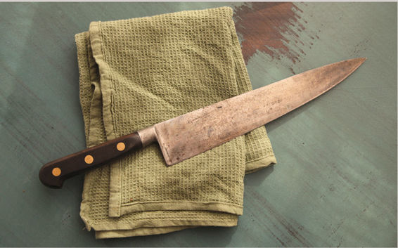
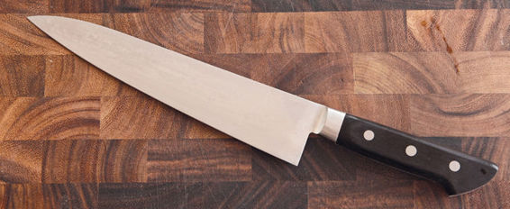
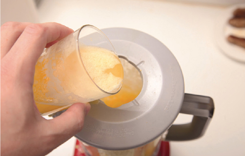
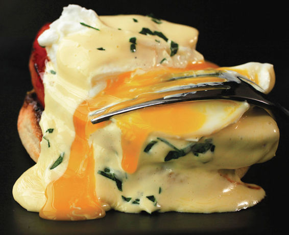
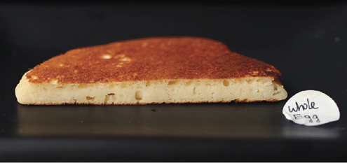
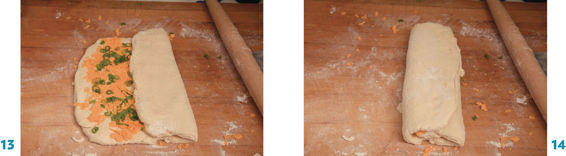

Eggs boiled for 30-second intervals from 0 to 12 minutes.
Eggs boiled for 30-second intervals from 0 to 12 minutes.
To Adri, who loves me despite the burgers;
To Ed, Vicky, and the whole Serious Eats team, for helping me do my thing;
To my father, the scientist;
To my grandfather, the nutty professor;
To the one sister I like better than the other;
To my mother, who would have preferred a doctor;
To the other sister as well;
To Dumpling, Hambone, and Yuba, the best taste-testers a man could ever hope for;
And to my grandmother, who would have preferred a Tostitos jar.
If you are going to follow links, please bookmark your page before linking.
PREFACE BY JEFFREY STEINGARTEN
INTRODUCTION: A NERD IN THE KITCHEN
THE KEYS TO GOOD KITCHEN SCIENCE
1 EGGS, DAIRY, and the Science of Breakfast
2 SOUPS, STEWS, and the Science of Stock
3 STEAKS, CHOPS, CHICKEN, FISH, and the Science of Fast-Cooking Foods
4 BLANCHING, SEARING, BRAISING, GLAZING, ROASTING, and the Science of Vegetables
5 BALLS, LOAVES, LINKS, BURGERS, and the Science of Ground Meat
6 CHICKENS, TURKEYS, PRIME RIB, and the Science of Roasts
7 TOMATO SAUCE, MACARONI, and the Science of Pasta
8 GREENS, EMULSIONS, and the Science of Salads
COMMON INGREDIENTS BY VOLUME AND MASS*
| INGREDIENT | TYPE | AMOUNT | WEIGHT |
| Water-Based Liquids (including water, wine, milk, buttermilk, yogurt, etc.) | 1 cup = 16 tablespoons | 8 ounces (227 grams) | |
| Eggs | Jumbo Extra Large Large Medium Small Peewee |
2.5 ounces (71 grams) 2.25 ounces (64 grams) 2 ounces (57 grams) 1.75 ounces (50 grams) 1.5 ounces (43 grams) 1.25 ounces (35 grams) |
|
| Flour | All-purpose Cake/pastry Bread |
1 cup | 5 ounces (142 grams) 4.5 ounces (128 grams) 5.5 ounces (156 grams) |
| Sugar | Granulated Brown (light or dark) Confectioners’ |
1 cup | 6.5 ounces (184 grams) 7 ounces (198 grams) 4.5 ounces (128 grams) |
| Salt | Table Diamond Crystal kosher Morton’s kosher |
1 teaspoon | 0.25 ounce (7 grams) 0.125 ounce (3.5 grams) 0.175 ounce (5 grams) |
| Instant Yeast | 1 teaspoon | 0.125 ounce (3.5 grams) | |
| Butter | 1 tablespoon = ⅛ stick | 0.5 ounce (14 grams) |
*Note: In standard U.S. recipes, liquids are measured in fluid ounces (volume), while dry ingredients are measured in regular ounces (weight).
VOLUME EQUIVALENCIES
3 teaspoons = 1 tablespoon
2 tablespoons = 1 fluid ounce
16 tablespoons = 1 cup (8 fluid ounces)
2 cups = 1 pint (16 fluid ounces)
4 cups = 1 quart (32 fluid ounces)
1 quart = 0.95 liters
4 quarts = 1 gallon
WEIGHT CONVERSIONS
There are 28.35 grams in one ounce.
COMMON WEIGHT CONVERSIONS
| ounces | grams |
| 1 | 28 |
| 2 | 57 |
| 3 | 85 |
| 4 | 113 |
| 5 | 142 |
| 6 | 170 |
| 7 | 198 |
| 8 (½ pound) | 227 |
| 9 | 255 |
| 10 | 284 |
| 11 | 312 |
| 12 | 340 |
| 13 | 369 |
| 14 | 397 |
| 15 | 425 |
| 16 (1 pound) | 454 |
| 24 (1½ pounds) | 680 |
| 32 (2 pounds) | 907 |
| 35.3 (1 kilogram) | 1000 |
| 40 (2½ pounds) | 1124 |
| 48 (3 pounds) | 1361 |
| 64 (4 pounds) | 1814 |
| 80 (5 pounds) | 2268 |
TEMPERATURE CONVERSIONS
To convert from Fahrenheit to Celsius: subtract 32, divide by 9, and multiply by 5.
To convert from Celsius to Fahrenheit: divide by 5, multiply by 9, and add 32.
COMMON TEMPERATURE CONVERSIONS
| °F | °C |
| 32 (freezing point of water) | 0 |
| 110 | 43.3 |
| 120 (rare red meat) | 48.9 |
| 130 (medium-rare red meat) | 54.4 |
| 140 (medium red meat) | 60 |
| 145 (extra-moist poultry breast) | 62.8 |
| 150 (medium-well red meat) | 65.6 |
| 155 (medium-well standard poultry breast) | 68.3 |
| 160 (well-done meat) | 71.1 |
| 190 (subsimmering water) | 87.8 |
| 200 (simmering water) | 93.3 |
| 212 (boiling water) | 100 |
| 275 | 135 |
| 300 | 148.9 |
| 325 | 162.8 |
| 350 | 176.7 |
| 375 | 190.6 |
| 400 | 204.4 |
| 425 | 218.3 |
| 450 | 232.2 |
| 475 | 246.1 |
| 500 | 260 |
| 525 | 273.9 |
| 550 (max oven temperature) | 287.8 |
Longtime fans of J. Kenji López-Alt can celebrate.
For years we’ve loved (and cooked from) his practical columns about kitchen science on the excellent seriouseats.com website. With this book—precise and serious, witty and relaxed—Kenji joins the glittering constellation of men and women who have, over the past thirty years, brought the ancient human art of feeding ourselves into the scientific age. What goes on within a cube of ice or a stew-pot has followed the three laws of thermodynamics, among many others, for the past forty thousand years—or however long you believe it’s been since our species’ first act of cooking—but we just never really knew it. Kenji stands on the shoulders of giants, of Achatz, Adria, Arnold, Blumenthal, Kurti, McGee, Myrhvold, Roca, and This—all of whom have brought the realm of pure thought into the scullery, where it materialized into something delectable. Kenji does it in his own way. He has a degree from MIT and eleven years in restaurant kitchens—in my mind, the two minimum qualifications for a man who would aim to make a better hamburger or, to my surprise, boil a better pan of water. Kenji’s recipes produce simple, delicious specimens of home cooking. They are not difficult to carry out, but they can be extremely precise, while the thought behind them may be complex, and his testing obsessive. But Kenji’s book is not about recipes. And I’ll bet you can’t read even ten pages of it without becoming a better cook.
—Jeffrey Steingarten
My grandfather was an organic chemist, my father was a microbiologist, and I was a little nerdling.
I was never meant to be a cook. Just ask my mom, she’ll tell you. Doctor? Sure. Lawyer? Yep—I can argue with the best of ’em. Scientist? Definitely. In fourth grade, we were given an assignment: write a book about ourselves in the future. I distinctly remember my future life according to my ten-year-old self. I’d be married at twenty-four. I’d have my first kid at twenty-six. I’d get my PhD by twenty-nine (how I’d manage to get my PhD while trying to raise a kid was a question I never asked myself). By thirty, I’d discover a cure for cancer, winning a Nobel prize. Having made my mark on the world, I’d spend the next forty years fulfilling my duties as the President of LEGOLAND before finally retiring and leaving the world a better place at the age of eighty-seven.
Lofty dreams indeed, but things seemed to be going on track all through high school. I did well in math and sciences (and particularly poorly in English, for the record), spending my summers playing music (chamber music camp, not band camp, thank you very much!) or working in biology laboratories. Did I ever show an inclination to cook? Not really. I took an after-school cooking class in third grade, where I learned to make simple syrup and stone soup. My dad trained me in the art of making open-faced tuna melts on Saturdays. He also taught me a valuable lesson in how not to cut a block of frozen beef straight from the freezer into steaks—a memorable afternoon that included the line, “Kenji, go get me the hammer,” and concluded with shards of knife all over the kitchen floor and beef still as blocky as it ever was.
My specialties all through high school were half-assed guacamole and perfectly heated frozen chicken potpies. The one time I did exert myself in the kitchen, I produced a batch of what I thought were some pretty awesome almond tuiles coated in chocolate and filled with raspberry preserves. Being the incurable romantic that I am, I’d slaved over them for my high school girlfriend for Valentine’s Day, see? Turns out she wasn’t as into romantic nerds as I thought she was. I got dumped on Valentine’s Day, her dad ate the tuiles, and my fledgling cooking career was put on hiatus.
The time for me to move upward and onward with my college education finally came, and I entered the Massachusetts Institute of Technology—that temple of science where nerdfolk congregate en masse to talk hertz and bytes and the average student wears only two-thirds of a pair of shoes during winter (I brought down the average).
For a while I fit right in, finally at home amongst my fellow geeks, reveling in the fascinating subculture and learning more than I’d ever learned before (mostly about such scientific puzzles as precisely how many whiskey-and-Cokes it takes before the next morning’s hangover will prevent you from attending an 11 a.m lecture). But slowly a grim reality dawned on me: I loved biology and science, but I hated working in biology labs. It was the slowness of it all, the months and months of experimenting that would finally reveal results that showed you were wrong all along—and could you please repeat those tests? I got restless. I got annoyed, and I did what all heroes should do in a time of crisis: I ran away.
That’s right.
That summer, I made the conscious decision not to take another job in a biology lab. Here I was, in the prime of my youth, pissing it away playing with pipettes and DNA sequencers. I set out with the goal of taking as nonacademic a job as I possibly could. Waitering seemed like a good gig. Meet cute girls, eat good food, hang out with cooks, party every night because I don’t have to show up to work until 3 p.m. Basically, a repressed college kid’s dream. As it happened, the first restaurant I walked into—an abysmal Mongolian grill-style joint in Harvard Square—wasn’t in need of waiters, but it was desperately in need of cooks.*
Without hesitating, I signed on. And that was the beginning of the end for me. Like a head-injury patient who suddenly develops a brand-new personality, something snapped the moment my hand touched a knife in a professional kitchen. I was no longer in control of my own destiny. Since that day, since the first time I wore that silly baseball hat and the T-shirt that identified me in no uncertain terms as a Knight of the Round Grill (seriously), I was a cook. It didn’t matter to me that I knew nothing about cooking and that my job mostly consisted of flipping asparagus spears with my double-fisted spatulas. I knew right then that I’d discovered what I was going to do with the rest of my life.
I was ravenous. I tore through every cookbook I could lay my hands on. Going to the beach? Forget the Frisbee—I’m bringing Pépin. Friends heading to a movie? I’ll be in the kitchen with my dog-eared Chinese cookbook. I worked in restaurants as much as my class schedule would allow, making up for lack of experience with brute force and sheer willpower. Unfortunately, what with trying to attain a degree and a decided lack of a cooking mentor (the closest I had was our fraternity chef, who was better at snorting coke off the piano than tourné-ing a potato), cooking for me was filled with an endless series of unanswered questions.
Why do I have to cook pasta in a huge volume of water? Why does it take so much longer to bake a potato than to boil it? How come my pancakes always suck? And what’s really in baking powder anyway? I made a pact with myself then and there that as soon as I was finished with college, I’d never again do anything that I didn’t enjoy doing. I’d spend my life trying to answer these questions that so fascinated me. The fact that cooks make very little money and work crazy schedules—I might not see my friends and family on holidays ever again—didn’t deter me. I’d found my passion, and even if it made me a pauper, I’d be damned if I didn’t follow it.
My mother did not take the news well.
Sure, I finished up my schooling (eventually graduating with a degree in architecture) while working part-time in restaurants, and I learned quite a bit about good science along the way (never once did I lose my interest in science itself—just in the practice of biology), and after graduating, I started working for some of the greatest chefs in Boston, but to my mom, a cook was a cook was a cook. Carefully plating a perfectly sautéed fillet of striped bass with a caviar beurre blanc and cute little tournéed radishes was no different from flipping burgers to her. (Ironically, she was sort of right—these days I find flipping burgers more fascinating than fancy restaurant food.)
At least, I thought to myself, working in these great restaurants, I’ll finally have the answers I’ve been seeking.
Not so fast.
First day on the line, I was given a lesson in the traditional double-fry technique for French fries: a dip in low-temperature oil for a few minutes, followed by a second fry in high-temperature oil. My first question was one that I thought was obvious to any free thinker: if the purpose of the first fry is merely to cook the potatoes all the way through, as many people had told me, shouldn’t it be possible instead to boil the potatoes first until cooked through, followed by a single fry?
The chef de cuisine’s response: “Em . . ., it might be possible, but you just don’t do it. Don’t ask so many questions, I don’t have time to answer them all.” Right as his answer was, it was hardly the pinnacle of scholarly sentiment or scientific inquiry that I had hoped for. Truth be told, as a professional cook, and with the hours that came with the territory, I had even less time to pursue the answers to the cooking questions I had, which were now beginning to mount like order tickets on a busy Saturday night.
So, after eight years of working in restaurants, I decided to shift tracks: perhaps recipe development and publishing were where the answers lay. It was only after I made this shift that my curiosity finally began to be sated. As a test cook and editor at Cook’s Illustrated magazine, I not only had the opportunity to start answering my questions, I was also paid to do it! Here was a job that finally combined the top three of my four greatest loves: tasting great food, the scientific pursuit of knowledge, and the physical act of cooking (my wife would be the fourth), and it was a truly liberating experience. I discovered that in many cases—even in the best restaurants in the world—the methods that traditional cooking knowledge teaches us are not only outdated but occasionally flat-out wrong.
Then I moved back to New York City with my wife and discovered a job even better than the one I had at Cook’s Illustrated. As chief creative officer at Serious Eats (www.seriouseats.com) and the author of its popular “The Food Lab” column, I was finally 100-percent free to do exactly what I wanted to do, explore the questions I wanted to explore, test the things I wanted to test, and cook the food I wanted to cook. And the best part? Doing it for a community of food lovers every bit as passionate and thoughtful about what they put in their mouths as I am.
Sure, I earn my keep in a number of ways, and testing and writing recipes is only a small part of it. I push commas, I stick words together, I blab about pizza this or hamburger that online, I fake my way through the occasional annoying business meeting or schmooze-fest foodie event; heck, it turns out that I even write a book now and then. But in the end, I’m a cook, and that’s all I really ever wanted to be.
About twenty years ago, celebrated food scientist, author, and personal hero Harold McGee made a simple statement: contrary to popular belief, searing meat before roasting it does not “lock in the juices.†” Now, saying this to a cook was like telling a physicist that rocks fall upward or an Italian that pizza was invented in Iceland. Ever since the mid-nineteenth century, when German food scientist Justus von Liebig had first put forth the theory that searing meat at very high temperatures essentially cauterizes its surface and creates a moistureproof barrier, it had been accepted as culinary fact. And for the next century and a half, this great discovery was embraced by world-famous chefs (including Auguste Escoffier, the father of French cuisine) and passed on from mentor to apprentice and from cookbook writer to home cook.
You’d think that with all that working against him, McGee must have used the world’s most powerful computer, or at the very least a scanning electron microscope, to prove his assertion, right? Nope. His proof was as simple as looking at a piece of meat. He noticed that when you sear a steak on one side, then flip it over and cook it on the second side, juices from the interior of the steak are squeezed out of the top—the very side that was supposedly now impermeable to moisture loss!
It was an observation that anyone who’s ever cooked a steak could have made, and one that has since led restaurants to completely revise their cooking methods. Indeed, many high-end restaurants these days cook their steaks first, sealed in plastic, in low-temperature water baths, searing them only at the end in order to add flavor. The result is steaks that are juicier, moister, and more tender than anything the world was eating before von Liebig’s erroneous assertion was finally disproved.
The question is, if debunking von Liebig’s theory was such a simple task, why did it take nearly a hundred and fifty years to do it? The answer lies in the fact that cooking has always been considered a craft, not a science. Restaurant cooks act as apprentices, learning, but not questioning, their chefs’ techniques. Home cooks follow the notes and recipes of their mothers and grandmothers or cookbooks—perhaps tweaking them here and there to suit modern tastes, but never challenging the fundamentals.
It’s only in recent times that cooks have finally begun to break out of this shell. Restaurants that revel in using the science of cookery to come up with new techniques that result in pleasing and often surprising outcomes are not just proliferating but are consistently ranked as the best in the world (Chicago’s Alinea or Spain’s now-closed El Bulli, for example). It’s an indication that as a population, we’re finally beginning to see cooking for what it truly is: a scientific engineering problem in which the inputs are raw ingredients and technique and the outputs are deliciously edible results.
Now, don’t get me wrong. I’m not out to try and prove to you that foams are the way of the future or that your eggs need to be cooked in a steam-injected, pressure-controlled oven to come out right. I’m not here to push some sort of newfangled, fancified, plated-with-tweezers, deconstructed/reconstructed cuisine. Quite the opposite, in fact.
My job is simple: to prove to you that even the simplest of foods—hamburgers, mashed potatoes, roasted Brussels sprouts, chicken soup, even a g&#amn salad—are every bit as fascinating, interesting, storied, and delicious as what the chefs wearing the fanciest pants these days are concocting. I mean, have you ever stopped to marvel about exactly what goes on inside a hamburger when you cook it? The simultaneous complexity and simplicity of a patty formed from the chopped muscle mass of selected parts of a remarkably intricate animal, seasoned with salt and pepper, seared on a hot piece of metal, and then slipped into a soft toasted bun? You haven’t? Well, let me give you a quick rundown to show you what I’m talking about.
ON HAMBURGERS
Hamburgers start as patties of beef . . . , no, let me back up a bit. Burgers actually start as ground beef that’s then formed into . . . , no, sorry, even further back. Hamburgers start with whole cuts of beef that are then ground into . . . Wait a minute, let’s get all Inception on this and go one level deeper: hamburgers start with cows—animals that live exceedingly complicated lives, that can differ not only in breed and feed, but also in terms of exercise, terrain they’re exposed to, how and when they’re slaughtered, and whether they live on grass their whole lives or are supplemented with grain. From these animals come many cuts of meat that vary in flavor according to fat content, their function during the animal’s life, and its specific diet. Blending specially selected cuts will lead to ground beef with the optimal flavor and fat profile.
From there, it’s just a simple matter of grinding, forming patties, and cooking, right?
Not so fast. How you grind your beef can have a profound impact on the texture of the finished burgers. Think all ground beef is created equal? Think again. And what about salting? Do you salt the meat and blend it in, or do you salt the outside of the patties? How do you form those patties? Pressing the beef into a ball and flattening it works, but is that really the best way? And what causes those burgers to puff up into softball-shaped spherical blobs when you cook them anyway? Once you start opening your mind to the wonders of the kitchen, once you start asking what’s really going on inside your food while you cook it, you’ll find that the questions keep coming and coming, and that the answers will become more and more fascinating.
Not only does answering questions about burgers help you to cook your burgers better, but it also reveals applications to all sorts of other situations. We start big fat burgers off on the cooler side of the grill and finish ’em with a sear in order to get a nice, perfectly even medium-rare color throughout, along with a strong, crusty sear. Guess what the best way to cook a big fat steak is? You got it: the exact same method applies, because the proteins and fat in a steak are similar to those in a hamburger.
Still not too sure what I mean? Don’t worry, we’ll answer all of these questions and more in due time.
THE FIRST STEP TO WINNING IS LEARNING HOW NOT TO FAIL
Have you ever made the same recipe a half dozen times with great results, only to find that on the seventh time, it completely fails? The meat loaf comes out tough, perhaps, or the pizza dough just doesn’t rise. Oftentimes it’s difficult to point to exactly what went wrong. If you’re a tinkerer in the kitchen, you like to modify recipes a bit here and there to suit your own taste or mood. That’s all well and good, and luckily, the first six times, your modifications didn’t affect the outcome of the recipe. What changed on that seventh time? Could it be the extra salt you added? Perhaps the temperature of the room? Or maybe it’s that you ran out of olive oil and used canola instead. Perhaps your stand mixer was on the fritz, so you blended everything by hand.
The point is, there are many ways you can stray from a written recipe, but only some of those forays will cause the recipe to fail. Being able to identify exactly which parts of a recipe are essential to the quality of the finished product and which parts are just decoration is a practical skill that will open up your opportunities in the kitchen as never before. Once you understand the basic science of how and why a recipe works, you suddenly find that you’ve freed yourself from the shackles of recipes. You can modify as you see fit, fully confident that the outcome will be a success.
Take a recipe for Italian sausage, for instance. The recipe in this book has you combine pork shoulder with salt and some aromatics, let the meat rest overnight, and then grind it and knead it the next day. Now, you’ve tasted my Italian sausage, and fair enough, you think it’s got too much fennel. OK, so you use less fennel and more marjoram the next time instead. Because you’ve read the sausage chapter and understand that the keys to a great-textured sausage are the interaction between the salt and meat and the method by which the ground meat is mixed, you’re confident that changing the spicing will still allow you to produce a great-tasting link. At the same time, you know that salt is what dissolves muscle proteins and allows them to cross-link, giving your sausage that snappy, juicy texture, so you can’t cut back on the salt the same way you can with the fennel. Likewise, you know that you can make your sausage out of turkey or lamb if you’d like, but you can’t change the fat content if you want it to remain juicy.
Fact: Cooking by rote—even when your mentors are some of the greatest chefs in the world—is paralyzing. Only by understanding the underlying principles involved in cookery can you free yourself from both recipes and blindly accepted conventional wisdom.
Starting to get an idea of what I’m talking about? Freedom. That’s what.
WHY THIS BOOK?
In many ways, the blog format is ideal for the type of work I do. I get to write about things in a pretty informal way and in return, my readers tell me what they think, ask insightful questions, and let me know what they’d like to see me tackle next. It’s communal, and I owe my success as a blogger as much to my readers and my ever-supportive, always fun, incredible coworkers and fellow bloggers as I do to myself.
That said, there are limits to what the blogging platform can support. It’s great for short articles, it does pictures OK, but good charts? Good graphs? Good, easy-to-understand layout? Long-form content? Forget about it. That’s where this book comes in. It represents the culmination of not just a decade and a half of cooking and studying the science of everyday foods, but of years of learning how to apply this science in ways that can help home cooks cook everyday food in better, tastier ways.
What you won’t find in this book are fancy-pants recipes calling for exotic ingredients or difficult techniques or chemicals or even much special equipment beyond, say, a food processor or a beer cooler. You also won’t find any desserts. They just aren’t my thing, and rather than fake a few of ’em, I figured I’d just own up to the fact that they just don’t interest me in the way savory food does. (Remember that whole thing about not doing anything that I don’t love doing?)
What you will find here is a thorough examination of classic recipes. You’ll find out why your fried chicken skin gets crisp, what’s going on inside a potato as you mash it, how baking powder helps your pancakes rise. Not only that, but you’ll discover that in many (most?) cases, the most traditional methods of cooking are in fact not the ideal way to reach the desired end results—and you’ll find plenty of recipes and instructions that tell you how to get better results. (Did you know that you can parcook pasta in room-temperature tap water? Or that the key to perfect French fries is vinegar?)
You’ll probably find that I talk about my wife and my dogs a bit too much, and that I’m an insane fan of both the Beatles and the pun, that lowest form of wit. I may rightfully be accused of making abstruse references to any or all of the following topics: The Simpsons. Cartoons and movies from the 1980s. Star Wars. British comedians. The Big Lebowski. MacGyver. To these crimes, I plead guilty, but I will not repent.
Occasionally you will come across an experiment designed for you to carry out yourself at home. All of these experiments are party-friendly, and most of them are kid-friendly too, so make sure you’ve got company around if you’re going to attempt them!
Some of you may use this book solely for the recipes, and there’s nothing wrong with that. I’ll still like you. I’ve done my best to write them as clearly and concisely as possible, and I guarantee each and every one of them will work as advertised (provided you follow the instructions). If they don’t work for you, I want to hear about it! Others may read through the entire book without ever cooking a single thing from it. I might even like you guys more than I like the recipe-only guys, for it’s what’s going on behind the scenes, or under that well-browned crust, that really interests me.
If you’re the armchair-cook type, you’re in luck. This book was written to work from front to back. Recipes in later chapters build on basic scientific principles discussed in earlier chapters. On the other hand, if you like skipping around—say, potato salad doesn’t interest you but roast beef sure does—well, you won’t have much trouble either. I’ve done my best to make each lesson self-contained, cross-referencing earlier chapters when necessary.
One thing I want to make clear here: This book is nowhere near comprehensive. Why would I put myself down like that? Well, it’s because the whole point of science is that it’s a never-ending quest for knowledge. No matter how much we know about the world around us, the world inside a block of cheese, or the world contained in an eggshell, the amount that we don’t know will always be much greater than what we do. The moment we think we know all the answers is the moment we stop learning, and I truly hope that time never comes for me. In the words of Socrates Johnson: “All we know is that we know nothing.”
If there are three rules that I think would make the world a better place if everyone followed them, it’d be these: challenge everything all the time, taste everything at least once, and relax, it’s only pizza.
SO WHY TRUST ME?
When I chime in on online message boards, when I write blog posts that make some pretty bold claims (like, say, that frying in hotter oil actually makes food absorb more grease, not less—see here), I often get the same questions shot back at me: Says who? Why should I trust you? I’ve been cooking my food [X] way since before you were born, who are you to say that there’s a better way?
Well, there are a number of answers I could give to this question: It’s my job to study food, test it, and answer questions about it. I have a degree from one of the top engineering schools in the country. I spent a good eight years cooking behind the stoves of some of the best restaurants in the country. I’ve edited recipes and articles in food magazines and on websites for almost a decade. These are all pretty good reasons to put your faith in what I say, but the truth of the matter is this: you shouldn’t trust me.
You see, “Just trust me” was the way of the old cooks. The MO of the master-apprentice relationship. Do what I say and do it now, because I say so. And that’s exactly the mentality we’re trying to fight here. I want you to be skeptical. Science is built on skepticism. Galileo didn’t come to the conclusion that the Earth revolves around the sun, not the other way around, by blindly accepting what everyone else was telling him. He challenged conventional wisdom, came up with new hypotheses to describe the world around him, tested those hypotheses, and then and only then did he ask people to believe in the madness that he was spouting from behind that awesome beard of his. He did, of course, die under house arrest after being tried by the Roman Inquisition for all of his troubles. (Let’s hope that doesn’t happen to any of you budding kitchen scientists.) And that was for something as trivial as describing the shape of the solar system. Meanwhile, we’re here tackling the big issues. Pancakes and meat loaf deserve at least as much scrutiny!
The point is this: if at any time while reading this book you come across something I’ve written that just doesn’t seem right, something that seems as if it hasn’t been sufficiently tested, something that isn’t rigorously explained, then I fully expect you to call me out on it. Test it for yourself. Make your own hypotheses and design your own experiments. Heck, just e-mail me and tell me where you think I went wrong. I’ll appreciate it. Honestly.
The first rule of science is that while we can always get closer to the truth, there is never a final answer. There are new discoveries made and experiments performed every day that can turn conventional wisdom on its head. If five years from now somebody hasn’t discovered that at least one fact in this book is glaringly wrong, it means that people aren’t thinking critically enough.
But some of you might be wondering now, what exactly is science? It’s a really good question, and a topic that’s often misunderstood. Let’s talk about it a bit.
{ The keys to good kitchen science }
Science is not about big words. It’s not about lab coats and safety goggles, and it’s definitely not about trying to make yourself sound fancy. Science is not an end in and of itself, but a path. It’s a method to help you discover the underlying order of the world around you and to use those discoveries to help you predict how things will behave in the future. The scientific method is based on making observations, keeping track of those observations, coming up with hypotheses to explain those observations, and then performing tests designed to disprove those hypotheses. If, despite your hardest, most sincere efforts, you can’t manage to disprove the hypotheses, then you can say with a pretty good deal of certainty that your hypotheses are true. That is what science is, and it can be as simple as observing that of the first three beers you had, the coldest one was the tastiest, and therefore it’s probably a good idea to chill down the fourth before you crack it open, or as complex as determining the gene that decides whether your kid’s eyes are going to be blue or brown.
Most of us practice science every single day, often without even knowing it. For instance, when I first got married, I noticed that there seemed to be a direct correlation between some of my wife’s bad moods and my propensity to leave the toilet seat up. (Observation.) I then thought to myself, perhaps if I put the toilet seat down more often, my wife’s mood and therefore my own happiness would improve. (Hypothesis.) I tried putting down the toilet seat a few times and waiting to see how my wife reacted. (Testing.) Noticing an improvement in her moods, I started putting the seat down almost every time, only occasionally leaving it up to test the continued validity of my hypothesis. Some folks would call this just being a good roommate/husband. I call it science.
Believe it or not, the kitchen is perhaps the easiest place for a regular person to practice science every day. You’ve certainly performed your own scientific experiments in the past. Here’s an example: You buy a new toaster with a darkness knob that goes from one to eleven (just in case you want it one shade darker than ten) and then notice your toast is coming out too dark on level six, so you turn it down to level four. Now your toast is too light. Working from these two observations, you hypothesize that perhaps five is the right level for your bread. Lo and behold, your next slice of toast and every slice of toast after that come out just right.
Now, that may not be the most groundbreaking observation in the history of science, and it is admittedly very limited in its application (I mean, you can’t even guarantee that the next toaster you own will have the same scale), but it’s science nevertheless, and in that sense, it’s no different from what professional scientists do every day.
Scientists know that bias can be a powerful force in experiments. Oftentimes scientists only see what they want to see and find the answers they want to find, even if they don’t realize it. Have you ever heard the story of Clever Hans the counting horse? Early in the twentieth century, Hans made quite a name for himself by apparently being intelligent enough to understand German, do arithmetic, recognize the days of the week, differentiate between musical tones, and even read and spell. His trainer would ask him questions and Hans would respond by tapping his hoof. For instance, when asked, “What is eight plus twelve?” he would stamp his hoof twenty times. The horse was a sensation, touring around Germany and amazing crowds with his incredible abilities.
After an intensive study carried out by the German board of education, the observers came to a shocking conclusion: the whole thing was a scam. Turns out that Hans wasn’t able to do any math at all. What he was quite good at was interpreting the facial expressions and attitudes of his trainer. As he slowly stamped his foot against the ground, he’d observe the tension in the trainer’s face; when he reached the correct number, the trainer would relax, Hans would know that he was finished, and he’d stop tapping. It’s a skill to be admired, for sure. Heck, most of my marital problems would be solved if I could tell when my wife was tense versus relaxed. But could the horse do math? Nope.
Yet here’s the thing: the trainer didn’t even realize what he was doing. He thought he had an amazingly intelligent horse. In fact, the horse was so good at reading faces that even when a complete stranger was asking him the questions, he would answer equally well. How did the members of the board finally prove that Hans’s so-called abilities were fake? They designed a series of scientific experiments. The simplest involved blindfolding the horse or having the trainer ask his questions out of Hans’s line of sight. As expected, suddenly his amazing intellect disappeared. The most interesting tests of all involved having the trainer ask the horse questions the trainer himself did not know the answers to. Guess what? If the trainer didn’t know the answer, neither did Hans.
THE POINT here, of course, is that designing a successful experiment—whether it involves a mathematical horse or takes place in your own kitchen—is about eliminating the bias of the experimenter (in this case, you). This isn’t always easy to do, but it’s almost always possible.
Let me tell you about an experiment I carried out a little while back to illustrate the seven key steps to a good tasting in the kitchen: eliminate bias, introduce a control, isolate variables, stay organized, address palate fatigue, taste, and analyze.
IS NEW YORK PIZZA REALLY ALL ABOUT THE WATER?
Just as jocks like to stick together and nerds travel in packs, obsessives bordering on the psychotic (like me) seek out the acquaintance of others like themselves, in a manner that some say borders on the, well, the obsessive. The first time I heard that the mineral content of water might have an effect on the properties of bread dough was about ten years ago, when I read Jeffrey Steingarten’s gloriously obsessive piece about Roman breads in the chapter titled “Flat Out” in his book It Must Have Been Something I Ate:
In the shower, the shampoo refuses to lather. This means that Roman water is high in minerals, which can be good for the color and texture of bread, but slows fermentation and tightens the dough. I reach for my scuba diver’s underwater writing slate, as seen on Baywatch, indispensable for recording those flashes of insight that so often strike one in the bath. We must test the water of Rome.
Unfortunately, despite the heroic efforts he went through to bring true pizza bianca and pane Genzano to the home cook, the water issue was never satisfactorily resolved.
Well, eight years later, I decided to try to resolve it for myself, along with the help of another obsessive: Mathieu Palombino, chef-owner of New York City’s Motorino, who kindly volunteered to aid me in my little experiment. The idea is simple: the minerals dissolved in water (mostly magnesium and calcium) can help proteins in the flour bond together more tightly, forming a stronger gluten structure, the network of interconnected proteins that gives dough its strength and elasticity. So, the higher the mineral content of water (measured in parts per million, or ppm), the stronger and chewier the dough. In theory, it makes sense, and it is easily provable in a laboratory. The more interesting question to me was, are the effects of the minerals in the water (referred to as Total Dissolved Solids, or TDS) significant enough to be detected by a normal eater in a real-world situation?
To answer the question, I charged Mathieu with making Neapolitan pizzas using waters with different TDS contents and brought in a panel of pizza experts to taste the finished pies. The problem is that the real world is, well, real, and as such, very difficult to control. In any scientific endeavor, there are a number of key principles that must be adhered to if you want to ensure that your results are accurate and repeatable—the hallmark of any sound experiment.
Key to a Good Tasting #1: Eliminate Bias
Despite our best efforts, we have yet to invent a device that empirically measures precisely how delicious pizza crust is, so our best option is to resort to the crude analyses of our mouths. Humans are notoriously bad at separating emotional responses to foods and food brands from their actual eating qualities, and the only way to eliminate this bias is with a double-blind tasting—a tasting in which neither the tasters nor the people preparing and serving the food know which sample is which.
To do that, I first gathered my waters—five different varieties of bottled waters with TDS contents ranging from less than 10 ppm (the maximum allowable for “purified” waters) all the way up to 370 ppm (mineral water on the high end of the TDS scale), along with tap water. I chose the specific brands because they were available at my local grocery.
• Aquafina: less than 10 ppm
• Dasani: approximately 40 ppm
• Tap water: approximately 60 ppm
• Rochetta: 177 ppm
• San Benedetto: 252 ppm
• Evian: 370 ppm
I transferred all the waters to clean bottles marked simply with numbers, making sure to note which water was in each bottle. That way, when I dropped the bottles off at Motorino—which I did without actually seeing Mathieu, lest I unknowingly reveal any information, like Hans and his trainer—Mathieu would have no idea what he was working with.
Normally I systematically ignore the advice of my better half, a PhD student in cryptography (that’s the study of encryption, not the study of tombs), but this time, I shut up and listened to her for a change. She suggested that in order to further decrease bias and, more importantly, to allow me to participate in the tasting as well, she—an unbiased third party—should rearrange the numbered caps on all the bottles, taking note of which caps were moved to which bottles.
The result: three levels of encryption involving three different keys, none of which were useful on their own. Neither myself, my wife, my tasters, nor our talented chef would know which pizza was made with which water until after the tasting, when my wife would reveal how the bottle caps were switched, Mathieu would reveal which bottle of water was used to make each dough, and I would reveal which number corresponded to which brand.
Key to a Good Tasting #2: Introduce a Control
The concept of a control is a simple one, but one that is often overlooked. The idea is that you need to include at least one sample in your tasting for which the answer is already known. That way, you can be sure that the experiment went according to plan and that your other results are reliable. In the case of a double-blind experiment like this one, it means doubling up on at least one of your samples. If the results for both are the same, then you have a pretty strong case that the experiment went according to plan.
In this case, I doubled up on both tap water and Evian, making a total of eight water samples. If the testing procedures were sound, and our palates were as fine-tuned as I believed them to be, the crusts made with the same water should be ranked very close to each other in the tasting.
Key to a Good Tasting #3: Know What You Are Asking (Isolate Variables)
In Douglas Adams’s Hitchhiker’s Guide to the Galaxy, a team of scientists builds a supercomputer that is finally able to answer the Big Question: the Answer to Life, the Universe, and Everything. The ultimate irony is that when they’re finally given the answer—forty-two—they realize that they never really knew exactly what they were asking in the first place.
Now, these were very poor scientists. Rule Numero Uno when it comes to science is this: Be very precise about what question you are trying to answer. The more limited the scope of your question, the easier it will be to design an experiment to answer it. There are approximately a gajillion variables when it comes to pizza, each one of them interesting in its own way. But here, I was interested in only one: how does the water’s mineral content affect the dough? What that meant was that in order to isolate that single variable, I’d have to ensure that every single other variable out of those gajillion remained exactly the same from sample to sample. Easier said than done.
In the real world—particularly with cooking—there are an insane amount of variables to try and control for. Perhaps that log in the wood-burning oven is gonna burn slightly hotter for pizza #2 than for pizza #1, raising the temperature by a couple of degrees. Or maybe Mathieu will have to wait for a server with a load of dishes to pass by before inserting pizza #5 into the oven, adding a few seconds to its trip. This is an inevitable, unavoidable reality when it comes to science. What we can hope, however, is that these tiny changes in method from sample to sample will make a negligible difference compared to the variable we are actually testing for. We can also do our best to make sure every sample is treated the same.
I asked Mathieu to weigh the ingredients for each batch of dough precisely and to ensure that each batch was kneaded for the same length of time and allowed to ferment at the same temperature. While normally the pizzaioli at the restaurant take turns shaping, saucing, and baking the pizzas, this time Mathieu himself made each one from start to finish, ensuring that the method used was as consistent as possible.
On top of those measures, I also decided to present each sample in two forms: as a completed Margherita pizza and as a simple disk of dough baked on its own, to eliminate any variability that differences in topping distribution might add.
Key to a Good Tasting #4: Stay Organized
Who better to taste pizzas than New York’s foremost pizza cognoscenti, Ed Levine and Adam Kuban? In addition, Alaina Browne of the Serious Eats team joined us, along with my wife (as a reward for her good advice), and—through a miraculously fateful act of good networking—Jeffrey Steingarten himself, the very man who had unknowingly started me down the path of pizza (and, indeed, of food writing, period). Before arriving at the restaurant, I drew up tasting sheets for my panel to fill out. Each pizza was to be evaluated in four categories, and each category was rated on a scale from one to ten:
• Dough Toughness: Is it tender like cake or as chewy as leather?
• Dough Crispness: Does it crackle, or is it flaccid?
• Oven Spring: Did it form large, airy bubbles, or is it compact and dense?
• Overall Quality: How do you like it?
The first five tasters (including myself) arrived promptly at 4 p.m., with chef Mathieu waiting for us. Jeffrey, however, was nowhere to be seen, though he had warned me that he might be a bit late due to an important meeting. Ed phoned up his assistant. Evidently, his important meeting was in his bed with Sky King, his dog, but not to worry—his jacket was on, and he was hard at work on his shoelaces.
Meanwhile, Mathieu informed us that he’d dropped half of the first sample on the floor, meaning that for that batch, we’d only be tasting one pie, not two. Not to worry. Even Tesla must have dropped a few coils in his day, right? My perfectly orchestrated plans were beginning to slip, but a glass of Brachetto and a small plate of fingerling potatoes tossed with anchovies and olives helped me pull my senses back into focus.
Key to a Good Tasting #5: Watch Out for Palate Fatigue
As soon as Mr. Steingarten arrived, fresh from his nap, I turned to Mathieu and gave him the go-ahead. Within three minutes, the first leopard-spotted, tender-crisp beauty was on the table. Eight pizzas among six people is a lot to consume in a single sitting, even for epic eaters like our humble tasting panel, and there was no way the pizzas in the latter half of the tasting were going to get a fair shake. Ideally, we’d have each taster taste samples in a different order. That way, one would be starting with number one, another with number six, another with number three, and so on, hopefully evening out the playing field. But given that the pizzas had to be baked one at a time, this was simply not possible. So we did the next best thing: one pie out of each batch of two was eaten straight out of the oven and the second one was saved until all eight were on the table. That way, we could go back and retaste to ensure that our original thoughts were sound, and we could taste all eight side by side.
Sparkling water and wine were provided (the latter after much deliberation) in order to rinse our mouths between bites.
Key to a Good Tasting #6: Taste
Tasting is different from eating. I often get asked, “How can you review a restaurant fairly or how can you say one product is better than another? Doesn’t it depend on how hungry you are at the time?” And, indeed, mood and appetite can have a powerful effect on how much you enjoy eating a particular food at any one time. But the goal of analytical tasting is to assess qualities of the food beyond your gut reaction of whether it’s good or bad. With pizza, for example, I start by taking a slice from each pie with an across-pie-average of charring, bubbles, sauce, and cheese. I then bite just the tip, noting the pressure of the crust on my lower teeth to gauge its degree of crispness. As I pull the slice away from my mouth, applying just a bare soupçon of torque, I judge the effort it takes for the dough to tear. (In this case, Pizza #5 was clearly tougher than the rest, I thought triumphantly—one must never talk to his fellow tasters during a blind tasting lest your opinion influence those of others—so it must certainly be one of those high-mineral samples.)
After carefully working my way up the side of each slice, I evaluate the cornicione (the raised rim of the pizza). It’s hard to find fault with any of them, but does #3 look just a shade paler than the rest, indicating a lower-mineral-content water? Could be. But if so, why isn’t it also more tender? See, these are observations you can make relatively empirically—that is, free from bias. Sure, eating the same pizza when starving versus when stuffed will elicit two different reactions, but by reducing each one to basic elements that are more easily quantified—crispness, chewiness, degree of charring—you can get a more accurate picture of the pizza overall, divorcing it from the mental bias of your current state of mind.
With the pizzas tasted, we thanked Mathieu for his incredible pizza (the best in the city, for my money), and bravely made our separate ways through the night, several degrees more content and several pounds heavier.
Key to a Good Tasting #7: Analyze
Once all the tasting has been done and all the data collected, it’s your job to analyze it in order to make the most reasonable assessment you can about what factors are affecting your variable. In the case of the pizzas, that meant charting the data and listing it in order from lowest mineral content (which should presumably deliver more more tender, softer, less-sprung, paler dough) to highest. If everything went according to theory, the lines for crispness, toughness, and airiness should all show distinct trends, going up or down as the mineral content of the water increases.
As it turns out, no such trends existed. True, the two batches made with Evian—the highest mineral content of all the water we tried—delivered the crispest crusts, but overall, there was not enough of a trend in the data to make a definitive statement. And you know what? Sometimes—more often than not—an experiment, no matter how closely controlled, does not produce the results you were looking for. Which is not to say that we got no results at all. In fact, taking a second look at the data, I saw that the rankings for crispness follow in step pretty closely with the rankings for overall enjoyment—implying that our enjoyment of pizza is directly related to how crisp it is. We all want a crisp crust, not a soggy one.
Earth-shattering, I know.
On the other hand, we can now pretty definitively say that the small differences that arise naturally in the course of making a good pizza by hand far outweigh any difference the mineral content of the water could make. That is to say, great New York pizza is most certainly not dependent on using New York City tap water, which is good news for everyone else in the world.
{ What is cooking? }
I know you’re eager to jump right in and start cooking, but first answer this question: What is cooking?
If you’re my wife, your answer will be, “It’s that thing you do when that crazy look comes into your eyes.” A great chef might tell you that cooking is life. My mom would probably say that it’s a chore, while my wife’s aunt would tell you that cooking is culture, family, tradition, and love. And, yes, cooking is all of those things, but here’s a more technical way to think about it: Cooking is about transferring energy. It’s about applying heat to change the structure of molecules. It’s about encouraging chemical reactions to alter flavors and textures. It’s about making delicious things happen with science. And before we can even begin to understand what happens when we grill a hamburger, or even what equipment we might want to stock our kitchen with, we have to get one very important concept into our heads first, as it’ll affect everything we do in the kitchen, starting with which pots and pans we use. It’s this: Heat and temperature are not the same thing.
At its most basic, cooking is the transfer of energy from a heat source to your food. That energy causes physical changes in the shape of proteins, fats, and carbohydrates, as well as hastens the rate at which chemical reactions take place. What’s interesting is that most of the time, these physical and chemical changes are permanent. Once a protein’s shape has been changed by adding energy to it, you can’t change it back by subsequently removing that energy. In other words, you can’t uncook a steak.
The distinction between heat and temperature can be one of the most confusing things in the kitchen, but grasping the concept is essential to helping you become a more rational cook. Through experience, we know that temperature is an odd measure. I mean, pretty much all of us have walked around comfortably in shorts in 60-degree weather but have felt the ridiculous chill of jumping into a 60-degree lake, right? Why does one but not the other make us cold, even though the temperature is the same? Let me try to explain.
Heat is energy. Third-grade physics tells us that everything from the air around us to the metal on the sides of an oven is composed of molecules: teeny-tiny things that are rapidly vibrating or, in the case of liquids and gases, rapidly bouncing around in a random manner. The more energy is added to a particular system of molecules, the more rapidly they vibrate or bounce, and the more quickly they transfer this movement to anything they are touching—whether it’s the vibrating molecules in a metal pan transferring energy to a juicy rib-eye steak sizzling away or the bouncing molecules of air inside an oven transferring energy to the crusty loaf of bread that’s baking.
Heat can be transferred from one system to another, usually from the more energetic (hotter) system to the less energetic (cooler). So when you place a steak in a hot pan to cook it, what you are really doing is transferring energy from the pan-burner system to the steak system. Some of this added energy goes to raising the temperature of the steak, but much of it gets used for other reactions: it takes energy to make moisture evaporate, the chemical reactions that take place that cause browning require energy, and so on.
Temperature is a system of measurement that allows us to quantify how much energy is in a specific system. The temperature of the system is dependent not only on the total amount of energy in that body, but also on a couple of other characteristics: density and specific heat capacity.
Density is a measure of how many molecules of stuff there are in a given amount of space. The denser a medium, the more energy it will contain at a given temperature. As a rule, metals are denser than liquids,‡ which, in turn, are denser than air. So metals at, say, 60°F will contain more energy than liquids at 60°F, which will contain more energy than air at 60°F.
Specific heat capacity is the amount of energy it takes to raise a given amount of a material to a certain temperature. For instance, it takes exactly one calorie of energy (yes, calories are energy!) to raise one gram of water by one degree Celsius. Because the specific heat capacity of water is higher than that of say, iron, and lower than that of air, the same amount of energy will raise the temperature of a gram of iron by almost ten times as much and a gram of air by only half as much. The higher the specific heat capacity of a given material, the more energy it takes to raise the temperature of that material by the same number of degrees.
Conversely, this means that given the same mass and temperature, water will contain about 10 times as much energy as iron and about half as much as air. Not only that, but remember that air is far less dense than water, which means that the amount of heat energy contained in a given volume of air at a given temperature will be only a small fraction of the amount of energy contained in the same volume of water at the same temperature. That’s the reason why you’ll get a bad burn by sticking your hand into a pot of 212°F boiling water but you can stick your arm into a 212°F oven without a second thought (see “Experiment: Temperature Versus Energy in Action,” here).
Confused? Let’s try an analogy.
Imagine the object being heated as a chicken coop housing a dozen potentially unruly chickens. The temperature of this system can be gauged by watching how fast each individual chicken is running. On a normal day, the chickens might be casually walking around, pecking, scratching, pooping, and generally doing whatever chickens do. Now let’s add a bit of energy to the equation by mixing a couple cans of Red Bull in with their feed. Properly pepped up, the chickens begin to run around twice as fast. Since each individual chicken is running around at a faster pace, the temperature of the system has gone up, as has the total amount of energy in it.
Now let’s say we have another coop of the same size but with double the number of chickens, thereby giving it double the density. Since there are twice as many chickens, it will take double the amount of Red Bull to get them all running at an accelerated pace. However, even though the final temperature will be the same (each individual chicken is running at the same final rate as the first ones), the total amount of energy within the second coop is double that of the first. So, energy and temperature are not the same thing.
Now what if we set up a third coop, this time with a dozen turkeys instead of chickens? Turkeys are much larger than chickens, and it would take twice as much Red Bull to get one to run around at the same speed as a chicken. So the specific heat capacity of the turkey coop is twice as great as the specific heat capacity of the first chicken coop. What this means is that given a dozen chickens running around at a certain speed and a dozen turkeys running around at the same speed, the turkeys will have twice as much energy in them as the chickens.
To sum up:
• At a given temperature, denser materials generally contain more energy, and so heavier pans will cook food faster. (Conversely, it takes more energy to raise denser materials to a certain temperature.)
• At a given temperature, materials with a higher specific heat capacity will contain more energy. (Conversely, the higher the specific heat capacity of a material, the more energy it takes to bring it to a certain temperature.)
In this book, most recipes call for cooking foods to specific temperatures. That’s because for most food, the temperature it’s raised to is the primary factor determining its final structure and texture. Some key temperatures that show up again and again include:
• 32°F (0°C): The freezing point of water (or the melting point of ice).
• 130°F (52°C): Medium-rare steak. Also the temperature at which most bacteria begin to die, though it can take upward of 2 hours to safely sterilize food at this temperature.
• 150°F (64°C): Medium-well steak. Egg yolks begin to harden, egg whites are opaque but still jelly-like. Fish proteins will tighten to the point that white albumin will be forced out, giving fish like salmon an unappealing layer of congealed proteins. After about 3 minutes at this temperature, bacteria experience a 7 log reduction—which means that only 1 bacteria will remain for every million that were initially there).
• 160° to 180°F (71° to 82°C): Well-done steak. Egg proteins fully coagulate (this is the temperature to which most custard- or egg-based batters are cooked to set them fully). Bacteria experience a 7 log reduction within 1 second.
• 212°F (100°C): The boiling point of water (or the condensation point of steam).
• 300°F (153°C) and above: The temperature at which the Maillard browning reactions—the reactions that produce deep brown, delicious crusts on steaks or loaves of bread—begin to occur at a very rapid pace. The hotter the temperature, the faster these reactions take place. Since these ranges are well above the boiling point of water, the crusts will be crisp and dehydrated.
SOURCES OF ENERGY AND HEAT TRANSFER
Now that we know exactly what energy is, there’s a second layer of information to consider: the means by which that energy gets transferred to your food.
Conduction is the direct transfer of energy from one solid body to another. It is what happens when you burn your hand by grabbing a hot pan (hint: don’t do that). Vibrating molecules from one surface will strike the relatively still molecules on another surface, thereby transferring their energy. This is by far the most efficient method of heat transfer. Here are some examples of heat transfer through conduction:
• Searing a steak
• Crisping the bottom of a pizza
• Cooking scrambled eggs
• Making grill marks on a burger
• Sautéing onions
Steaks searing—heat through conduction.
Convection is the transfer of one solid body to another through the intermediary of a fluid—that is, a liquid or a gas. This is a moderately efficient method of heat transfer, though in cooking its efficiency depends greatly on the way the fluid flows around the food. The motion of the fluid is referred to as convection patterns.
As a general rule, the faster air travels over a given surface, the more energy it can transfer. Still air will rapidly give up its energy, but with moving air, the energy supply is constantly being replenished by new air being cycled over a substance such as food. Convection ovens, for instance, have fans that are designed to keep the air inside moving around at a good clip to promote faster, more even cooking. Similarly, agitating the oil when deep frying can lead to foods that crisp and brown more efficiently.
Here are some examples of heat transfer through convection:
• Steaming asparagus stalks
• Boiling dumplings in stock
• Deep-frying onion rings
• Barbecuing a pork shoulder
• The top of a pizza baking in an oven
Dumplings boiling—heat through convection.
Radiation is transfer of energy through space via electromagnetic waves. Don’t worry, that’s not as scary as it sounds. It doesn’t require any medium to transfer it. It is the heat you’re feeling when you sit close to a fire or hold your hand above a preheated pan. The sun’s energy travels to the earth through the vacuum of space. Without radiation, our planet (and indeed, the universe) would be in a lot of trouble!
An important fact to remember about radiant energy is that it decays (that is, gets weaker) by the inverse square law—the energy that reaches an object from a radiant energy source is proportional to the inverse of the square of its distance. For example, try holding your hand 1 foot away from a fire, then move it 2 feet away. Even though you’ve only doubled the distance, the fire will feel only about one-quarter as hot.
Here are some examples of radiant heat transfer:
• Roasting a pig on a spit next to hot coals
• Toasting garlic bread under the broiler
• Getting a tan from the sun
• Broiling some marinated salmon

The top of a pizza cooks via radiation.
Most of the time, in cooking, all three methods of heat transfer are used to varying extents. Take a burger on the grill, for example. The grill grate heats the patty directly where it is in contact with it through conduction, rapidly browning it at those spots. The rest of underside of the patty is cooked via radiation from the coals underneath. Place a piece of cheese on the burger and pop the lid down for a bit, and convection currents will form, carrying the hot air from directly above the coals up and over the top of the burger, melting the cheese.
Grilled burgers cook through all three forms of energy transfer.
You might notice that these three types of heat transfer heat only onto the surface of foods. In order for food to cook through to the center, the outer layer must transfer its heat to the next layer, and so on, until the very center of the food begins to warm up. Because of that, the outside of most cooked foods will almost always be more well done than the center (there are tricks to minimizing the gradient, which we’ll get to in time).
Microwaves are the only other standard method of energy transfer we commonly use in the kitchen, and they have the unique ability to penetrate through the exterior of food when heating it. Just like light or heat, microwaves are a form of electromagnetic radiation. When microwaves are aimed at an object with magnetically charged particles (like, say, the water in a piece of food), those particles rapidly flip back and forth, creating friction, which, in turn, creates heat. Microwaves can pass through most solid objects to a depth of at least a few centimeters or so. This is why microwaves are a particularly fast way to heat up foods—you don’t need to wait for the relatively slow transfer of energy from the exterior to the center.
Phew! Enough with the science lesson already, right? Bear with me. Things are about to get a lot more fun!
EXPERIMENT:
Temperature Versus Energy in Action
The difference between the definition of temperature and the definition of energy is subtle but extraordinarily important. This experiment will demonstrate how understanding the difference can help shape your cooking.
Materials
• 1 properly calibrated oven
• 1 able-bodied subject with external sensory apparatus in full working order
• One 3-quart saucier or saucepan filled with water
• 1 accurate instant-read thermometer
Procedure
Turn your oven on to 200°F and let it preheat. Now open the oven door, stick your hand inside, and keep your hand in the oven until it gets too hot to withstand. A tough guy like you could probably leave it in there for at least 15 seconds, right? 30 seconds? Indefinitely?
Now place a pan of cold water on the stovetop and stick your hand in it. Turn the burner to medium-high heat and let the water start to heat up. Stir it around with your hand as it heats, but be careful not to touch the bottom of the pan (the bottom of the pan will heat much faster than the water). Keep your hand in there until it becomes too hot to withstand, remove your hand, and take the temperature.
Results
Most people can hold their hand in a 200°F oven for at least 30 seconds or so before it becomes uncomfortably hot. But let it go much above 135°F, and a pan of water is painful to touch. Water at 180°F is hot enough to scald you, and 212°F (boiling) water will blister and scar you if you submerge your hand in it. Why is this?
Water is much denser than air—there are many times more molecules in a cup of water than there are in a cup of air. So, despite the fact that the water is at a lower temperature than the air in the oven, the hot water contains far more energy than the hot air and consequently heats up your hand much more rapidly. In fact, boiling water has more energy than the air in an oven at a normal roasting temperature, say 350° to 400°F. In practice, this means that boiled foods cook faster than foods that are baked or roasted. Similarly, foods baked in a moist environment cook faster than those in a dry environment, since moist air is denser than dry air.
There’s a lot of nonsense to wade through out there when trying to stock your kitchen. Do you really need that $300 knife? How often are you gonna pull out that salad spinner? And exactly which one of those things they sell on TV is really going to take the place of every other piece of equipment in my kitchen? (Hint: none of them.) The problem with most of the people telling you to buy things is that they’re usually the ones selling it. Who can you trust? Well, this chapter is a no-nonsense, no bullshit guide to point you toward what you really need in the kitchen and what is just noise.
Any Eddie Izzard fans in the audience? According to him, “The National Rifle Association says that guns don’t kill people—people kill people. But I think the gun helps.” Funny joke. But what’s it got to do with cooking?
I remember a time back when I first started working in restaurants. One of my jobs was to reduce a couple quarts of heavy cream down to a couple of pints. I’d get a big heavy pot with an aluminum base, pour the cream into it, and cook it over the lowest possible heat so that it’d reduce without even bubbling. I’d do this every morning, and it would take a couple hours, but no big deal; I had plenty of other tasks to keep me occupied—peeling potatoes, peeling salsify, peeling carrots (ah, the life of a green cook). Then one morning, the pot I usually reduced the cream in was being used. Rather than wait for it to free up, I just grabbed one of the thinner stockpots off the shelf, poured in my cream, and heated it as usual.
What I ended up with was a pot full of greasy, broken cream, with a broken ego to match (the ego has since been repaired, but the cream was a lost cause). Tipping it out into the sink revealed a ½-inch-thick crust of brown crud on the bottom. The problem? My pot was too thin and its conductivity was too low. Rather than distributing the heat evenly over the bottom of the entire pot, the heat was concentrated in the areas directly above the flames. Those areas got overheated, causing the proteins in the cream directly above them to coagulate, stick to each other (and to the pot), and eventually burn. Without the emulsifying effect of the proteins, the fat in the cream separated out into a distinct, greasy yellow layer. Ick.
Obviously, it was the pot’s fault, right? Well, not exactly. You often hear the expression “A bad cook blames his tools,” and it’s true: bad food is rarely bad because the pot was too thin or the blender was broken. But I think this is often misinterpreted. Nobody is saying that a good cook should be able to cook any dish regardless of the quality of their equipment. Reducing cream without a heavy, adequately conductive pot or an adequately low flame is nearly impossible, no matter how good a cook you are. Thin pots don’t burn cream—people burn cream. But I think the thin pot helps.
In reality, bad food is often bad because the cook chose to try and cook something that he didn’t have the proper tools for. This is, of course, just a more complicated way of saying, “Don’t be stupid.” And that’s good advice for all walks of life, whether or not they involve homogenized emulsions of butterfat, water, phospholipids, and milk proteins
All of this is just a roundabout way of saying that the physical hardware you stock your kitchen with is just as important as the ingredients you choose or the techniques you use when you cook. Good equipment is the third side of the Triforce of cooking: good ingredients + good equipment + good technique = good food.
POTS AND PANS
Now that we know all about heat transfer, let’s talk about the tools we use to transfer heat from a heat source (your burner or your oven) to your food. I’m talking pots and pans. There’s a stunning array of sizes and types available intended for a variety of uses, some of them highly specialized (think long, narrow fish poachers or tall, skinny asparagus pots), and others much more versatile. Unless you’re the type who poaches fish and boils asparagus for every single meal, the latter are the type you should go for.
Materials
When it comes to the performance of the given material in a pan, there are really two things that matter: its ability to distribute heat evenly across its entire surface (its conductivity) and its ability to retain heat and transfer it efficiently to food (its specific heat capacity and density).
Here are some common metals, along with their properties:
Stainless steel is very easy to maintain—as its name implies, it won’t rust or pit, no matter how much you mistreat it. But it also is an extremely poor heat conductor. What this means is that heat will not travel rapidly through it. Stainless steel pans tend to develop distinct hot and cold spots that match the heat pattern of your burners. This can lead to uneven cooking, resulting in, for example, an omelet that’s burned in some spots and still raw in others.
How do you gauge the heat distribution performance of a pan? The easiest way is to spread a thin layer of sugar evenly over the bottom, then heat it over a burner. The pattern in which the sugar melts will indicate the pan’s hot and cold spots. A great pan will melt sugar very evenly.
Aluminum is a far better conductor of heat—one of the best, in fact. It’s also a very inexpensive material. Why aren’t all pans made of aluminum, you might ask? Well, there are two problems. It’s not very dense, which means that despite its high-heat capacity, you’d need a pan that’s a ridiculously unwieldy thickness for it to retain a reasonable amount of heat. Furthermore, it discolors and pits if exposed to acidic ingredients: wine, lemon juice, tomatoes, etc.
Anodized aluminum has been treated to give it a ceramic-like finish that is reasonably nonstick, as well as resistant to acid. This is the ideal metal for cooking foods that don’t require an extraordinarily high level of heat. You wouldn’t want to sear a steak in an anodized aluminum pan, but nothing is better for cooking an omelet.
Copper is even more conductive than aluminum. It’s also quite dense, with a great heat capacity. But copper pans are very expensive. I’d love to have a great set of copper pots. I’d also love to have a lifetime supply of Stilton and a yacht with an onboard petting zoo. It ain’t gonna happen. If you can afford a set of copper pots, you are a much richer person than I. For the rest of us, let’s move on.
Laminated, or tri-ply, pans offer the best of both worlds. Generally, they are constructed with a layer of aluminum sandwiched between two layers of stainless steel. They have the high density of a stainless steel pan, with the great conductivity of aluminum, making them the pan of choice for most home cooks (including me!).
Time was that nonstick pans were pretty tough to recommend. Coatings that flake off or give off noxious fumes when heated too much are not something you want to be cooking with. These days, nonstick coatings are more durable and far safer. You’ll want to own at least one good nonstick pan for egg cookery.
The subject of cast-iron cookware is so divisive that I feel the need to go into a little bit more detail about it. Being a proud owner of both a puppy named Hambone and some really nice cast-iron cookware, I’ve found that they are remarkably similar in many respects. They both require a little work, a little patience, and a whole lot of loyalty. The main difference is that in return for my investment, my cast-iron pans give me golden brown fried chicken, sizzling bacon, corn bread, apple pies, well-charred hash, perfectly seared steaks, bubbly pizzas, and crisp dumplings. Hambone, on the other hand, gives me mostly licks, chews, and a whole lot of poop. You do the math.
As far as retaining heat goes, nothing beats a good cast-iron pan. Its specific heat capacity is lower than of aluminum, but because it is so dense, for the same thickness of pan, you get about twice the heat retention capability. This is important: the pan doesn’t cool down when you add food to it. While the temperature in a thin aluminum pan may drop by as much as 300 degrees when you add a half-pound rib-eye steak to it, a cast-iron pan will stay close to its original temperature, delivering a thicker, crisper, more evenly browned crust. Similarly, you can get away with using a little less oil when frying chicken, since the heat retained by the cast iron will rapidly reheat the oil when the chicken you add cools it down.
The fact that cast iron is oven-safe means that you can braise and bake in it just as well as you can fry or sear. Corn bread comes out with a beautiful golden brown crust, and pies, even with moist fillings, come out wonderfully crisp on the bottom. Its heat retention abilities mean that even when your oven’s temperature fluctuates (as most thermostat-driven ovens do), the pan’s heat will stay fairly constant.
And talk about durability! Cast-iron cookware is one of the few items in your kitchen that actually gets better as it gets older. Some of the very best pans have been passed down through multiple generations, their well-used surfaces worn as smooth and nonstick as a Teflon-coated pan—without the toxic chemicals. And because cast-iron pans are cast from a mold as a single piece of metal, there are no welded joints or even rivets to wear out.
There are, of course, a few downsides to cast iron:
• Until a good layer of seasoning has built up, food will stick to it. This goes for even the “preseasoned” skillets on the market now, which have a mediocre level of seasoning at best. With everyday use, a cast-iron skillet will be perfectly seasoned (I define this as nonstick enough to cook eggs in) within a few weeks. With less frequent use, you can expect the process to take a couple of months. It’s a long haul, but think of how proud you’ll be (just like housebreaking a puppy) when that first egg slides magically off the bottom.
• It heats unevenly. Contrary to popular belief, iron is a poor conductor of heat, which means that the heat doesn’t travel far from its source. Trying to use a 12-inch cast-iron skillet on a 3-inch burner ring is an exercise in futility: the edges of the pan will never get hot. To heat a cast-iron pan effectively, you need a burner equal in size to the pan, and plenty of time for even heat distribution. Alternatively, a cast-iron pan can be preheated in a hot oven before transferring it to the stove. (Don’t forget to use a kitchen towel or pot holder!)
• It can rust. While a good layer of seasoning will prevent this, carelessness (like scrubbing the pan or not allowing it to dry thoroughly before storing it) can lead to rust spots.
• You can’t cook overly acidic foods in it. Acidic foods will pick up flavor and color from the iron, turning them dingy and metallic-tasting. This means that until a very good layer of seasoning has developed, even quick wine-based pan sauces are out of the question, as are acidic recipes like tomato sauce.
• It’s heavy. There’s no getting around this one. The density of the material is what makes cast iron so good at retaining a large amount of heat energy in a small amount of volume. Innovations like helper handles help, but smaller cooks will probably struggle with tasks like flipping food or pouring a sauce from a cast-iron pan.
• It requires special cleaning. Because the cooking qualities of cast-iron cookware are dependent on how well seasoned it is, care must be taken while cleaning to prevent accidentally removing the layer of seasoning, or you’re gonna have to start from scratch.
All that said, there’s really not much to it when it comes to seasoning, maintaining, and storing your cast-iron cookware.
HOW TO SEASON AND MAINTAIN CAST-IRON COOKWARE
Initial Seasoning
When you first get a cast-iron pan, it will have either a bullet-gray dull finish (if it’s an unseasoned pan) or a slick-looking black surface (a preseasoned pan). Unless you bought a seventy-five-year-old pan at a garage sale, it will also have a pebbly-looking surface, like this:
Modern cast iron is bumpy like that because it is not polished the way old cast iron was and retains some texture from the mold. I’ve compared my shiny, totally smooth 1930s Griswold pan (acquired at a flea market) to my ten-year-old Lodge skillet (which I bought new and seasoned myself) and found slight advantages with the old pan, but the new one does just fine.
So the key is all in seasoning it properly. How does it work?
Well, if you look at the surface of a cast-iron pan under a microscope, you’ll see all kinds of tiny pores, cracks, and irregularities. When you cook food in the pan, it can seep into these cracks, causing it to stick. Not only that, but proteins can actually form chemical bonds with the metal as they come into contact with it. Ever have a piece of fish tear in half as you try to turn it because it seems like it’s actually bonded with the pan? That’s because it has.
To prevent either of these things from happening, you need to fill in the little pores, as well as create a protective layer in the bottom of the pan to prevent proteins from coming into contact with it. Enter fat.
When fat is heated in the presence of metal and oxygen, it polymerizes. Or, to put it more simply, it forms a solid, plastic-like substance that coats the pan. The more times oil is heated in a pan, the thicker this coating gets, and the better the nonstick properties of the pan.
Here’s how to build up the initial layer of seasoning in your pan:
• Scrub the pan by pouring ½ cup kosher salt into it and rubbing it with a paper towel. This will scour out any dust and impurities that have collected in it. Then wash it thoroughly with hot, soapy water and dry thoroughly. If your oven has a self-cleaning cycle, one trip through with the pan left inside will demolish even the toughest cooked-on crud and give you a bare pan to start with.
• Oil your pan by rubbing every surface—including the handle and the bottom—with a paper towel soaked in a highly unsaturated fat like corn, vegetable, or canola oil. Unsaturated fats are more reactive than saturated fats (like shortening, lard, or other animal-based fats), and thus polymerize better. It’s an old myth that bacon fat or lard makes the best seasoning agent, probably borne of the fact that those fats were very cheap back in cast-iron’s heyday.
• Heat your pan in a 450°F oven for 30 minutes (it will smoke), or until its surface is distinctly blacker than when you started. An oven will heat the pan more evenly than a burner will, leading to a better initial layer of seasoning.
• Repeat the oiling and heating steps three to four times, until the pan is nearly pitch-black. Pull it out of the oven and place it on the stovetop to cool. Your pan is now seasoned and ready to go.
Until you’ve got a good layer of seasoning built up, avoid using too much soap or cooking acidic sauces, as both can make the seasoning process take longer.
Maintenance
Many people are irrationally afraid of caring for cast iron. The truth is, once you’ve got a good layer of seasoning, cast iron is pretty tough. You can’t scratch it with metal utensils. You can’t destroy it by using soap (modern dish soaps are very gentle on everything except for grease). To maintain the seasoning and build on it, just remember a few key points:
• Use the pan often. A good layer of polymers should build up slowly in a succession of very thin layers. This means using your pan as much as possible—particularly for oil-based cooking such as frying or searing. Avoid making liquid-based dishes in the pan until it has acquired a reasonably good layer of seasoning.
• Clean the pan immediately after use. Removing food debris is much easier with a hot pan than one that has cooled. If you clean your cast-iron skillet while it is still hot, chances are all you’ll need is a tiny bit of soap and a sponge.
• Avoid tough abrasives. These include metal scouring pads and cleaners like Comet or Bar Keepers Friend. The scrubby side of a sponge should be plenty for most tasks. I’m particularly wary about this at dinner parties, when a well-intentioned guest may decide to chip in after the meal and get a little too generous with the elbow grease, scrubbing out some of my seasoning.
• Dry the pan thoroughly and oil it before storing. After rinsing the pan, set it on a burner and heat it until it dries and just starts to smoke, then rub the entire inside surface with a paper towel dipped lightly in oil. Take it off the heat and let it cool to room temperature. The oil will form a protective barrier, preventing it from coming into contact with moisture until its next use.
A good rub-down with oil prevents rusting.
Worst-Case Scenarios
There are basically only two really bad things that can happen to your cast-iron cookware, scaling and rust—and neither of them is that bad.
Scaling happens when you heat the pan too often without adding extra oil to it. Rather than coming off in microscopic bits, as the seasoning normally will, the layer of polymers sloughs off in large flakes. For the pan to reach this state, I stored it in the oven for a month’s worth of heating cycles, without ever oiling the surface. It’s easy to avoid the problem by oiling the pan after each use and not overheating it (if you’re storing it in the oven, don’t leave it there during the cleaning cycle, for instance), but once it happens, there’s no turning back—you’ll have to reseason it from the start.
Rust can appear on a cast-iron pan that is not seasoned well enough and is left to air-dry. Unless the entire pan has rusted (in which case, you’ll have to reseason the whole thing), a rust spot is not much to worry about. Rinse out the pan, heat it until it dries and smokes, and rub it with oil. After a few uses, the rusted spot should be perfectly seasoned again.
Which Pan Should I Buy?
If you’re lucky enough to come across a reasonably priced cast-iron pan (under $50 or so) from the early twentieth century at a yard sale or flea market, scoop it up immediately. You can also occasionally find good deals on eBay and sites like it.
I personally find it ridiculous to pay the $150-plus that some sellers are asking for old cast iron when a new cast-iron pan, like the 10¼-inch Seasoned Cast-Iron Skillet from Lodge costs a mere $16.98 and will give you an equally lustrous nonstick surface with just a bit of time and care.
THE CORE: THE EIGHT POTS AND PANS EVERY KITCHEN NEEDS
I’m a hoarder by nature. I get pleasure out of acquiring as vast an array of pots and pans as possible, always telling myself that I’m going to use them regularly, that they really aren’t a waste of money. But, in all honesty, the only real use I get out of ninety percent of my pans is a purely aesthetic one. They’re like a necktie for my pot rack—and I never wear a tie.
The majority of the time, I find myself reaching for the same eight pans. I can’t think of a single dish that can’t be made using one of these, or a combination, and they’re all you’ll need to cook the recipes in this book. Here they are, the cornerstones of any well-stocked kitchen.
1. A 12-Inch Tri-Ply (Laminated) Straight-Sided Lidded Sauté Pan
A large skillet is the true workhorse of the kitchen. It’s perfect for rapidly browning large quantities of vegetables or meat. Pan-roasting a whole chicken? This is the pan of choice. Need to brown a pork tenderloin or a 3-rib beef roast? No problem. It’s also excellent for braising and for reducing sauces. It has a tight-fitting lid and is oven-safe, which means you can brown your short ribs, add the liquid, cover, and braise in the oven, then reduce the sauce on the stovetop and serve all out the same pan.
Why is tri-ply construction important? Stainless steel is heavy and can retain a lot of heat, but it’s slow conductor. Aluminum is lightweight (and retains less heat per unit volume), but transfers heat really fast. Combine the two in a single pan by sandwiching the aluminum in the center, and you’ve got a skillet that can retain heat for maximum browning and will distribute that heat evenly over its entire surface, eliminating hot and cold spots.
All-Clad is the benchmark for great tri-ply cookware, but it can be prohibitively expensive. In side-by-side tests, I’ve found that Tramontina-brand All-Clad knockoffs perform almost as well for every task, at about a third of the price. The choice is a no-brainer.
2. A 10-Inch Cast-Iron Skillet
Nothing beats cast iron for searing a steak or a nice skin-on, bone-in chicken breast. I actually keep a collection of cast-iron skillets in all sizes so that I can do everything from frying a single egg and serving it directly from its tiny skillet to baking pies, but the one I use most is my 10-inch pan. It’s just the right size to sear a couple of steaks for me and the wife (I’ll sear in batches or use two pans and two burners if I’ve got more people to cook for, to maximize heat transfer to the steaks), it’s just the right size for corn bread, it’s a beautiful serving vessel. The possibilities are really limitless.
If you don’t have a well-seasoned cast-iron pan passed down by thoughtful grandparents, Lodge brand is the easiest to find. If you’re hunting at antique stores and flea markets, Griswold and Wagner are the best.
3. A 10-Inch Anodized Aluminum or Tri-Ply Nonstick Skillet
People will tell you that a well-seasoned cast-iron skillet that’s properly seasoned will be as slick as a true nonstick skillet. Heck, I’ve probably said the same thing myself. Maybe even right here in this book. Well, here’s the sad news: that ain’t really true. Even the very best cast-iron skillets will never be as slick as a nonstick skillet. Any materials-science engineer can tell you that. Not only that, but unlike a cast-iron skillet, a nonstick pan can be light enough to maneuver easily when, say, rolling an omelet or flipping a couple of sunny-side-ups.
And that’s why a medium nonstick skillet is a must in your arsenal. It’s the best vessel for all kinds of egg cookery, from perfect golden omelets to fluffy scrambles to crisp-edged fried eggs. Brunches would be a much messier, more hectic, and altogether less pleasurable affair in my apartment without one.
The only downside to nonstick? You can’t heat it past 500°F or so, as the coating will begin to vaporize, sending toxic fumes into the room. Newer materials are far safer, but even with them, you’re at a disadvantage: it’s tough to form a good, meaty crust on food cooked on a nonstick surface, and you’re limited by the types of utensils you can use. Metal will scratch off the coating. Stick with wood, nylon, or silicone utensils made specifically for working with nonstick pans.
Here’s the thing with nonstick: unlike other pans, these aren’t going to last you your whole life, which means that spending a boatload of money on one is not a wise move. You want a midrange pan: something with enough heft that it retains heat fairly well, but not one that you’ll be so scared of scratching that it ends up sitting in the corner of kitchen cabinet. I currently have a Cuisinart stainless steel nonstick skillet, but I’m not heavily committed to it. You should never become committed to a nonstick pan.
4. A 2½- to 3-Quart Saucier
The difference between a saucepan and a saucier is subtle but important. Saucepans have straight sides; sauciers are designed to keep their contents easily whiskable and stirrable, so they have gently sloped sides. This is a major advantage when cooking. It means that you don’t have to try to shove a round spoon or whisk into a square corner.
I use a saucier for small batches of soup or stew, for cooking short pasta shapes (you don’t need a big pot for this—see here), for reheating leftovers, for making cheese sauces or sausage gravy, for simmering tomato sauce or sweating a few vegetables, and even for one-chicken-sized batches of stock.
As with a nonstick skillet, any brand will do as long as it’s thick, heavy, oven-safe, and, preferably, tri-ply. I use the Farberware Millennium Clad Stainless Steel Saucier. It has a great lip for pouring and a nice deep shape. I’ve been in a deep relationship with it for about eight years, with not a single complaint from either party. That’s more than I can say about any other relationship I’ve been in.
5. A 12- to 14-Inch Carbon Steel Wok
You’re forgiven for not owning a wok if you grew up with a Western kitchen. But I’m here to try and convince you that everybody, not just those who like to stir-fry, can benefit from a good large wok. There’s no better vessel for deep-frying, steaming, or smoking. For more info on buying and caring for a wok, see here.
6. A 6- to 8-Quart Enameled Cast-Iron Dutch Oven
My enameled Dutch oven is the first pot I owned that made me think to myself, Wow, you’ve really got something special here. It’s a blue oval Le Creuset number, and it’s still alive and kicking today, working at least as well as it did the day my mom bought it for me fifteen years ago. A good enameled Dutch oven will stick around for life. Because of its weight and heft, it’s the ideal vessel for slow braises, in or out of the oven. See, all that heavy material takes a long time to heat up or cool down. This means that even if your oven is cycling on and off with its temperature making sine waves that stretch a good 25 degrees hotter and cooler than the number on the dial, the interior of your pot will show barely any fluctuations at all. This is a good thing for dependability and predictability in recipes.
Le Creuset sets the standard for quality when it comes to enameled cast iron, but it’s also insanely pricey. If you buy one, you’ll cherish it forever, and only partly because you’ve spent so much money on it (they’re kinda like kids in that way). Lodge makes a perfectly serviceable version for about a third of the price, but buyer beware: I’ve seen a couple chip and crack in my day.
7. A 3- to 4-Gallon Stockpot
The big daddy of pots: this is the guy you pull out when you want to make pasta for twenty, when you’ve got a half dozen lobsters to boil, or when you’ve got several carcasses’ worth of chicken bones sitting in the freezer just waiting to be turned into awesome stock. Until you own a big stockpot, you will never realize how much you needed one. The good news here is that when it comes to stockpots, the absolute cheapest will do. You’ll never be doing anything in here aside from boiling or simmering vast amounts of liquid, so all you need is something that will hold water and stay level. You shouldn’t have to spend more than $40 or so on one.
8. Something to Roast In
Decent roasting pans are expensive; there’s no two ways about it. Just like with skillets, the best roasting pans are made with layered metals—stainless steel sandwiched with an aluminum core. When choosing a roasting pan, I look for one that I can use directly on a burner on the stovetop as well as in the oven, something with comfortable handles, and something that is thick enough that it won’t warp under the heat of the oven or the weight of a turkey. My Calphalon pan is large and sturdy, and it has a nice U-shaped rack for holding large roasts. It’s about $140, and I use it about twice a year, when I cook big roasts on holidays.
Want to know the honest truth? I could easily live without it. What I couldn’t live without is a heavy-duty aluminum rimmed baking sheet with a wire cooling rack set on it. It’s lighter and cheaper, stores right in the oven, and has the added advantage that it’s shallow, making it much easier for hot air to circulate around the food that’s cooking. It’s what I use for roasting the other 363 days of the year. Mine has seen countless roast chickens, and it is warped and bent beyond belief, but it still does its job just as well as it ever did. I bought it for about $10 at a cooking supply store, along with a rack that cost another $5 or $6. (You can get these pans online as well—they’re called half sheet pans. Nordic Ware makes a fine one for about $15.)
HOW TO BUY AND CARE FOR A WOK
A good wok is one of the most versatile pans in the kitchen. There are those who argue that on a Western stove, with its flat, relatively low-output burners, a regular nonstick skillet is a superior vessel for stir-frying; they may have even showed you some fancy charts proving that a skillet gets to a higher temperature and maintains its heat better. This is utter and complete nonsense. All the charts in the world won’t tell you as much as your mouth, and the fact is, stir-fries do taste better when made in a wok, because a good stir-fry is not simply about the temperature the metal reaches. It’s about correct tossing and aerosolization of fats and juices as they leap up beyond the edges of the wok and are touched by the flame of the burner. It’s about the ability to rapidly heat and cool a piece of food as you flip it over and over through the different heat zones created by the pan as (much as flipping a burger frequently will improve its cooking—see here). It’s about wok hei, the slightly smoky, charred, metallic flavor that only comes from a seasoned cast-iron or carbon steel pan heated to ripping-hot temperatures.
I digress. Obviously, woks are the best choice for stir-frying, but they’re also the ideal vessel for deep-frying, steaming, and indoor smoking. My wok is by far the most commonly used pan in my kitchen.
As with most things, however, not all woks are created equal. They come in a dizzying array of sizes, shapes, metals, and handle arrangements. Fortunately for us, the best woks also happen to be on the inexpensive end of the scale. Here are some things to consider when purchasing one.
Materials
• Stainless steel woks are a waste of money. Not only are they extremely heavy and difficult to maneuver, they also take a long time to heat up and cool down—a fatal flaw for something that requires rapid, on-the-fly heat adjustments like a stir-fry. And food—particularly protein—has a tendency to stick to steel.
• Cast iron is a better choice, though it still takes a relatively long time to heat up and cool down. It offers a better nonstick surface. The main problem with cast iron is that if it’s thin, it is extremely fragile—I’ve seen cast-iron woks crack in half when set down too hard. And when made thick enough to be durable, they are extremely cumbersome to lift, which is essential for proper flipping during a stir-fry.
• Carbon steel is your best bet. It heats quickly and evenly, is highly responsive to burner input, is both durable and inexpensive, and, if properly cared for, will end up with a practically nonstick surface. Look for carbon steel woks that are at least 14-gauge (about 2 mm thick). They should not give when you press on the sides.
Manufacture
Woks are made in three ways:
• Traditional hand-hammered woks (like the ones they used to sell in those infomercials in the 1980s) are an excellent choice. The slight indentations left by the hammering pattern allow you to push cooked food to the sides of the pan while adding ingredients to the center without them slipping back. And hand-hammered woks are inexpensive. The only problem is that it can be difficult (impossible?) to find one with a flat bottom and a handle (more on that later).
• Stamped woks are made by cutting out a circular piece of thin carbon steel and pressing it by machine into a mold. They are extremely cheap, but they are completely smooth, making it difficult to stir-fry properly. And they are, without fail, made from low-gauge steel and prone to developing hot and cold spots, as well as seeming flimsy.
• Spun woks are produced on a lathe, giving them a distinct pattern of concentric circles. This pattern offers the same advantages as a hand-hammered wok, allowing you to easily keep food in place against the sides of the pan. Spun woks can be found in heavy gauges, with flat bottoms, and with flip-friendly handles. They are inexpensive.
Shape and Handles
Traditional woks have a deep bowl shape, designed to fit into a circular opening directly over the hearth. Unless you have a custom wok insert in your range (and if you do, you probably aren’t reading this), you want to avoid round-bottomed woks. They won’t work, period, on an electric range and are tough to use on a gas range even with one of those wok rings. On the other hand, woks with bottoms that are too flat defeat the purpose of the pan, making it tough to flip food properly and to move it in and out of the high-heat zone.
Your best bet is a wok with a 4- to 5-inch-wide flattened area at the bottom and gently sloping sides that flare out to between 12 and 14 inches. This will give you plenty of high-heat space for searing meats and vegetables at the bottom, with ample volume and room to maneuver when flipping. As for handles, you have two choices: Cantonese-style woks have two small handles on either side, while northern-style woks have one long handle and usually a smaller helper-handle on the opposite side. This is the type of wok you want. The long handle facilitates flipping and stir-frying, while the short handle makes it easy to lift.
Finally, avoid nonstick woks like the plague. Most nonstick coatings cannot handle the high heat necessary for a proper stir-fry. They start vaporizing, releasing noxious fumes, long before they reach the requisite temperature. They make browning difficult, and it’s impossible to get food to stick in place against the sides of the wok when you want to clear a surface to cook in the middle.
Care and Maintenance
Just like a good cast-iron pan, a carbon steel wok’s performance will improve the more you use it. Most come with a protective film of oil to prevent them from rusting or tarnishing in the store. It’s important to remove this layer before using it the first time. Scrub the wok out with hot soapy water, dry it carefully, and place it over a burner at the highest heat possible until it starts to smoke. Carefully rotate the pan so that every area of it—including the edges—is exposed to this super-high heat. Then rub it down with oil, using a paper towel held in a pair of tongs, and you’re ready to go. After use, avoid scrubbing the wok unless absolutely necessary. Usually a rinse and a rubdown with a soft sponge is all that’s necessary. Purists may tell you not to use soap. But I do, and my wok is still well seasoned and completely nonstick. After rinsing it, dry the wok with a kitchen towel or paper towels and rub some vegetable oil into the surface to give it a vaporproof coating that will prevent it from rusting.
With repeated use, the oil you heat in your wok breaks down into polymers that fill the microscopic pores in the metal’s surface, rendering the material completely nonstick. As you break in your wok, the material will gradually change from silver to brownish and, finally, to a deep black. This is what you are looking for.
With proper care, your wok will not only last a lifetime but also actually improve with age.
BASIC WOK SKILLS
Stir-frying is the quintessential wok technique; however, we’re not really gonna spend any time on that here, as there isn’t a single stir-fry recipe in this book (maybe you can write to my publisher and convince them you’d like to see a Food Lab: Chinese Classics some time in the future). But it’s also the best tool for deep-frying, steaming, and smoking food indoors. Here’s how to do it all:
• Deep-frying in a wok is vastly superior to doing it in a Dutch oven. The wide sides means that there’s less mess—any splattering oil hits the sides and falls back down to the center. The shape also makes it much easier to maneuver food, leading to crisper, more evenly cooked results. Boil-overs become a thing of the past, once again due to the wide, sloping shape, which allows for plenty of bubble expansion before the oil threatens to spill over the edges. Finally, it’s much easier to filter out bits of debris and detritus from the slanted sides of a wok than from the sharp corners of a Dutch oven.
• Steaming in a wok is also much easier than in another vessel. You can use a standard steamer insert for a large pot. Simply rest it directly on the bottom of the wok over simmering water, and use the dome-shaped lid to cover the pan. The advantage, of course, is that in a wide wok, you have far more surface area for steaming. This advantage can be stretched even further if you get yourself a couple of bamboo steamers. Bamboo steamers are designed to fit directly into a wok and are stackable, meaning that you can have two or three tiers of food all steaming in the same wok at the same time. Try doing that in a Dutch oven!
• Smoking is also easy in a wok. All you’ve got to do is line the bottom with a piece of foil that extends over the edges by at least three-quarters the total width of the wok, then place your smoking medium (wood chips, tea leaves, sugar, rice, spices, whatever) directly on the bottom and set your food on a rack or a steamer on top of it. Place the wok over high heat until the smoking material on the bottom begins to smolder, then fold over the edges of the aluminum foil and crimp them to make a pouch, trapping the smoke inside.
KNIVES, SCISSORS, CUTTING BOARDS, AND OTHER ESSENTIAL CUTTING TOOLS
If married life has taught me anything, it’s that you’re never always right, even when you are. Case in point: choosing the best kitchen equipment. When I first started dating my wife, the only knife she owned was a tiny plastic-handled, unbalanced, dull knife from IKEA that looked like it’d be more at home sitting next to an Easy Bake oven. Indeed, I spent a good chunk of 2007 trying to surreptitiously coax her into switching to the incredibly sexy, hand-hammered Japanese Damascus steel santoku knife that I’d bought specifically to impress any future wives with my good taste.
She ended up choosing the IKEA knife every time, claiming that the large size and precisely hand-engraved maker’s signature on the hilt of the santoku blade intimidated her (don’t worry, she was still suitably impressed by my raw masculine energy whenever I wielded it). I’ve since gotten her to upgrade to a fairly nonintimidating Wüsthof 5-inch granton-edged santoku, but the point remains the same: once you narrow your choices to those within a certain quality level, the best knife for you is the one that you are most comfortable using. Anyone who tells you different is selling something. Probably knives.
When buying a knife, there are three main characteristics to consider: material, shape, and ergonomics.
The material a knife is made out of determines several factors, including how sharp it can be, how long it retains its edge, how easy it is to resharpen once it’s dull, and how it reacts with acidic foods. In general, you’ve got three options: carbon steel, ceramic, or stainless steel.
• Carbon steel is a softer metal that is easy to sharpen, and it can be ground down into an extraordinarily sharp edge. Its disadvantages are that it dulls relatively quickly, requiring you to resharpen it every few weeks or so to maintain a good cutting edge; it can rust if not cared for properly; and it will discolor if it comes into prolonged contact with acidic fruits or vegetables. You have to carefully clean, dry, and oil it after each use to preserve its luster. Carbon steel is the material of choice for knife geeks who take great pleasure in the process of sharpening a blade down to a cut-through-anything-without-even-noticing edge. Just like a dog, it requires plenty of hard work to keep it well disciplined and healthy, but it’ll reward you with a lifetime of loyal, faithful service. And unlike a dog, your knife will never pee on the carpet. That’s a good thing.
• Ceramic blades are generally a poor choice. It’s true that they can be ground to a razor-sharp edge, and that that edge doesn’t dull even with prolonged use, but their major drawback is a doozy: they chip easily and are unrepairable. A metal knife is flexible, which means that on a microscopic level, the sharp edge of its blade is constantly bending and deforming according to the varying pressures being applied along its length. Because of its crystalline structure, a ceramic blade, on the other hand, is extraordinarily brittle. Even the slightest shearing motion with the blade can cause it to chip or crack along the edge, relegating it to the “completely useless but I’ll keep it anyway because I’m still holding out hope” drawer. These knives are also very light, which, for some people (like me), can be a deterrent.
• Stainless steel used to be the material for suckers: hard, pretty, and easy to maintain but completely unable to form a suitably sharp edge. These days, as materials science continues to advance, stainless steel knives are becoming more and more attractive, since they combine the easy-sharpening characteristics of carbon steel with the easy cleanup and rust- and tarnish-free nature of stainless steel. I still love my carbon steel knives, but to be honest, I’ve got more stainless knives in the kitchen now.
Knives and Cutting Boards
When you are purchasing new knives, the price range and variance in quality level can be truly staggering. I mean, you can hit the local megastore and find a twenty-four-piece set priced to give you knives at a couple bucks a shot, or you can spend hundreds or even thousands of dollars on a single knife. What gives?
Here’s the truth: Once you get to a certain level of quality, knives are largely a matter of personal taste. Do you need to spend $300 to get a decent knife? Absolutely not. Are you likely to find a good knife under $35 or so? Probably not. But no matter what knife you choose, these are the qualities to keep an eye out for:
• A full tang. The tang is the extension of the blade into the handle. In a good knife, the tang should extend all the way to the end of the handle. This provides maximum durability and balance.
• A forged, not stamped, blade. Forged blades are made by pouring metal into a mold, pounding it, trimming it, sharpening it, and polishing it by hand. This creates a very strong, very versatile blade from edge to heel. A stamped blade is cut out of a single sheet of metal and sharpened on one edge. Stamped blades usually bear a telltale sign of parallel stripes (caused by the rollers used to flatten the metal) when you reflect light off it into your eyes. Stamped blades are generally unbalanced and flimsy. The lower-end knives of most major manufacturers are stamped.
• A balanced handle and a comfortable grip. When you hold a knife, it should feel balanced in your hand, neither heavy nor light on the blade end. It should also fit effortlessly in your grip. Remember—a knife should be an extension of your hand. As such, it should feel completely natural.
THE CORE: THE 6½ KNIVES THAT EVERY KITCHEN NEEDS
Collecting knives is fun, but if I had to pick, there are 6½ knives (I figure that between them, a peeler and a steel account for 1½ knives) that I’d never want to be without. Here they are.

A knife consists of two main parts: the blade and the handle. In a well-made knife, the metal that the blade is made of will extend all the way through the handle. Different parts of this single piece of metal serve different purposes. Here are the main features of most knives:
• The Cutting Edge is the sharpened, honed edge of the blade. It should be razor sharp—a well-sharpened knife will literally be able to take the hairs off your arm (don’t try it). Chef’s knife blades come in varying degrees of curvature, designed for various tasks, such as slicing or rock-chopping.
• The Back, or Spine, is the long side opposite the sharp blade. This is where you hold your non–knife hand when rocking the knife back and forth for rapid mincing. It can also be used as a makeshift bench scraper for moving pieces of food around on your cutting board (you should never do this with the cutting edge—it’ll dull it).
• The Tip is the sharp point at the end of the blade. It’s used primarily for precision work.
• The Heel is at the bottom of the blade. In many Western-style knives, the metal thickens significantly at the heel. This is to make it easier to grip the knife using the blade grip (see here).
• The Bolster is the part of the blade that meets the handle. It is thick and heavy, providing a good balancing point for the blade and the handle. In a well-balanced knife, the center of mass should be somewhere near the bolster, so that you can rock the knife back and forth with minimal effort.
• The Tang is the extension of the blade that runs through the handle. It provides balance as well as sturdiness. A knife with a full tang (that is, metal that extends to the butt of the handle) is unlikely to ever lose its handle.
• The Handle is where your whole hand rests if using the handle grip, or where your three smaller fingers rest if using the blade grip (which I recommend). Handles can be made of wood, polycarbonate, metal, or various exotic materials. I like the feel and grip of a real wood handle, but there is no right or wrong here.
• The Butt is the fattened section at the very bottom of the handle.
THE TWO GRIPS
The first step to perfect knife skills is learning how to hold a knife. There are two basic grips: the handle grip and the blade grip.
• The Handle Grip: With the handle grip, your hand is completely behind the heel of the knife, with all your fingers tucked behind the bolster. It is generally used by beginning cooks or cooks with exceptionally small hands. It’s comfortable, but it offers only limited control when doing precision knife work.
• The Blade Grip: The blade grip is the preferred grip for more experienced cooks. Your thumb and forefinger should rest in front of the bolster, directly on the blade. This grip is a little intimidating, but it offers much better control and balance. It may be difficult and/or uncomfortable with cheaper stamped knives that don’t have a bolster.
When I first started cooking, I used the handle grip. I mean, it just made sense to me. It’s called the handle for a reason, right? But when I moved into professional kitchens and was immediately mocked for my amateur grip (professional kitchens are relentlessly macho), I made the switch and saw an immediate and dramatic improvement in my knife skills. I’m not one to judge someone based on how they hold their knife (or if I did judge, I’d do it silently), but here’s the deal: If you’ve only ever used the handle grip, give the blade grip a try—you may find your cuts improving dramatically. In return, I promise to judge you only slightly if you go back to using the handle grip.
What about your non–knife hand? In general, there are two positions you’ll find that hand in. The most common is known as “the claw,” and when people cut themselves with a knife, it’s mostly likely because they weren’t using the claw. Use this grip when dicing and slicing. Protect the fingertips of your non-knife hand by curling them inward, using your knuckles to guide your knife. When cutting food, always place it in a stable position, preferably with a cut surface flat against the cutting board. Then guide the knife blade against the food with your claw hand.
For mincing, a different approach is required. Place the tip of your knife on the cutting board and hold it in place with your free hand. Rock the blade up and down to reduce herbs (or anything else) to a fine mince.
EAST VERSUS WEST:
Which Knife Style Is Superior?
The difference between Japanese- and Western-style knives used to be night and day. Western knives had gently sloped, curved blades that came to a point, with a relatively thick spine compared to their length, and could rock on a cutting board. Japanese-style knives had flat blades made for slicing and chopping, not rocking, with a slender profile and a relatively light weight.
These days, the divide is not so clear. Western knife makers now offer santoku-style knives, referring to the staple knife of the Japanese home cook. Even knives with a Western shape have been slimmed down and made lighter in response to a growing market of folks used to the easier-to-maneuver Japanese-style blades. Japanese knife makers, on the other hand, have begun applying their skills to gyutou, Western-style knives produced with Japanese forging techniques to make what can often be the best of both worlds.
So which style is the best? There is no right answer to that. I first learned to cook with the Western-style knives that everyone was using at the time, so my early knife collection mostly consisted of heavy German knives like Wüsthofs and Henckels. But as I began experimenting with Japanese-style knives, I found that I much preferred the precision they offered, and that their inability to perform rocking tasks like mincing was worth the trade-off for me. These days, I use a mix of Western- and Japanese-style knives.

A Western-style chef’s knife has a curved, tapered blade.
A Japanese-style santoku knife has a straighter cutting edge and a blockier tip.
The key difference in how the two types of knives are used is that with a Western-style knife, rocking, planting the tip of the knife on the cutting board and lifting only the heel end as you feed food underneath, is a very common motion. With a Japanese-style knife, this is impossible—the shape of the knife doesn’t allow for rocking. Slicing and chopping are the more common movements, and mincing herbs becomes a matter of repeated slicing rather than rocking.
The only way to tell which knives you prefer is to go into a store and try them out.
1. An 8- or 10-Inch Chef’s Knife or a 6- to 8-Inch Santoku Knife
This is my knife. There are many others like it, but this one is mine.
Your chef’s knife should be an extension of your hand and so should feel completely natural. When I’m feeling down and I need a bit of physical support, I don’t ask my wife to hold my hand. I don’t rub my dog on his belly. Nope, I go to my knife and just hold it. We’ve spent a lot of time together. I know her every curve (I just now realized that my knife is female) and exactly how she fits into my hand and likes to be held, and in return, she is supportive, loyal, and wicked sharp.
The chef’s knife is the one you’re going to be using for 95 percent of your cutting tasks, so you’d better make damned sure that you’re comfortable with it, and here’s the key: forget every review you’ve ever read. Once you get past a certain quality level, no single knife is better than another. That said, there are certain characteristics you can look for, depending on your cooking style, size, and comfort level in the kitchen. Here are a few of my basic recommendations, but let me repeat: only you can decide which knife is best for you. Go to a store, try some out, and mull it over for a day or two. You and your chef’s knife are going to have a long, beautiful, and mutually beneficial relationship. Choose wisely.
Western-Style Chef’s Knives
• For the average cook: The 8- or 10-inch Wüsthof Classic Cook’s Knife (about $140). This was the first decent knife I owned, and I still have it to this day.
• Pros: It’s got a thick spine with plenty of heft, which helps it do a lot of the slicing work for you. It has a curved blade that allows you to rock back and forth for rapid mincing. And there’s plenty of space under the handle for your knuckles when chopping.
• Cons: Some cooks may find it too heavy, and small-handed cooks may find the handle uncomfortably large.
• For the small-handed cook: The Global G-2 8-inch Chef’s Knife (about $120). Stylish and functional.
• Pros: It’s forged from a single piece of metal, meaning that it’s basically indestructible. It has an extremely sharp, precise blade and a well-balanced handle (it’s filled with sand) to help it stay balanced even while in motion.
• Cons: There’s no bolster or heel, so using the blade grip for a long time on this one may irritate your forefinger where it rubs against the spine. And there’s not too much space under the handle when the blade is against your cutting board, so you might end up rapping your knuckles a few times. The all-metal handle can get slippery if it gets messy (though nobody should be cooking in a messy kitchen anyway!). Ideal for vegetarians who want precise veg work and don’t deal with messy meats.
• The best buy option: The 8-inch Victorinox Fibrox Chef’s Knife (about $25). This is a favorite among beginning cooks who aren’t yet sure they want to lay down over $100 for a chef’s knife.
• Pros: It’s very sharp right out of the box, and it’s very light, which some users may like. Grippable handle, and plenty of knuckle space.
• Cons: It has a stamped blade, with no real weight or heft, and it’s difficult to resharpen. Cheap feel and construction—this isn’t a knife designed to last a lifetime. Poor balance can also instill bad habits.
Japanese-Style Chef’s Knives
• For the average cook: The 7-inch Misono UX10 Santoku (about $180). This is my personal favorite. It’s not the first knife I ever felt attachment to, but it’s the first one I ever fell in love with. Would that we never be apart.
• Pros: It’s perfectly balanced, with a very comfortable bolster that makes the blade grip a dream. The blade is Swedish steel, which is extremely sharpenable and will hold an edge for a long, long time. Although it is designed for slicing and chopping, the blade has a strong-enough curve that you can even do some Western-style rocking with it, giving you the best of both worlds. Strong, sturdy construction, and plenty of heft—a real beauty to behold.
• Cons: Just one: price. It’s not a cheap knife, but considering that it will last you a lifetime, $180 seems fair.
• For the small-handed cook: The 7-inch Wüsthof Classic Hollow Ground Santoku (about $100). I used this knife extensively in restaurants, where precision vegetable slicing was required—so much so that it lost a good centimeter of its width with repeated sharpenings. I grew quite fond of it in the process.
• Pros: Like all top-of-the-line Wüsthof products, it’s impeccably constructed. It has a much more slender blade than Western-style Wüsthofs, so it’s easier to make small, precise cuts and more comfortable for some cooks. The hollow-ground granton edge (with dimples along both sides of the blade) means that foods like potato slices won’t stick to it.
• Cons: It’s not big enough for most really heavy-duty tasks—say, splitting a butternut squash or hacking through a chicken. Luckily, your cleaver will take care of that (see here).
• The best buy option: The MAC Superior 6½-inch Santoku (about $75). A favorite among pros and home cooks alike.
• Pros: A very sharp blade, comfortable handle, and easy maneuverability.
• Cons: The blade is tough to sharpen, and at 6½ inches, it’s too small for many kitchen tasks. It’s got neither the heft of the Misono nor the granton edge and solid feel of the Wüsthof, but it’s a great knife by most standards.
2. A 3- to 4-Inch Sheep’s Foot Paring Knife
For many years, I used a classic curved 3-inch paring knife from Wüsthof, and at first glance, the shape of the classic paring knife seems to make sense. A big curved chef’s knife is for cutting, hacking, and chopping large things, so to cut, hack, and chop small things, you’d want to use a small version of a chef’s knife, right? Thing is, there’s a fundamental difference between how you use a paring knife and how you use a chef’s knife—so why would you want them both to be the same shape? The real problem with the common paring knife is the curvature of the blade. With a chef’s knife, this curve is designed to allow you to rock the knife for mincing. But for a paring knife, it makes no sense: nobody is rocking a paring knife.
The key to a good paring knife is precision, and that means having a superthin blade and the ability to make cuts with minimal hand motion (the more you have to move your hand, the more uneven the cut becomes). A flat sheep’s foot–shaped knife is ideal for this task. With a sheep’s foot knife, it’s possible to make contact with the cutting board with nearly the entire length of the blade while the tip is firmly inserted into the food: the straightness of the cut is defined by the straightness of the blade. Quicker, more precise, and less chance for user error are all pluses in my book.
The same reasoning applies even more strongly if you are using the knife to peel small things, like little potatoes or grapes. When using a curved paring knife, the curve of the blade and the curve of the object you are peeling run in opposite directions, so almost none of the food actually comes in contact with the blade, requiring you to dig deeper and remove more flesh than is necessary. Those of you who are used to using santoku knives in place of chef’s knives will immediately recognize these advantages.
The 3-inch Kudamono Hollow-Edge Paring Knife from Henckels ($50) is one of the cheapest decent knives of this kind you can get, with the added advantage of having a hollow-ground granton edge. You can get the 3-inch Sheep’s Foot Paring Knife from Wüsthof for the same price. It lacks the granton edge, but it is slightly heavier, sturdier, and feels better in the hand. If you want what I consider to be the ultimate paring knife, tack on another $5 to get yourself the same Wüsthof but with a granton edge. That’s the one my knife kit packs.
3. A 10- to 12-Inch Serrated Bread Knife
I’m far less picky about bread knives than I am about chef’s knives. For one thing, I don’t use them often. For cutting soft breads like burger buns or sandwich bread, my chef’s knife is more gentle than a bread knife. In fact, just about the only thing I use my bread knife for is cutting crusty bread, like a baguette or a rustic Italian loaf. If you never eat these, you have no need for a bread knife. That’s why I don’t feel the need to make sure my bread knife fits my hand like a glove. And since serrated blades are difficult, if not impossible, to sharpen at home, a bread knife won’t last you as long as your chef’s knife will.
You’ll find bread knives with pointed teeth, scalloped teeth, and microserrations. I find that the best knives have wide sharp teeth, a forged (not stamped) blade for better sharpness and weight, and a good length. My first bread knife was the Zwilling J. A. Henckels Twin Pro S 8-inch Bread Knife (about $85), and it served me well for about a decade. My current bread knife is the F. Dick Forged 8-inch Bread Knife (about $65). It works just as well as the Henckels. If you’re on a tighter budget, you could do worse than the Victorinox Fibrox bread knife (around $25).
4. A 6-Inch Boning Knife
Sure, you don’t think you’re going to be doing a lot of boning in your kitchen. . . . Wait, that came out wrong. Let’s start over: you may not be removing the bones from many chickens or pig’s legs right now, but I hope I’ll be able to convince you that those are both goods skills to have under your belt. It not only saves you money (lots of it), but it also increases the deliciousness you are able to produce in your kitchen (we’ll get to why later on).
A boning knife should be thin and moderately flexible, with a very sharp tip. The idea is that you want to be able to get that knife in between all the meat and the bones, working your way in, out, and around structures that aren’t necessarily straight. A thin, flexible blade aids in this process. A good boning knife should also be made with a foot—an extra bit of metal jutting out of the heel—which you can use to scrape meat and connective tissue off the bones to clean them. I’ve yet to find a more capable boning knife than the Wüsthof Classic 6-inch Flexible Boning Knife (about $85).
5. A Good Heavy Cleaver
First things first: avoid expensive Japanese or German cleavers, period. If they sell it at Williams-Sonoma, you don’t want it. A cleaver is meant to be for only the toughest of the tough jobs, and it will get beat up. It doesn’t require the razor-sharp edge-maintaining abilities of expensive German or Japanese steel, so there’s no sense in paying a higher price for one when cheaper models are just as serviceable.
My favorite is a heavy-duty 2-pound, full-tang, 8-inch-bladed behemoth of a cleaver that I got for $15 at a restaurant supply store in Boston’s Chinatown. I use it nearly daily for taking apart chickens, hacking through animal bones, mincing beef or pork for hand-chopped burgers or dumplings, cleaving hearty vegetables, and trying to look really badass in the mirror (it’s not so good at that particular function). If you live near a restaurant supply store, check it out for similar deals. As with all knives, you’re looking for solid construction and a full tang. A cleaver should be plenty heavy as well.
Alternatively, you can get the more mass-market 7-inch wood-handled cleaver from Dexter-Russell (about $40). It’s a tad more expensive—you’re paying for the label—but it does exactly what it’s supposed to do: hack the shit out of things.
6. A Y-Shaped Vegetable Peeler
A regular vegetable peeler has a blade aligned with the handle, requiring you to hold both vegetable and peeler at an awkward angle, limiting your precision. With a Y-peeler, you hold the peeler as if you’re picking up an iPod, giving you far greater accuracy. The result is prettier vegetables, faster prep (once you get used to using it), and less waste. The Kuhn Rikon Original Swiss Peeler ($10.95 for 3) comes in assorted colors, has a built-in potato-eye remover, and is cheap, sturdy, and very sharp. I bought a set of a half a dozen in 2002 and still have four of them in perfect working order. (For the record, the other two were lost, not broken or worn out.)
7. A 10-Inch Honing Steel
Honing steels (sometimes incorrectly referred to as sharpening steels) are the long, heavy, textured metal rods that butchers and serial killers run their knives over before going at their meat.
Many people confuse honing with sharpening, but there is a distinct difference. When you sharpen a knife, you’re actively removing material from the blade, creating a brand new razor-sharp beveled edge. When you hone a knife, all you’re doing is making sure that edge is straight. The thing about metal is, it’s malleable. That means that with regular kitchen use, that thin sharpened edge can get microscopic dents in it that throw the blade out of alignment. Even if the blade is still sharp, it can feel dull because the sharp edge has been pushed off to the side. That’s where a honing steel comes in. When used properly, a steel will realign the edge of the blade so that the sharpened bit is all facing in the right direction. You should steel your knife with every cooking session to ensure that you’re getting the best edge possible.
When purchasing a steel, look for a heavy model at least 10 inches long. I use the Wüsthof 10-inch steel, which costs about $20. Just like a good knife, a high-quality steel will last a lifetime. The ridges may wear out over time, but don’t worry—it’s still doing its job.
Diamond steels are gaining more popularity these days. These are honing steels that have fine diamond powder embedded in them. This allows them to shave off a microscopic amount of edge material every time you run your knife across one of them. In this sense, they truly are sharpening steels. The advantage of using them is that you’ll be able to slightly increase the time between true stone sharpenings. High-quality models tend to run a little more than twice as much as regular honing steels.
CUTTING BOARDS
A good cutting board is as important as good knives. The ideal cutting board is large enough to give you ample space to work on (at least 1 foot by 2 feet, preferably much larger); heavy enough that it doesn’t slip, slide, or break under the pressure of a heavy slam from a cleaver; and made of a material that is soft enough that it won’t dull your blade.
Of the types of boards on the market, plastic (polyethylene) and wood are the only ones you should consider. A glass cutting board is like death to your blade: slow, painful, agonizing death as, stroke after stroke, the perfect edge that you worked so hard to achieve is relentlessly worn away. A few years back, if you’d asked a health expert which type to use, they would have said plastic, not wood. Plastic is inert and inhospitable to bacteria, they’d say, whereas wood can house dangerous bacteria and transfer them to your food.
Turns out those health experts were wrong. A number of recent airtight studies have shown that wood is actually less likely to be a means of transferring bacteria, due to its natural antimicrobial properties. A wooden cutting board can be a death trap for bacteria. So long as you give it a scrub and a thorough drying after each use (which, of course, you should do with plastic boards as well), it’s a perfectly safe material.
As for its actual function as a cutting surface, wood also takes home the gold, with some modern plastic boards coming in a close second. Wood is very soft, meaning that your knife can make great contact with every stroke, but it also has some self-healing properties—stroke marks will close up and fade away (though with repeated use, your board will become thinner and thinner).
I’m lucky enough to have a few large, heavy, butcher-block–style boards, which I received as a gift from an old chef of mine, that exactly fit my prep area. The best commercial models I’ve seen are the ones made by Ironwood Gourmet. They have a 20-by-14-inch version for about $50 that’ll last you at least half a lifetime. Don’t have the dough to spend? A plastic one is not ideal, but it will do just fine. The OXO Good Grips 15-by-21-inch version is a quarter of the cost and a great value.
With a wooden board, you’ll want a small bottle of mineral oil to rub into the surface with a soft cloth or paper towel after each use to prevent staining and enhance its life.
There is nothing more frustrating than a dull knife. Not only does it make prep work a chore and your finished product less attractive, it’s also downright dangerous. A dull blade requires more pressure to cut into a food, and it can easily slip off a tough onion skin, for example, and into your finger. Ouch. Most home cooks should sharpen their knives at least twice a year, much more frequently if they use their knives every day. There are three ways to go about it.
Method 1: Use an Electric Sharpener. A good-quality electric sharpener is an option, but I strongly discourage their use. First off, they remove a tremendous amount of material from your edge. Sharpen your knife a dozen times, and you’ll have lost a good ½ centimeter of width, throwing it off balance and rendering any blade with a bolster (i.e., most high-quality forged blades) useless. Second, even the best models provide only an adequate edge. If you don’t mind replacing your knives every few years and are happy with the edge an electric sharpener gives you, this is an option. But there are much better choices.
Method 2: Take It to a Professional. Provided you have a good knife sharpener nearby and are willing to pay to have the service performed, this is a good option. But if you sharpen your blades a dozen or so times a year, as I do, this can get quite expensive. And all but the best pros use a grinding stone, which will take away much more material than is necessary from your blade, reducing its lifespan. Want to forge a stronger relationship with your blade? Choose the next option.
Method 3: Use a Sharpening Stone. The best method by far. Not only will it give you the best edge, but it will also remove the least amount of material. Additionally—and I’m not kidding about the importance of this one—the act of sharpening your own knife will help you create a much stronger bond with your blade, and a knife that is treated respectfully will behave much better. You won’t believe the difference a sharp knife can makes in your cooking.
Stones are designed to either be lubricated with oil or with water. I prefer water stones.
Shopping and Maintenance
When buying a water stone, look for a large one, at least 2½ inches wide and 8 inches long and an inch thick. Stones come in various grit sizes, ranging from around 100 up to 10,000+. The lower the number, the coarser the grit, and the more material it will take off your knife. The higher the grit, the sharper the edge you will get, but the more strokes it will take to get you there.
I recommend keeping two stones in your kit: one with a medium grit (around 800 or so) to perform major sharpening jobs and one with a fine grit (at least 2,000) to tune the edge to a razor-sharp finish. For real pros, a stone with an ultrafine grit (8,000 and above) will leave a mirror-like finish on your blade, but most cooks won’t notice the difference in terms of cutting ability. If you only have the budget or space for a single stone, I’d recommend one with a grit between 1,000 and 1,200. Two-sided stones are also available (coarse and fine grit), but these are usually of inferior quality. You will also need a stone fixer to repair any unevenness in the surface of your sharpening stones. I’ve yet to go farther down the rabbit hole to purchase a stone-fixer fixer. Both stones and fixers are available through Amazon.com.
Carefully dry your stone after each use, and store it wrapped in a kitchen towel in a dry, grease-free environment. Oil can soak into the porous material, ruining its sharpening ability (and your chances of ever slicing your onions thin enough for that soup). And, again, remember to hone your knife on a steel every time you use it. While this process won’t actually take any material off the blade (see here), it will help keep the blade aligned, making slicing and dicing much easier.
Step-by-Step: How to Sharpen a Knife
Step 1: Work in Batches. Although it’s worth the effort, knife sharpening can take a bit of effort and time. If you’re going to be setting up a station to sharpen a knife, think ahead and sharpen every knife that may need sharpening to get the whole process done in one session instead of several.
Step 2: Soak Your Stone(s). When working with water stones, it’s essential to submerge them in water for at least 45 minutes before using. If the porous stone is not fully saturated, it will dry out during sharpening, causing the knife blade to catch and giving your edge nicks and dings. If you have two, soak both your stones, as well as your stone fixer.
Step 3: Set Up Your Station. Place your stone on a towel laid on a cutting board. Keep a container of water nearby to keep your stone moistened during the sharpening process. The stone should be oriented with a short end parallel to the edge of the counter.
Step 4a: Begin the First Stroke. Hold your knife with the blade edge pointing away from you. Place the heel of your knife on the far edge of the stone and, holding the blade gently but firmly with both hands at a 15- to 20-degree angle and using even pressure, slowly drag the knife over the stone toward you down its length while simultaneously moving the knife so that the contact point moves toward the tip of the blade.
Step 4b: Maintain the Angle. Be careful to maintain the 15- to 20-degree angle as you pull the knife across the stone. Pressure should be firm but gentle, and the blade should glide smoothly across the stone.
Step 5: Repeat. Each stroke should finish with the tip of the knife touching the bottom edge of the stone. Lift the knife, reset the heel at the top edge of the stone, and repeat.
Step 6: Look for Silty Water. As you repeat the process, a thin film of silty-looking water should collect on top of the stone and on the blade. This abrasive liquid will gradually take material off the edge of your knife, sharpening it.
Step 7: Check for Burr. As you continue to repeat strokes on the first side, a tiny burr will eventually form on the other side of the blade. To check for it, place the blade on your thumb and pull it backward. If burr has formed, it should catch slightly on your thumb (with really-fine-grit stones, though say, 2,000 or above, you won’t feel it). It may take up to 30 or 40 strokes before a burr forms, and that is the indication that you should switch and start sharpening the other side.
Step 8: Start Sharpening the Second Side. Turn the knife over so the edge is pointing toward you. Place the heel of the blade near the base of the stone, again maintaining a 15- to 20-degree angle, then gently push the blade away from you while simultaneously dragging it across the stone toward the tip.
Step 9: Repeat. Your stroke should end with the tip of the blade against the top edge of the stone, still maintaining a 15- to 20-degree angle. Moisten your stone between strokes if it begins to dry out. Repeat for as many strokes as it took you to form the burr on the first side. Flip the knife back over and repeat steps 4 through 8, using fewer and fewer strokes per side, until you are down to one. (The blade will not form a burr during this stage.)
Step 10: Fix the Stone. After repeated use, your stone will begin to develop grooves in it, which can lessen its sharpening power. To fix it, use a low-grit stone fixer. Place the fixer flat against the stone and push it back and forth to grind down the stone and create a new flat surface.
Step 11: Clean Up. You should have a dedicated towel for this purpose, as the grit from the stone will never come out. After thoroughly drying the stone (allow to dry on a rack for at least a day), store it wrapped in its towel.
Step 12: Hone and Test Your Blade. After sharpening, hone your blade on a honing steel in order to get the edge in alignment, then test it for sharpness. Some people recommend trying to slice a piece of paper in half by holding it up and cutting through it. I find that even a relatively dull knife will pass that test but fail at other kitchen tasks. The best test is to simply use the knife to prep a vegetable. Do you notice any resistance, or does it fly through that onion? Can you slice a ripe tomato thin enough to read through it? Yes? Then you’re done!
Want to get a real idea of the essentials for good cooking? This is my knife kit, the tools I take with me whenever I venture out into a foreign kitchen. These are the things I want to make sure I have on hand all the time.
Top row: honing steel; middle row: small offset spatula, Y-shaped vegetable peeler; bottom row, from left: Western-style chef’s knife, serrated bread knife, santoku knife, sheep’s hoof paring knife and wine key, boning knife, flexible fish spatula, wooden spoon, rubber spatula, microplane grater.
ESSENTIAL SMALL ELECTRIC TOOLS
There’s no shortage of fun gadgets for the kitchen, but there are only a few that you absolutely need. Here’s your basic starter kit, in descending order of importance. Notice that the three most important items on this list are tools used for measuring. That is not an accident.
1. Instant-Read Thermometer
This is it, folks: the one thing that more than any other purchase you can make will really revolutionize your cooking (especially if you often cook, or have ever been afraid of cooking, proteins). A good instant-read thermometer is the only way to ensure that your roasts, steaks, chops, and burgers come out that perfect medium-rare every time. Forget about poking meat with your finger, relying on inaccurate timing guides, or the nick-and-peek method. Buy a high-quality digital instant-read thermometer, and never serve a piece of over- or undercooked meat again.
The Splash-Proof Super-Fast Thermapen by ThermoWorks has a hefty price tag ($86), but it’s money well spent. It’s head and shoulders above the competition, with a stunning range of –58° to 572°F (–50° to 300°C), one-tenth of a degree precision, unparalleled accuracy, and a read time of under three seconds. Because of its wide range, you won’t need separate meat, candy, and deep-fry thermometers—a single tool does all three tasks, and how.
Aside from my knives, it’s my favorite piece of kit. For the best inexpensive model, which is slower and more difficult to use but still perfectly serviceable, check out the CDN Pro Accurate Quick-Read Thermometer ($16.95).
2. Digital Kitchen Scale
If you’re on the fence about whether or not you need a kitchen scale, jump to here, “Weight Versus Volume,” and read that section. Got it? See why you want a digital scale? Once I got one, I’ve used it almost every single day. A good digital scale will make inaccuracies and inconsistencies a thing of the past. And if you’re the obsessive type, a scale can also help you figure out how much moisture your chicken lost during roasting, or exactly how far you’ve reduced that stock. Hooray!
Things to look for in a good scale: at least 1-gram (⅛-ounce) accuracy; a capacity of at least 7 pounds; a tare (zero) function; measurements in both metric and imperial units; a large, easy-to-read display; and a fold-flat design for storage.
The OXO Good Grips Food Scale with Pull-out Display ($45.95) has got all of that, plus a neat pull-out display that allows you to read measurements with ease, even when weighing large, bulky items that would otherwise obscure the screen. The only problem? Annoying fractions in the display instead of decimal places. Who the heck wants to measure ⅜ ounce? The Aquatronic Kitchen Scale by Salter ($49.95) lacks the pull-out-display feature, but it uses easy-to-read decimals, which makes both math and looking cool in front of Europeans much easier.
If you don’t mind fractions or intend to go all metric, then stick with the OXO (that’s what I use). Otherwise, the Salter Aquatronic wins.
3. Digital Timer/Stopwatch
Did you know that in restaurant kitchens, croutons are the number-one item most burnt by line cooks?§ I can’t tell you the number of times I’ve popped a tray of sliced bread in the oven for crostini only to pull it out thirty minutes later after it sets off the smoke alarm.
At least I used to.
These days, I keep a Polder 3 in 1 Timer, Clock, and Stopwatch ($13.95) around my neck at all times. It’s got an easy-to-read display, an unobtrusive size, intuitive buttons, a loud alarm, a magnet for sticking it to the fridge, and a nylon lanyard for keeping it around your neck, so there’s no way you can forget about your roasting peppers, even if you leave the kitchen. With both count-up and count-down functions, what more could you want in a kitchen timer?
4. Immersion Blender
Really? some of you might be saying. You’d really say that your immersion blender is more important than your food processor or mixer? Well, if you rate importance by frequency of use, then absolutely. I use my immersion blender so frequently that I have it mounted on a holster on the wall right next to my stove and cutting board, ready at a moment’s notice to emulsify a sauce, whip up a batch of mayonnaise, roughly puree some whole canned tomatoes directly in the pot, blend a cheese sauce, puree soup, whip cream in no time flat . . . you get the picture. It’s a versatile tool, and you don’t need a silly infomercial from the 1980s to tell you that.
Want a pitcherful of margaritas? The regular blender’s your friend. Need to make two quarts of pesto? OK, pull out the food processor. But for smaller, everyday blending tasks, an immersion blender is the tool for the job. Ever get annoyed at those ropy pieces of egg white you come across when breading food? Blend the eggs for a few seconds, and they’ll be perfectly uniform and smooth. You like froth on your hot chocolate? Heat it up in the pot and buzz it to create a luxurious foam. Lumps in your béchamel? All gone. How about if you want to make just a few ounces of perfectly smooth cauliflower puree or a half-cup of mayonnaise? Yep, you can do that with an immersion blender too.
The Braun PowerMax, which is only about $30, has been performing admirably at least three times a week in my kitchen for the past eleven years now. It’s the most reliable sidekick I know. Unfortunately, it’s not widely available these days, as I found out when stocking the kitchen at the Serious Eats World Headquarters. So there we use the KitchenAid Immersion Blender (about $50), which works just as well. You can get it as part of a package that includes a whisk attachment and a mini–food processor, but believe me, those are dust collectors and you don’t need ’em.
5. Food Processor
At a bare minimum, a good food processor should be able to:
• Finely chop dry ingredients like nuts and bread crumbs. In order to do this, a processor must have an easy-to-use pulsing action and a motor that stops and starts on a turn.
• Roughly puree vegetables for things like marinades, dips, and rustic soups (for full-on smoothness, use a regular blender). Bowl shape, power, and blade design all affect how well a processor can accomplish this. It should also not leak.
• Grind meat. Short of a dedicated meat grinder or an attachment for a stand mixer, the food processor is the best way to grind fresh meat. Meat can be tough to chop, so a very sharp blade and powerful motor are necessary.
• Easily form emulsions when making sauces like mayonnaise or a light vinaigrette. Bowl design can affect the way the blade makes contact with liquids.
• Knead bread dough quickly and efficiently. This is the most-heavy-duty kitchen task of all, and the processor’s effectiveness relies mostly on the power of the motor.
I also like to have at least an 11- to 12-cup-capacity processor, which makes grinding meat and making dough much easier. Some models come with a mini-prep bowl that can be inserted into the main bowl for small tasks. These are cute but essentially useless. Whatever the tiny bowl can do, I can do with a knife. That may take slightly longer, but if you consider the time it takes to wash the blade, bowl insert, and lid, it’s no contest.
There’s also no use for a processor that’s going to get gummed up or jammed every time it hits a hard nut or sticky dough. Particularly prone to failure are models with a side-mounted motor that drives the blade via a belt. Failing at even the easiest of tasks, those processors aren’t worth the box they come in. Instead, look for models with a solid-state motor attached directly to the blade shaft, with no intermediary belt or chain. These take up a little extra space in terms of height, because the motor must be placed underneath the processor bowl, but that’s an easy trade-off.
The two best processors that fit all this criteria at a reasonable price are the KitchenAid 12-cup Food Processor ($199.95) and the Cuisinart Prep 11 Plus 11-cup Food Processor (about $165). And at such similar price points (admittedly much more expensive than many useless models), it all comes down to bowl design, and in this category, the Cuisinart wins: it’s got a larger feed tube, as well as straight sides that ensure that all your food falls back down into the blade. For some reason, the KitchenAid has sloping sides. Ingredients can ride up the sides more easily and may not be chopped or emulsified properly.
6. Stand Mixer, with Meat Grinder Attachment
A good stand mixer is a true workhorse for anyone who bakes more than occasionally. When selecting one, there are a few criteria that I look for:
• It should have a dough hook attachment and a motor powerful enough to mix at least 2 pounds of bread dough without straining, shaking, or burning out.
• It should have a whisk attachment to whip cream and to whip egg whites quickly and efficiently into frothy meringues and foams.
• It should have a paddle attachment to cream butter and sugar effortlessly, as well as make short work of mashed potatoes and sausage mixtures.
• It should feature planetary motion, meaning the whisk attachment spins around its axis in one direction and orbits around the work bowl in the opposite direction, to maximize contact and mixing power.
• It should have a port for attachments such as a meat grinder or pasta maker.
Once again, just as with food processors, the epic battle for kitchen superiority (at least for the home consumer) comes down to KitchenAid and Cuisinart. Despite the fact that many manufacturers boast their motor wattages in their advertising (for instance, Cuisinart does a side-by-side comparison of their 800-watt SM-55 mixer versus the 325 watts of the KitchenAid Artisan), these numbers mean very little. Within a given manufacturer’s product lineup, it is an indicator of how powerful the motor will be, but the wattage is actually the power consumed by the mixer, not the power produced by the motor. It’s a marketing gimmick, pure and simple. Given a choice between two motors that perform equally well (say the 325-watt motor of the KitchenAid Pro 500 versus the 800-watt motor of the Cuisinart SM-55), it’s actually better to pick the one with lower wattage and save on electricity.
Both the KitchenAid and the Cuisinart have a meat grinder attachment available, an absolute must in my kitchen. It saves money and produces incalculably better results for burgers, sausages, meatballs, and meat loaves. Here, the Cuisinart’s all-metal Large Meat Grinder Attachment ($128.95) has an advantage over KitchenAid’s plastic-and-metal Food Grinder Attachment ($49.95). But for the price of the Cuisinart attachment, you could buy a full-on dedicated meat grinder. The KitchenAid grinder has served me fine for years.
While either brand will do you well, the KitchenAid Pro 500 ($299.95) gets my vote for wedding-registry priority numero uno. It’s ideal for both heavy-duty bakers who make bread at least a couple times a week and want a real powerhouse and for those who will be mostly mixing batters, whipping cream, or even grinding meat.
7. Powerful Blender
There are a ton of decent blenders on the market—far more than good stand mixers or food processors. Then again, there are also a ton of poor blenders out there. You want a blender that’s powerful enough to puree soup to a completely smooth, velvety texture, with enough vortex action to thoroughly mix a thick blue cheese dressing or crush a pitcherful of ice for frozen drinks. You also want a blender with simple, easy-to-understand controls; the ability to pulse; and the capacity to slowly and evenly build up from a slow speed to a fast one, in order to prevent the lid from blowing off when you blend hot foods too fast. (Raise your hand if you’ve done this. Yep, thought so.)
The cream of the crop when it comes to blenders, the one that’ll turn your shoes into soup or scare the pants off the fat kid in The Goonies, the one that’ll turn all your cheffy foodie friends spinach-green with envy, is one from the Vitamix Pro Series. This is what every professional kitchen I’ve ever worked in has used, and with good reason. It’s crazy powerful, has a very large capacity, and is built like a rock. They clock in at around $450 and up, placing them firmly out of the reach of most home cooks. Nearly as good and way cooler looking is the BlendTec, which, for around $400, will turn everything from a carrot to a full-sized Alpine ski into dust. (Don’t believe me? Just Google it. Seriously, it’s a great video.)
For a blender that won’t break the bank, I’d go with the KitchenAid Vortex 5-Speed Blender (around $150). It has an easy to clean wide polycarbonate pitcher and a blade that creates a big enough vortex that I can blend a full batch of cheese sauce for Cheesy Broccoli Casserole (here) in one go without it gumming up.
8. Rice Cooker
There’s no easier, more foolproof way to cook rice and other grains than in a rice cooker. Sure, you can cook rice in a pot, carefully monitoring the flame, hoping that you’ve added the right amount of water and that your rice isn’t burning on the bottom, and taking it off the heat at just the right moment, but if you’re anything like me, you’ve burnt one too many batches to fuss with that method any more. With a rice cooker, you just add your rice and water, shut the lid, flip the switch, and go, with the added advantage that it’ll keep the cooked rice (or other grain) hot for hours.
Even the cheapest rice cooker will do—I had a $25 model I picked up in Chinatown that lasted me all through college and a good five years afterward. When I got married, I upgraded to a fancy-pants model with a fuzzy logic processor¶ and a nifty latching top that keeps the moisture level inside at the exact right level. I love my rice cooker almost as much as I love my instant-read thermometer, which is just a hair more than I love my wife (just kidding, honey).
ESSENTIAL KITCHEN HAND TOOLS AND GADGETS
A well-stocked vacation home probably has two to three drawers worth of tools, of which only half are even identifiable and perhaps three or four are ever used. The following is a list of tools that you’ll use all the time. Get ’em.
1. Utensil Holder
First things first: if your tools are at the back of a drawer, you probably won’t use them. And if you don’t use them, you probably won’t cook as often. And if you don’t cook, what’s the point of living, really? A utensil holder with a capacity of at least 2 quarts helps keeps your tools handy right where you need them. If style is what you’re after, Le Creuset makes handsome ceramic models in a variety of colors for around $25. If, on the other hand, pure functionality is your goal, any old small bucket will do. I use a $5 metal version from IKEA.
2. Bench Scraper
A bench scraper is one of those tools whose advantages aren’t obvious until you start using it regularly. I keep one on my cutting board whenever I’m doing prep work. It quickly transfers chopped mirepoix to my saucepan or carrot peels to the trash. I use it to divide dough when making pizzas, or ground beef when making burgers. For cleanup, a bench scraper makes short work of dough scraps that have dried onto the work surface, and it efficiently picks up tiny bits of chopped herbs and other debris. (By the way, you should never use the blade of your knife to pick this stuff up off your board. It’s dangerous, and it will rapidly dull the edge of your knife.) A bench scraper also makes removing stickers from glass bottles or labels from plastic containers a snap.
With its comfortable handle, sturdy construction, convenient built-in 6-inch ruler, and an edge sharp enough to rough-chop vegetables, the OXO Good Grips Pastry Scraper ($8.99) is the first choice for home kitchens. In my knife kit, however, I keep a lightweight plastic C. R. Manufacturing scraper (50 cents), which performs most of those functions at a fraction of the cost, in a much more compact package.
3. Saltcellar and Pepper Mill
Why would anyone need a saltcellar? Underseasoning food is the most common culinary blunder. Ask me why your food tastes blander than you’d like it to, and 90 percent of the time, all it needs is a little pinch of salt. Having a container of a salt in a prominent spot by your prep station or stove serves as a constant reminder to season, taste, season, and taste again until you get it exactly right. I guarantee that if you don’t already have one, putting a saltcellar on your counter will make you a better cook. Any wide-mouthed covered container with an easy-open lid will do, but a dedicated saltcellar does it with style. Mine is a wooden job with a flip-top lid to prevent dust, water, or oil from getting in.
And pepper? If you’ve been using preground pepper, do yourself a favor and buy an inexpensive jar of pepper with a built-in mill. Then taste the fresh-ground stuff side by side with the preground. Which would you rather be putting on your food? If that doesn’t convince you to go out and buy yourself a pepper mill, I can only assume that you are dead from the tongue up.
You’ll want to invest in a mill that has a solid metal grinding mechanism. Cheap ones are usually made of plastic and will stop grinding after a year or less of regular use. Although $35 to $60 might seem like a big chunk of change, a real pepper mill will improve practically every savory food item you cook. Peugeot is the Rolls-Royce of pepper mills. Perfectly crafted, luxuriously styled, and awesomely efficient, these mills look good and grind like a dream. They also run upward of $55. More affordable and equally good if totally utilitarian is the Unicorn Magnum Pepper Mill ($36.90). It has a tough nickel-plated grinding mechanism, an easy-to-load design, and a quick grind-size adjustment screw.
4. Prep Bowls of All Sizes
Here’s a mantra for aspiring chefs: An orderly kitchen is a good kitchen.
Isn’t it annoying trying to chop carrots on your cutting board when that little pile of parsley in the corner is getting in your way? Or what about frantically trying to scoop up the chopped ginger to get it into that stir-fry-in-progress before your bok choy wilts? I use several prep bowls with a small capacity (we’re talking 1-cup or less) pretty much every time I cook to keep chopped aromatics, measured spices, grated cheese, whatever, off my board, within easy reach, and organized. This is what fancy cooks call their mise en place. In the cabinet directly above my cutting board, I have a couple dozen 25-cent ceramic condiment and cereal bowls from IKEA for this very purpose. (If you want to go fancy, you can get sets of Pyrex clear glass prep bowls.)
Large mixing bowls are equally valuable. While the all-glass ones look nice up on the shelf, they’re a total pain in the butt to work with. I remember many days at Cook’s Illustrated magazine when we’d have to search through stacks and stacks of glass bowls while working on a photo shoot to find the one or two that weren’t chipped on their edges. Where do these glass chips end up? On the floor? In the food? In my own kitchen, I’d rather not find out. Plastic bowls seem like a reasonable solution until you realize that plastic absorbs both stains and odors from oily and other foods. Pour a batch of olive-oil-and-butter-based marinara sauce (here) into a white plastic bowl, and you’ll find that you’re now the proud owner of an orange plastic bowl.
Instead, I use inexpensive stainless steel bowls that I picked up from a restaurant supply store (if you don’t have a good one near you, try the ABC Valueline brand from amazon.com). I have about half a dozen in sizes ranging from a couple of quarts up to 5 quarts. They’re lightweight and easy to handle, shatterproof, stainproof, breakproof, odorproof, and microwavable.# Add to that their shallow design, which makes whisking and tossing a snap, and you’ve done made yourself a new best friend.
Short of being born a woman in Italy and waiting for your daughter to have a child, nothing makes you feel more like an Italian grandmother than slowly and deliberately stirring a lazily simmering pot of ragù with a wooden spoon. Blood runs deep between a good spoon and his cook. I nearly cried the day I cracked the handle on the spoon that had lasted me through nine years and thirteen different kitchens—a flat-headed beechwood model that I think I stole from my mother’s hidden secondary utensil drawer. It was so well used that the handle had conformed to the shape of my hand, and the head had been worn into an angle that perfectly fit the corners of my Dutch oven.
Whether stirring sauces, tasting soups, or gently whacking cheeky spouses who disturb you in the kitchen, a wooden spoon is the tool you’ll want 90 percent of the time when you’re cooking on the stovetop. I have half a dozen of various shapes and sizes that I use almost every time I cook. But if I had to pick a single spoon to perform every task, I’d choose one with a cupped section for tasting and a head that comes to a point, rather than being completely round, making it easier to get into the corners of pots and pans.
Whether you want a spoon with a completely flat section on the head or a more triangular profile is totally up to you. Like my favorite Beatles album, my favorite wooden spoon tends to waffle back and forth among the different spoons in my set.
6. Slotted Flexible Metal Spatula
Flexible enough to flip tender pieces of delicate fish without breaking them yet sturdy enough to get every last bit of a smashed burger off the bottom of your pan, a slotted metal fish spatula is an absolute essential in your tool kit. It’s ideal for blotting excess grease off cooked steaks and chops. Just pick up the meat from the skillet and put it on a paper towel, still on the spatula, then transfer to the serving plate—the wide slots allow the grease to drain off easily. The spatula is lightweight and maneuverable enough to flip fragile eggplant slices in a skillet of oil, but it will also handle whole grilled pork chops with ease. Its slight flexibility lends it agility and control, unlike stiffer spatulas (which have their place in the kitchen—we’ll get to that).
And here’s some good news: most of the expensive models are far too stiff to do the job well. I keep a $25 Lamsonsharp model in my kit, and the even cheaper Peltex (around $15) is the standard in most restaurant kitchens.
7. Tongs
A sturdy pair of tongs is like a heatproof extension of your fingers. Robust construction, slip-proof grips (ever try to grab a pair of stainless steel tongs with greasy fingers?), a spring-loaded class-3 lever design,** and scalloped edges perfect for grabbing everything from tender stalks of spring asparagus to the biggest bone-in pork roast are the qualities to look for in a good set of tongs. The OXO Good Grips 9-inch Stainless Steel Locking Tongs ($11.95) set the bar for quality.
8. Microplane Zester Grater
When you’re talking fine-toothed graters, pretty much only one brand comes to mind: the Microplane Zester Grater ($14.95). It is more than just a useful gadget—it’s the only one to get.
My favorite thing to do with a zester is to go to town with it on an orange and watch as the little mountain of zest effortlessly grows on my cutting board. Wait—my favorite thing to do is grate delicate wisps of Parmigiano-Reggiano over my Bolognese. No, I take that back. My favorite thing is to grate fresh nutmeg on top of my gin flip. Or is it to sprinkle chocolate shavings over my soufflé? Oh, but I do dearly love the lovely little mound of ginger that smells oh so lovely as it falls off the zester into my bowl. No, I’ve got it, and this time I’m sure: it’s being able to throw out my confounded single-tasking garlic press and using my Microplane to grate garlic into tiny, even mince.
So many things to grate, so little time!
9. Whisks
They’re essential for mixing quick-bread batters or emulsifying hollandaise. Use one in a large pot of soup to incorporate seasoning much more quickly than a wooden spoon can. And a whisk is the best tool to whip cream or foam egg whites into frothy meringue. Models with stiff wires require much more movement and hard work from your wrist. The OXO Good Grips 9-inch Whisk ($8.95) has thin, flexible wires, which make whipping vinaigrettes into shape an effortlessly enjoyable endeavor.
10. Salad Spinner
Yes, it will get your greens dry, and we all know that dry greens are better at holding dressing (right?), but the salad spinner is actually one of the truly great multitaskers in the kitchen. I fill mine with water and pick herb leaves directly into the bowl. Once they’re picked, I swish them around, lift them up in the basket, dump the sandy water, and spin dry.
You can wash delicate items like berries and then dry them in a salad spinner lined with a few layers of paper towels to extend their shelf life by a few days. Or take chopped tomatoes for a spin for easy seeding (the seeds slip through the basket while the flesh stays put). Washed mushrooms, sliced peppers, broccoli florets—anything you could think of stir-frying or sautéing—will cook better after a thorough drying in the spinner. Use the power of centrifugal force to whip away excess marinade from shrimp, chicken, or kebab meat. And if you’ve got a sturdy one with small slots, like the OXO’s Good Grips Salad Spinner (about $30), there’s no need to own a colander—just drain beans, pasta, and vegetables in the spinner basket.
11. Stiff Spatula
My Due Buoi Wide Spatula (about $35) is exceedingly sexy, in that mostly platonic inanimate metallic object kind of way. It’s got a business end that’s 5 inches long, a generous girth of 3.9 inches at the front, and a hefty weight of 7.76 ounces. It’s a size that can’t be beat—just large enough to smash a ball of beef into a 4-inch patty or flip a couple portions’ worth of browning home fries, without being so large that it doesn’t fit into a small skillet. I’ve picked up a whole pizza off a hot stone with this thing. I’d like to see your wimpy plastic spatula do that!
The blade and tang are formed out of a single piece of cast stainless steel, which clocks in at a thickness of 0.04 inch (1 mm, or approximately 18 gauge). This is important: it allows you to lift a whole turkey or rib roast with reckless abandon. If you flip the spatula over, its keen and sturdy front edge substitutes handily for a paint scraper, allowing you to ensure that every last bit of flavorful, crisp crust stays firmly attached to your burger or steak, instead of remaining in the pan. The handle is made from tough, durable polycarbonate and features a full tang, for optimal strength and balance. This baby’s gonna last a lifetime.
And there’s a musical bonus: When struck daintily against the cutting board, the spatula vibrates at precisely 587.33 hertz (really!), with an outstanding overtone series. Even Stradivarius would be proud to apply his famous varnish to it. It’s the very thing during that all-too-common situation when I desperately need to tune the fourth string of my guitar while applying cheese to my burgers.
You’d be hard-pressed to find a better stiff spatula.
12. Japanese-Style Mandoline
Sure, you can train for years and spend hours a day sharpening and honing your knives to get to the point where you can whip out fennel wisps so thin you can read through them or slice through your prep work at a hundred onions per hour. And I’ll be the first one to tell you that you’re really, really cool. But for the rest of us, a mandoline makes quick work of repetitive slicing and julienning tasks. At one point in my life, I owned a fancy-pants $150 French model. But you know what? It was heavy, bulky, and a pain in the butt to clean. And, with its straight blade, it didn’t really do a great job. The Benriner Mandoline Plus ($49.95), on the other hand, features a sharp angled blade that cuts much more efficiently than those awkward straight blades or clumsy V-shaped cutters. Walk into the kitchen of any four-star restaurant in the city, and I guarantee you’ll find at least a couple Bennies (as they are affectionately called by line cooks) occupying a prominent place.
Random trivia: “Benriner” means “Oh, how handy!” in Japanese (despite the fact that the Japanglish on the box front proclaims “Dry cut radishes also OK.”)
13. Spider
A spider/skimmer accomplishes almost everything a slotted spoon does, and better, at a fraction of the cost. It excels at fishing dumplings, vegetables, or ravioli out of a pot of boiling water. And its wire construction and relatively open mesh creates less turbulence in the liquid than a standard slotted spoon, making it much easier to fish out food.
As for the task it was designed for—dunking and stirring foods for deep-frying—the only thing that even comes close in terms of agility and control is a long pair of chopsticks, and even Mr. Miyagi would have trouble picking up peas from a pot of boiling water with a pair of chopsticks. Wire-mesh spiders with bamboo handles are available at most Chinese grocers and restaurant supply stores for a few bucks a pop, but if you want something that’ll last a long time, go with an all-metal spider like the Typhoon Professional Cook’s Wire Skimmer, available for about $10 online.
14. Small Offset Spatula
Though these diminutive 4½-inch-long spatulas are intended for applying frosting to small pastries like cupcakes, you’ll find that they have a slew of other uses in both the sweet and savory kitchen. Ever find yourself trying to unstick a fragile piece of food from a skillet with a spatula three times too big? The thin, flexible blade of a small offset spatula can slip under food items that even a fish spatula is too thick for. Pan full of slender breakfast sausages to flip one at a time? This is your tool. It’s also indispensable for plating and presentation. A lightweight feel, comfortable handle, and ultrathin blade make the Ateco Small Offset Spatula (about $2) the industry standard, offering precision, control, and finesse. More control means less mess and better-tasting food. Oh, and it’s good for cupcakes as well, if that’s your bag.
15. Fine-Mesh Strainer
A full-size colander is great if you’ve got a full pot of pasta to drain, but it rarely gets used otherwise (and even then, I just use the basket of my salad spinner). For smaller everyday tasks like draining a can of tomatoes or beans, or ensuring that your crepe batter is perfectly smooth, a small hand strainer is what you need. I keep one hanging on a hook alongside my pots and pans for easy access. Inferior models consist of just a round mesh basket attached to a handle, but the 8-inch Stainless Steel Strainer from OXO ($24.95) also has a loop of metal sticking on the opposite side of the basket. This allows you to set the strainer over a bowl for no-handed operation. It may seem a little pricey for a simple strainer, but its heavy-duty construction means it will last and last.
16. Chopsticks
I admit it: this one is a little controversial. Either you grew up using chopsticks and wouldn’t be caught dead near a pot of simmering water or a wokful of hot oil without them or you didn’t—and, if so, you will probably wonder, “Do I really need them?”
But precise tips and a gentle touch will treat small, delicate pieces of fried or grilled food (say, a tempura of squash blossoms or slender stalks of asparagus on the grill) far more gently than a relatively clumsy pair of tongs, which are better suited to large items like fried chicken or a rack of ribs. I use chopsticks for picking up bits of food from a stir-fry in progress to taste for doneness. They are also ideal for picking out a few slippery noodles from a pot of boiling water to make sure that they are perfectly al dente before draining.
While regular chopsticks will do in many circumstances, high-heat applications require extra-long sticks made specifically for cooking. If you are lucky enough to have an East Asian kitchen supply store nearby, you can pick these up for a couple bucks a pair. Otherwise, you can find acceptable models online, like the Extra-Long Chopsticks from Hong Kong Imports Ltd. ($2).
17. Wine Key
Regular corkscrews and $100 rabbit-shaped models will get your cork out, and fast. But with a little practice, a waiter’s wine key will open wine bottles (and beers) just as fast, and make you look infinitely cooler. The key is to use it as a lever. If you are pulling on it hard, you’re doing it wrong! I keep a few in my cutlery drawer (like pens and razors, they tend to wander off into the world on their own from time to time), as well as one in my knife kit.
18. Citrus Juicer
Every professional kitchen has its own hazing rituals, and as a young chef-in-training, I endured a period of time—a good eight months or so—when my first duty every single morning was to ream twenty-four limes, twenty-four lemons, and a dozen oranges for fresh juice to use on the line during service. And the only tool I was allowed to use to do the job (lest I risk being called a wimp—believe me, a wimp is the last thing you want to be in the macho world of professional kitchens) was a wood lemon reamer from Scandicrafts, Inc. ($4). It was two weeks before I could complete the task from start to finish without taking a break to nurse my painfully swollen hands, and I went through four of the reamers in the course of those eight months, slowly wearing them down until the grooved edges on the business end were as smooth and soft as river stones.
This is not to say that it’s a bad product—I’d strongly recommend it for the occasional juicer—but if you go through a lot of citrus juice (some people believe that lemon juice is as important as salt, just ask the Greeks!), there are a number of other options on the market. I use the Two-in-One Juicer from Amco ($19.95). You place the citrus cut side down in the perforated cup-shaped holder, then squeeze the handles together to extract the juice. It’s fast, efficient, and much easier on the hands than a conventional reamer. The only issue is that it sometimes leaves a bit of juice behind, forcing you to manually squeeze the empty citrus shells for maximum extraction. And though it comes in small (green), medium (yellow), and large (orange) sizes, intended for limes, lemons, and oranges, the yellow one works fine for both lemons and limes, making it the one to get.
19. Cake Tester
I know many chefs and cooks who keep a cake tester tucked into the pen pocket of their whites and none who use them to test cakes. Not that you can’t test a cake’s doneness with them, it’s just why would you, when there are so many more interesting assisted-poking tasks at which it excels? Essentially a heavy-gauge wire with a handle, it’s about as simple as a tool can get. The idea is that you poke it into the center of a cake and pull it out. If it comes out clean, the cake is done. So, it’s sort of like a glorified toothpick, but the fact that it’s long and made of metal means that it’s useful for all kinds of other things.
The most obvious is testing the doneness of vegetables. Have you ever been told to stick a paring knife into a boiling potato to check if it’s tender all the way through? The problem is that even the thinnest of paring knives makes a large stab wound in the potato, releasing starch and vastly increasing the chances that it’ll break apart, particularly if you’ve bucked up for those tiny, tasty fingerlings. A cake tester neatly takes care of that problem. Want to know if those simmering carrots are tender enough to puree? How about if those baby radishes are cooked through? With a cake tester, you can find out without leaving behind any incriminating evidence. My favorite way to cook beets is in a tightly sealed foil pouch—a method that absolutely prevents you from poking them with a paring knife. A knife makes a hole in the foil too large to recover from. Not so a cake tester.
I use my cake tester instead of a fork to decide whether or not my braising brisket or short ribs are “fork tender.” If the cake tester slides in and out with ease, the meat is ready. Lots of fish have membranes between layers of flesh that only soften at around 135°F or so (a perfect medium-rare). Stick your cake tester into that poaching salmon fillet, and it if meets resistance (i.e., if it feels like punching through pieces of paper), it’s undercooked. Barbecuing a pork shoulder low and slow? You can check if it’s done without losing any juices through the grill grates. Finally, if you ever (god forbid!) find yourself without your trusty thermometer by your side, a cake tester is the next best thing. Stick it into the center of your meat and leave it there for about 5 seconds, then pull it out and hold it under your lower lip (an area particularly sensitive to heat). You’ll know instantly whether your steak is cold, warm, or hot in the center. As accurate as a thermometer? No. Good in a pinch? You bet.
You can go all out and pay the $5 for a cake tester from OXO, which has a grippy black handle, but you may risk being made fun of for being too fancy-pants. The cake tester from Fox Run ($1.29) is the cheapest I’ve found online.
20. Lots of Squeeze Bottles
I’m guessing a good 80 percent of you have read Anthony Bourdain’s proclamation of love to his squeeze bottles in Kitchen Confidential:
The indispensable object in most chefs’ shtick is the simple plastic squeeze bottle, . . . essentially the same objects you see at hot-dog stands, loaded with mustard and ketchup. Mask a bottom of a plate with, say, an emulsified butter sauce, then run a couple of concentric rings of darker sauce—demi-glace, or roast pepper puree—around the plate, and . . . drag a toothpick through the rings or lines.
Sure, it’s a good tool to have if outdated, overwrought plating is your thing. But there are better reasons to own a squeeze bottle than aesthetics. Namely, they’ll make you a better cook and a better eater.
Before squeeze bottles made their appearance in my kitchen, I’d eat salads perhaps once or twice a month, and only when I was hosting a dinner party. The hassle of making a fresh batch of vinaigrette just for myself and my wife was simply too much (forget about using bottled dressing). These days, I keep a couple of different vinaigrettes ready to go in 12-ounce squeeze bottles in the fridge. Stick your finger over the top, give it a good shake, squirt it onto your greens in a mixing bowl, and boom: lunch is served. (In order to make sure that chunky items like shallots or crushed nuts won’t get caught in the tip, sometimes you’ve got to snip off the tip of the bottle with a paring knife or a good pair of kitchen shears.)
As far as condiments go, squeeze bottles are another lifesaver. Sure, you can fill ’em with the standards: mustard, ketchup, and mayo, and, of course, you save money by buying those things in bulk instead of in individual squeezy containers. They are also great for saving money on all kinds of sauces and oils: I buy olive oil, sesame oil, soy sauce, hoisin sauce, oyster sauce, tonkatsu sauce, and Chinkiang vinegar (to name a few) in big cans. Then I just store the cans out of the way under the sink or in the closet and refill my squeeze bottles as needed. It’ll make the inside of your refrigerator look all cool, organized, and cheffy as well.
Want to throw a fancy cocktail party? Squeeze bottles are your friend. Fill a big one with simple syrup, smaller ones with fresh-squeezed citrus juices or flavored syrups. You’ll be cleaner, neater, and more efficient, cutting the time it takes to make each cocktail by a not-insignificant degree, and your guests will marvel at how pro you look.
As far as buying them goes, no need to get fancy. I picked up a couple dozen at a Chinese restaurant supply store. Amazon sells them for a few bucks apiece. Buy a half dozen and see if they don’t change your life for the better.
And, yeah, like Tony says, you can use them to make your plates all frou-frou if you desire.
You may notice that in most cases, the baking recipes in this book are given with weight measurements—ounces and pounds—as opposed to volume measurements—cups and spoons. Why is that?
• First and foremost, accuracy. Volume measurements are simply not accurate. To prove this, I asked ten friends of mine to measure out a cup of flour from a bowl. Each person used the same measuring cup dipped into the same bowl of flour. I even had each of them use the same method: dipping the cup into the bowl, then leveling off the excess with a knife. Then I weighed each batch. The difference was astounding: the cups of flour ranged from as low as 4 ounces to as high as 6 ounces, depending on the force used while scooping. That means that one person in this group would end up using a full 50 percent more flour than the person with the lightest cup for the same recipe. If, on the other hand, I’d asked each person to weigh out 5 ounces of flour (my standard conversion for a cup of all-purpose flour), there’d be no problem at all: each person would weigh out exactly the same amount, regardless of how they handled a cup measure.
With its fluffy texture and easy-to-aerate nature, flour is probably the most extreme example of this lack of correlation between volume and weight, but it extends to other ingredients as well.
• Easy cleanup. Think of it this way: to make a pizza crust recipe that calls for a couple cups of flour, a half teaspoon of salt, a tablespoon of olive oil, a cup of water, and a teaspoon of yeast using volume measures requires you to dirty at the very least a mixing bowl, a dry cup measure, a liquid cup measure, a half-teaspoon measure, a tablespoon measure, and a full teaspoon measure. Total items to wash: six. Not too nice.
Here’s how I make my pizza crust: place the bowl on the scale and weigh the required ingredients one at a time directly into the bowl. Total items to wash: one. Get it?
• Measuring sticky items is easy. Ever try and measure out, say, 2 teaspoons of honey? It’s not easy. Sure, getting the honey into the teaspoon measure is simple enough—it’s getting it out that’s the problem. You end up either getting about half of it out and eyeballing an extra squirt or so directly from the bottle or, if you’re anything like I used to be, you end up with most of the honey stuck to your finger as you try to scoop it out in desperation. With a kitchen scale and volume measurements, fretting about sticky ingredients is a thing of the past.
Here’s the thing: We all grew up in this country using volume measurements instead of weight. We also unfortunately grew up without a firm grasp of the metric system, a system of measurement vastly superior to our ridiculous feet, inches, cups, and gallons. It might be harder to convince people to switch to metrics, but using weights instead of volume should be a no-brainer for anyone. Trust me. Buy yourself a good kitchen scale.
{ The basic pantry }
The pantry is the backbone of your kitchen. Many beginning cooks are intimidated by recipes because of the sheer number of ingredients that need to be purchased the first time they cook something. But pancakes are a convenient food precisely because they are made from ingredients you pretty much always have on hand. Imagine having to buy flour, butter, eggs, buttermilk, baking powder, sugar, oil, and vanilla extract every single time you wanted to make pancakes!
I like to keep a well-stocked kitchen, and, as such, my pantry is a large one. I recently completely emptied my kitchen shelves and refrigerator and reorganized them, in the process cataloguing every pantry item I had into a single document that lives online, where I can access it at any time to see exactly what I have to work with. (What? Doesn’t everybody do that?) I came up with 357 different food items, including 8 types of salt and 63 different spices (yikes!).
There’s no need for you to keep a pantry that large, but every kitchen should be stocked with some basics. Here you’ll find some tips on how to best use your refrigerator, as well as a list of ingredients that’ll help you get through most of the recipes in this book with only the need to purchase perishable ingredients fresh. I divided it into refrigerated goods, baking supplies, grains, canned goods, spices, and what I call wet pantry items.
Refrigerated Goods
Like cell phones and clean underwear, a refrigerator is one of those things that you never really consider the importance of until it stops doing its job (like mine did last week)††. Organizing your fridge for maximum efficiency—in terms of food shelf life, food safety, and easy access to the things you reach for most—should be a top priority. It’ll make all of your cooking projects go faster and more easily, and having more fun in the kitchen inevitably leads to more cooking. That’s a good thing in my book.
A fridge is basically just a big cold box with a few shelves in it, right? Well, that’s true, but where you store food in the fridge can have quite an impact on its shelf life. Most refrigerators have cold and hot spots, with temperatures that range from 33° to 38°F or so. In general, the back of the bottom shelf, where cooler, heavier air falls to, and the back of the top shelf, closest to the fan and condenser, are the coldest spots, while the middle of the door is the warmest. How you organize your food in the fridge should be based on how cold it needs to be kept.
First, some basic tips on getting the most out of your fridge space on a daily basis:
• Get a fridge thermometer. There are a number of things that can cause your fridge to break down or lose power: electrical shorts or surges, clogged ventilation, etc. So it’s possible that even with your temperature dial adjusted to the correct position, your fridge might be far warmer than it should be. A simple dial thermometer helps you monitor things to ensure that you’re never caught in the dark.
• Transfer food to smaller containers. I keep a stack of half-pint, pint, and quart plastic deli containers to store almost all food once it’s come out of the original packaging. Air is the enemy of most foods and can increase their rate of spoilage. By transferring them to smaller containers, you not only minimize air contact, but you also help keep your fridge organized and easy to navigate.
• Label everything. As soon as you transfer food into a smaller storage container, label the container, using permanent marker on masking tape with the date of storage, as well as what’s inside. As much as I promote good science, there are some things that simply aren’t worth experimenting with: creating life inside your refrigerator is one of them.
• Prevent drippage. To avoid messes and dangerous cross-contamination, always store raw meat—no matter how well wrapped—on a plate or a tray to catch any drips.
• Keep fish extra cold. It’s best to use fresh fish immediately, but if you must store it, wrap it in plastic and sandwich it between two ice packs on a tray to ensure that it stays at 32°F or colder until ready to use. (Don’t worry—because of dissolved solids in its cell structure, it won’t freeze until well below 32°F.)
Where to Store Food in the Refrigerator
There are three overriding factors to consider when deciding what to store where in the fridge.
• Food safety is of utmost importance. Fridges keep food fresh for longer, but that doesn’t mean that harmful bacteria can’t multiply to dangerous levels given enough time. To minimize risk, here’s a rule of thumb: the more likely the possibility a food could make you sick and the higher the final temperature you intend to cook it to, the lower in the refrigerator it should be stored, both to keep it cooler and to prevent cross-contamination. For instance, don’t store raw chicken above leftovers from the night before. Juices from the bird can drip down unnoticed, contaminating your food.
• Temperature varies throughout your refrigerator, with, as mentioned earlier, either the very back of the bottom shelf or the back of the top shelf, near the vent, being the coldest spot, depending on the model. For maximum storage life, your refrigerator should be set to hold a minimum temperature of 34°F in these spots. No part of your refrigerator should rise above 39°F.
• Humidity plays a role in the freshness of vegetables. The crisper drawers in the bottom of your refrigerator are designed to prevent fresh cold air from circulating into them. Vegetables naturally emit a bit of energy as they go about their normal energy cycles, heating up the space in the drawer, thus enabling it to retain more moisture. Moist air can help prevent vegetables from shriveling or drying out. Most crisper drawers have a slider that controls the ventilation so that you can adjust the moisture level inside the drawer. The key is to maximize it, up to just below the point that moisture would start beading up on the vegetables’ surfaces.
To give you an idea of good refrigerator storage organization, allow me to take you on a little tour of my fridge. Here’s what you’ll usually find there:
The Main Compartment
The Top Shelf
• Ready-to-eat prepared foods. Roasted red peppers, jarred tomatoes, a can of white asparagus, sun-dried tomatoes.
• Ready-to-eat condiments that I don’t use too often. A variety of Chinese bean and chile pastes, curry paste, a half can of coconut milk, cans or jars of tahini, harissa, tomato paste, chipotles in adobo, olive tapenade, anchovies.
• Pickled products. Dill spears and chips, bread-and-butter pickles, ramps, jalapeños, capers, olives.
• Fridge-friendly fruits like apples, oranges, berries, melons, and grapes.
The Middle Shelf
• Leftovers in sealed containers. Leftover mac and cheese, a few pieces of roasted chicken, my dog’s food, braised asparagus, pizza sauce, salsa.
• Cheese (in its original packaging or wrapped in parchment and stored in a sealed baggie). A half hunk of goat’s-milk Gouda, crumbled Cotija, homemade American cheese slices, sharp cheddar, a big hunk of Parmesan, Gorgonzola.
• Eggs in their carton. If it takes you more than a couple of weeks to go through a carton of eggs, store them on the back of this shelf, where it’s a little cooler to maximize shelf life. Otherwise, you can keep them in the door (despite what anyone tells you). They’ll keep for at least a few weeks, even in this relatively warmer environment.
• Cold cuts and sandwich bread. Martin’s potato rolls, Arnold multigrain bread. Sliced sandwich bread will keep fine in the fridge. However, lean breads like baguettes or Italian-style breads should be stored at room temperature or in the freezer—the refrigerator will promote staling.
The Bottom Shelf
• Raw meat and poultry, wrapped carefully and on a plate. Ground beef, skirt steak, fresh pork belly, Italian sausage.
• Raw fish, in its wrapper and placed on a tray. I buy my fish the day it’s going to be consumed, and you should too—but see the tip here if you must store it overnight.
• Milk and other dairy products. Heavy cream, sour cream, cottage cheese, cream cheese, homemade crème fraîche, buttermilk.
The Vegetable Crisper
• Vegetables, stored in breathable plastic bags or plastic bags with the tops left slightly open. Broccoli, celery, carrots, cucumbers, scallions, asparagus, radishes, turnips.
• Herbs. Parsley, cilantro, chives, thyme, rosemary, basil (in the summer). I wash and pick my herbs as soon as they get home, then store them rolled up in damp paper towels in plastic zipper-lock bags.
The Fridge Door
The fridge door is the best place to store frequently used items and those that don’t require the coldest temperature.
The Top Shelf
• Eggs—if you go through a carton within a few weeks.
• Butter and frequently used cheeses. Cabot 83 unsalted butter, inexpensive Danish blue (love it on toast), Brie and other soft cheeses. Butter stays slightly softer in the fridge door, which makes it easier to spread on toast. If you eat a lot of cheese, you might want to store it here as well, so that it’s not quite as cold when you grab it.
The Middle Shelf
• Condiments in their original packaging or in squeeze bottles if homemade. Ketchup, chili sauce, several types of mustard, homemade mayo, Japanese barbecue sauce.
• Premixed vinaigrettes in squeeze bottles. Simple red wine vinaigrette, soy-balsamic vinaigrette.
The Bottom Shelf
• Drinks. Whole milk, freshly squeezed pineapple juice, pitchers of chilled tap water, the occasional Cheerwine or Mexican Coke. Milk should go on a shelf in the main fridge compartment if you don’t use much, but for daily drinkers, the door is a fine place for it, as it is for juices, sodas, etc.
The Freezer
Everyone, of course, keeps frozen meats and vegetables in the freezer, but it’s also an excellent place to store any heat- or light-sensitive items that might go rancid. In my freezer, aside from meat and veg, you’ll find nuts (which can be toasted or crushed straight out of the freezer); cured meats like salt pork, bacon, and guanciale; dried bay leaves (I buy them in bulk); chicken stock frozen in 1-cup portions; bread crumbs; extra butter; yeast; sausage casings; whole-grain flours (they contain fats that can turn rancid at room temp); and fresh pasta, among other things.
Here are some tips for better freezer storage:
• Keep your vents clear. Make sure you don’t stack food against the air vents, or you’ll strain the freezer, greatly reducing its efficiency and efficacy.
• Transfer meat from its original packaging. To prevent freezer burn as well as to freeze the meat as quickly as possible (the faster it freezes, the less damage it will incur in the process), transfer it to flat airtight packaging. Best of all is to use a vacuum-sealer like a FoodSaver, which will completely eliminate the possibility of freezer burn. Next best is to wrap the meat tightly in foil, followed by several layers of plastic wrap (plastic wrap on its own will be air-permeable), or to use a freezer bag designed for long-term storage.
• Freeze flat. Wide, flat shapes freeze faster and can be stacked more efficiently than bulky packages. Freeze meats in a single layer in vacuum-sealed packages or freezer bags. Not only will this help you organize your freezer space, it’ll also greatly cut down on defrosting time.
• Label everything! All packages should have the contents and date written on them. Nobody likes to play the frozen-mystery guessing game.
• Defrost safely. The best way to safely defrost meat is on a plate or a rimmed baking sheet in the refrigerator. Be aware that it’ll probably take longer than you think: allow at least overnight for thin items like steaks, burgers, chicken breasts, and the like; up to 2 days for beef and pork roasts or whole chickens; and up to 3 or even 4 days for large turkeys. In emergencies, thinner foods can be rapidly defrosted by placing them in a bowl of cold water under a slowly running tap or, better yet, placed on an aluminum tray or pan, which will very quickly transmit energy from the room to the food. Steaks will defrost about 50 percent faster on an aluminum tray than on a wooden or plastic cutting board. Turn them over every half hour or so as they thaw. Do not try to defrost large items rapidly—the risk of dangerous bacteria growing on the exterior before the interior defrosts is too great.
ESSENTIAL PANTRY INGREDIENTS
Cold Pantry
Here are the refrigerated items I have on hand at all times:
• Bacon, slab (will last several weeks in the fridge, can be frozen for longer storage)
• Butter, unsalted (will last several weeks in the fridge; I keep a few extra pounds in the freezer, where it will keep indefinitely)
• Buttermilk
• Cheese, Parmigiano-Reggiano
• Eggs, large
• Ketchup
• Maple Syrup, Grade A dark amber
• Mayonnaise
• Milk, whole or 2% (or, if you must, skim)
• Mustard, Dijon
• Mustard, brown
Baking Pantry
Some people are bakers, some are not. I wasn’t born a baker, but I’ve discovered that after organizing my baking pantry, making bread and pastry has become far more pleasurable for me. I used to store my flours and such in their original bags in a cabinet. To bake something, I’d have to pull everything out, try and measure out of a paper bag with a narrow opening, and finally end up folding the bag back down, forcing it to release a puff of flour that’d get all over my clothes and kitchen. Baking was a chore.
Then I decided to invest in a couple of large, sealable, wide-mouthed plastic tubs to store basic baking pantry items such as flours and sugar. This allows me to quickly and easily scoop up as much flour as I need without making a mess. These days, I make many more pizzas than I used to.
All of the items in the chart here should be stored in a cool, dry place, first transferred to a sealed container if appropriate.
WHOLE WHEAT VERSUS REFINED WHITE FLOUR
A kernel of wheat is a pretty complicated thing, but as far as cooking is concerned, it can be divided into three basic parts: the endosperm, the hull, and the germ. Whole wheat flour is exactly what it sounds like—the entire grain from the wheat plant, ground up. Refined white flour contains only the starchy, proteinaceous sections from the endosperm, with all of the hull and germ removed. Why would anyone want to do that? It’s all about gluten formation. We’ll be talking quite a bit about gluten in this book, but for now, all you need to know is that gluten is the stretchy matrix of proteins that gives doughs their flexibility. It’s formed when the proteins gliadin and glutenin, found in the endosperm, are mixed together in the presence of water.
White flour is excellent at developing gluten, delivering breads that are fluffy, chewy, and well risen. Whole wheat breads, on the other hand, tend to be dense and relatively dry. This is because ground-up sections of the hull and germ act sort of like tiny razor blades, snipping through the developing gluten and preventing individual strands from growing too long. You can substitute whole wheat flours in recipes if you’d like, but don’t expect to get the same light, well-risen breads you’d achieve with white flour.
Grains and Legumes
Grains and legumes should be stored in a cool, dry place. Beans will keep from 6 months to a year, while regular pasta and white rice will last indefinitely. Whole wheat pasta and brown rice will go rancid after extended storage (usually 6 to 8 months): smell them before using. If there is any hint of a fishy aroma, discard.
• Beans, dried black
• Beans, dried cannellini
• Beans, dried kidney
• Pasta, lasagna
• Pasta, short and holey (like elbows or penne)
• Pasta, long (like linguine or spaghetti)
• Rice, white or brown
Canned Goods
Canned goods will last almost indefinitely, but it’s better not to expose them to severe temperature fluctuations.
• Anchovies, oil-packed: after the container has been opened, anchovies can be stored in a sealed container under a layer of olive oil in the fridge for up to a month; for longer storage, roll up individual fillets, transfer to a zipper-lock freezer bag, and store in the freezer. I use Ortiz or Agostino Recca brand.
• Chipotle chiles, packed in adobo sauce
• Evaporated milk
• Tomato paste: I buy my tomato paste in tubes as opposed to cans so that I can use only what is needed for a recipe, without having to find a way to store the excess.
• Tomatoes, whole canned. I use Cento brand.
Spices and Salts
Do you have a can of paprika or oregano in your kitchen that’s been around since He-Man and MacGyver were still on television? Do yourself a favor: throw it out. Spices lose their flavor over time, even when stored in sealed containers out of direct sunlight (as they should be). Whole spices may keep for up to a year or so without significant flavor loss, but preground spices will become noticeably less flavorful in a matter of months.
For the best flavor, you have two options. The first is to buy your spices whole and in small batches, replacing them every 6 months to a year or so. The alternative is to buy whole spices in bulk, keeping small amounts of them in jars in your spice rack and storing the remainder in vacuum-sealed pouches (like those for a FoodSaver-type vacuum-sealer) in a cool, dark place or, preferably, in the freezer. Salt will last forever, so long as it’s kept dry.
• Bay leaves, whole (store in the freezer)
• Black peppercorns
• Chili powder
• Cinnamon, ground
• Coriander seeds
• Cumin seeds
• Fennel seeds
• Nutmeg, whole
• Paprika
• Red pepper, crushed
• Oregano, dried
• Sage, dried
• Salt, kosher
• Salt, Maldon
Oils, Vinegars, and Other Liquids
Oils are the most sensitive wet pantry item in your kitchen. Stored badly, they can go rancid within a span of weeks. The enemies of oil are heat and light, which means that the way most people store them—in clear bottles close to the stove—is just about the worst thing you can do. I store my cooking oil and everyday extra-virgin olive oil in dark green wine bottles that I’ve washed and dried, fitted with inexpensive pour spouts for the purpose. They stay on my counter, far away from the window and the stove. The oils last for about a month in those containers before I refill them.
I keep expensive extra-virgin olive oils in their original containers in a dark cabinet, where they will last for about 2 months. Remember, there’s no point in having great olive oil if you don’t use it before it starts to lose flavor or go rancid. I’ve learned this the hard way. Olive oil’s for eating, no matter how expensive it is. Eat it.
• Honey, clover
• Marmite, Vegemite, or Maggi Seasoning
• Molasses, regular
• Oil, canola (for sautéing)
• Oil, extra-virgin olive (for flavoring)
• Oil, peanut (for deep-frying)
• Soy sauce (if you won’t use up a bottle within 2 months, store it in the refrigerator). I use Kikkoman brand.
• Vinegar, cider
• Vinegar, balsamic (supermarket)
• Vinegar, distilled white
• Vinegar, white wine
These days you see more types of salt on supermarket shelves than there are tools under Inspector Gadget’s trench coat. But really, there’s only one that you absolutely need in your kitchen: kosher salt. I use Diamond Crystal brand because I like the size of its grains. For the record, kosher salt is not called kosher because it’s OK to eat under Jewish dietary law—all salt is kosher in that sense. Kosher salt should really be called koshering salt, because its large grains efficiently draw blood out from flesh during the koshering process (which, by the way, makes it an extremely efficient salt for dry-brining—more on that later).
Why use kosher salt over regular table salt? One word: sprinkling. Table salt is fine if you use it out of a saltshaker, but you get a much better idea of how much salt you’re actually putting into or on your food if you add the salt with your fingers, and kosher salt is simply easier to pick up and apply that way. To apply an even layer of salt to your food, pick up a pinch of kosher salt, then hold your hand high above the food before sprinkling it. Because of turbulence in the air, your salt will rain down upon your food in a pattern that shows a normal (bell curve) distribution from where you drop it. The higher you drop it from, the more even the distribution.
All of the recipes in this book were tested with Diamond Crystal kosher salt. If you must use table salt, you should use only two-thirds as much as is called for, as table salt packs more tightly into a measuring spoon (most of the time it’s called for in amounts too small to effectively measure with a scale). In most savory recipes, you’ll be able to taste the salt level as you cook, adjusting it to suit your own palate. Whenever appropriate (for baking projects, brines, etc.), I’ve given salt measurements in weight.
And what about all the fancy “designer” salts? The pink or black ones? The grayish sea salt from Guérande in France that comes in big, moist clusters or the white pyramid-shaped Maldon sea salt from England? I have a bad habit of collecting them, partly because they’re pretty and I like the way they look on my food, but mostly just to compete with my wife’s shoe collection. (One new salt per pair of shoes seems to keep her shopping habit at bay.)
But what are they good for? These are all finishing salts, salts that are meant to be applied just before serving or even at the table. Despite claims to the contrary, you’ll find that flavorwise, there is almost no difference between these salts and regular or kosher salt. Dissolve the same weights of the stuff into glasses of water, and they all become essentially identical. It’s their shape that makes them interesting—the crunch and intense burst of, well, saltiness that they provide. Think you won’t notice the difference? Go out and get yourself a box of Maldon sea salt (the finishing salt that I use most often), a box of kosher salt, and a box of regular table salt, then place three identical slices of ripe tomato on a plate (or if you prefer, three identical slices of steak). Sprinkle a bit of table salt on the first and eat it. Next, sprinkle some kosher salt on the second and eat it. Notice the difference? See how much more easily you can sprinkle the salt evenly across the surface of the food? Finally, sprinkle a few shards of Maldon salt on the last and eat it. Notice the crackle of salt crystals under your teeth and the accompanying burst of flavor? That’s why I keep kosher salt next to my stove and cutting board and a large-crystal sea salt on my dining-room table.
* To be fair, “cook” is a pretty generous term. Spatula-wielding monkey is more like it.
† McGee was not actually the first to debunk this theory, but it was the first time anybody took real notice.
‡ Alright, Smarty-Pants. Yes, at high enough temper-atures, metals will melt into very dense liquids, and yes, Even Smartier-Pants, mercury is a very dense metal that is liquid even at room temperature. Got that out of your system? OK, let’s move on.
§ I just made this fact up.
¶ Fuzzy logic is an obscure branch of logic used in control theory, artificial intelligence, and rice cookers—the only thing that these three have in common.
# Yep—it’s totally safe to use metal bowls in a modern microwave. Just don’t throw any foil, fork or other sharp objects in there: pointed objects can cause electrical arcing.
** Remember levers from fourth grade? Class 3 is when the fulcrum is at one end (that’d be the hinge in the tongs), the load is at the other (yep, that’s the food), and the effort is applied in the center (where you grip the tongs). It’s a much better design than scissor-like class-1 lever tongs, which have very limited gripping power and don’t open wide enough.
†† The fridge, not the underwear.
EGGS, DAIRY, AND THE
SCIENCE of BREAKFAST
RECIPES IN THIS CHAPTER
Extra-Crispy Sunny-Side-Up Eggs
Light and Fluffy Scrambled Eggs
Diner-Style Ham and Cheese Omelet
Diner-Style Mushroom, Pepper, and Onion Omelet
Diner-Style Asparagus, Shallot, and Goat Cheese Omelet
Crispy Oven-Fried Bacon for a Crowd
Basic Crispy Potato Cake (aka Rösti)
Crispy Potato, Onion, and Mushroom Cake (aka Rösti)
Potato Hash with Peppers and Onions
Light and Fluffy Buttermilk Pancakes
Fresh Ricotta in 5 Minutes or Less
Warm Ricotta with Olive Oil and Lemon Zest
Super-Flaky Buttermilk Biscuits
Cheddar Cheese and Scallion Biscuits
IS THERE ANY
FOOD
SO PERFECT, SO COMPLETE, SO
PROFOUNDLY SIMPLE YET
STAGGERINGLY COMPLEX AS THE
EGG?
It’s easily the most versatile and useful ingredient in the pantry. Just think of what you can do with eggs: You can eat them fried, scrambled, soft-boiled, hard-boiled, poached, baked, or turned into an omelet. They make the breading stick to your chicken parm. Their proteins can be set into a dense matrix that thickens custards or whipped into an airy foam that leavens batters. They can bring together your meat loaf without weighing it down, or act as culinary ambassadors, helping turn oil and water into a stable, creamy mayonnaise. All this, and they come in their own convenient, easy-to-measure, easy-to-store packaging to boot. They practically sell themselves.
Eggs are truly a marvel, and it’s no wonder that their culinary uses are so varied. Just think: given fertilization and enough time, an entire living, breathing creature can be formed from the contents of an eggshell. The start of life, the start of many recipes. I can’t think of a better subject with which to start this book.
TO BUYING AND STORING EGGS
When I say eggs, I’m pretty much always referring to chicken eggs, by far the most prevalent type of avian egg in the world. But are all chicken eggs created equal? Do some taste better than others? What factors affect how they work in recipes, and how can I make sure to get the best out of them? Here are the answers to all those questions and more.
Identification
Q: What exactly is an egg?
An egg is a vessel for the developing embryo of an animal that reproduces through sexual reproduction. In the culinary sense, we’re usually referring to eggs from avian animals that are expelled from the body, like chicken eggs.
Q: What’s inside the egg that makes it so culinarily useful?
There are two basic parts to an egg: yolk and white.
The yolk is the nutritive source for the developing embryo, and it accounts for about 75 percent of the calories in an egg. Yolks may appear rich and fatty, but, in fact, they are essentially sacks of water that contain dissolved proteins, along with larger masses of protein and fat linked together with lecithin, an emulsifying molecule that allows fat and water molecules get along together harmoniously. We’ll get back to that in a moment.
The white is also mostly water, along with a few proteins—the most important being ovalbumin, ovomucin, and ovotransferrin, which give it its unique capacity to both set when cooked and be whipped into stiff, shaving cream–like peaks.
Because the proteins in eggs are already dissolved and spread out in a liquid, it is very easy to incorporate them into other foods—much more than, say, meat proteins, which are relatively firmly set in place in relation to one another. (Have you ever tried whipping a steak? I have. It doesn’t work.) Additionally, the fact that eggs contain such a wide variety of proteins, each of which behaves in a slightly different way when heat or mechanical action is applied, means that as a cook, you have great control over the final texture of your finished dish. Eggs cooked to 140°F, for example, will be soft and custard-like, while those cooked to 180°F will be bouncy and firm.
Q: Eggs come in a few different sizes at the supermarket. Which ones should I be reaching for?
Any carton of eggs that displays the United States Department of Agriculture (USDA) shield on it was packed according to USDA weight standards, which define six different classes, as shown in the chart below.
| WEIGHT CLASS | MINIMUM WEIGHT PER EGG |
| Jumbo | 2.5 ounces |
| Extra large | 2.25 ounces |
| Large | 2 ounces |
| Medium | 1.75 ounces |
| Small | 1.5 ounces |
| Peewee | 1.25 ounces |
In reality, you’re unlikely to see small or peewee eggs at the supermarket—chickens these days are bred to produce eggs medium-size and up. Large eggs are the standard in most recipes, including the ones in this book. I do like to have jumbo eggs on hand in my fridge, though, for those post-night-out mornings when I can really use that extra half ounce of fried egg to fill me up. You’re also more likely to find one of the coveted double yolks in a larger egg.
Q: What about those letter grades on the side of the carton? Are Grade A eggs better than Grade B?
Like sizing, grading of eggs is a voluntary action that most manufacturers choose to comply with in order to get the USDA stamp of approval on their boxes. USDA grading experts examine sample eggs from each batch to determine the grade based on the quality of the whites, yolks, and shells. Eggs with the firmest whites, tallest-standing yolks, and cleanest shells will get an AA stamp, while eggs with watery whites, flat yolks, and stained shells receive a B. Grade A lies in the middle and is what most retail stores carry for consumers. As far as cooking quality goes, a firm white and yolk are important for things like poached eggs and fried eggs where a nice, tight appearance is desired, but in most cooking or baking application, any grade’ll do—it’s a cosmetic difference alone.
Egg Freshness
Q: You mentioned that lower-graded eggs have watery whites and so will tend to spread out more than higher-graded ones. But doesn’t freshness play a role in this too?
Indeed it does. Very fresh eggs have tighter yolks and whites that will hold their shape much better during poaching or frying, as well as yolks that will remain better centered when boiled. Because of the way their proteins break down, eggs become looser and looser as they age. There’s another important change too: as eggs age, they become more and more alkaline. This is particularly important in meringue-based dishes, as the pH of egg whites can greatly affect their foaming power. Egg whites foam best in slightly acidic environments, which means that old eggs will produce looser, wetter foams. To counteract this, a pinch of acidic cream of tartar will help your meringues stay stiff and weep-free.
Q: I’ve heard that older eggs are better for boiling because they are easier to peel. Is this true? Is there any culinary advantage to using older eggs?
I believed this for the longest time—until I actually tested it with a few cartons of eggs from different sources, comparing them with some eggs I got from my neighbor in Brooklyn’s backyard that were less than a week old. Guess what? Whether the eggs were a week old or two and a half months old, they were just as likely to have shells that stuck to them when peeling. On top of that, with older eggs, the yolks become uncentered, gravitating toward the egg wall, making for unattractive slices. No matter how you plan on cooking them, fresh eggs are better than old ones.
Q: Is there a trick to getting the shell off a hard-boiled egg without mutilating the white?
I’ve tried every method known to man, ticking them off one at a time. Shocking the eggs in ice water? It makes no difference. Poking a hole in the shells before cooking them? Nope, sorry. Steaming or pressure-cooking them? Nuh-uh. Adding vinegar to the water? All that does is dissolve the outermost layer of shell.
Eggs lowered into boiling water or hot steam have the best chance of peeling easily.
Eggs slowly heated in cold water will stick to their shells.
In fact, I discovered that the only thing that really seems to make a difference is the initial cooking phase. Drop the eggs into hot water, and they’ll peel pretty easily (though even this doesn’t work 100 percent of the time). Heat them up slowly, starting with cold water, and the egg proteins will end up fused to the inside of the shell.
As far as the actual peeling process, the easiest way is to peel the still-hot eggs under cool running water, starting from the fat end, where the air pocket is located. When the eggs are hot, the connection between the membrane and egg white is weaker, making it easier to remove the shell. The cool water not only helps gently dislodge stubborn bits of shell, it also prevents your fingers from getting burned. I put a fine-mesh strainer or colander in the sink to catch the shells, for easy cleanup.
Peeling under running water helps loosen the peel.
Q: How do I know how old an egg is?
You can try checking the carton label, which will give you a rough idea. On pretty much every package of eggs, you’ll see a sell-by date, as well as a pack date (also known as the Julian date), the date on which the eggs were inspected, cleaned, and placed in the carton. The pack date is the three-digit number immediately above the sell-by date, starting with 001 for January 1 and ending at 365 for December 31. Legally, the sell-by date can be no more than 45 days after the pack date, but when properly refrigerated, eggs will remain wholesome for well beyond this 45-day period—60 to 70 days is reasonable.
While it’s possible that the eggs you’re buying were laid within a few days of their pack date, manufacturers have up to 30 days to clean and pack eggs, which means that, in theory, if you buy a carton of eggs on its expiration date, it may already be 75 days old! Clearly, checking the expiration date is not the most reliable way to guarantee fresh eggs. You’re much better off checking the pack date.
Q: What if I buy eggs without a pack date or I’ve transferred the eggs to the egg compartment in my refrigerator door and no longer know the date?
First off, everyone tells you that if you want to maximize shelf life, you should get those eggs out of the fridge door and into the coldest part of your fridge. True. But what they fail to tell you is that even on a shelf in the door, eggs will last for several weeks beyond their pack date. So unless you eat or cook with eggs only on very rare occasions, go ahead and keep them in the door. You’ll use ’em up long before they go bad.
That said, there’s a quick and easy test to gauge the freshness of an egg: just drop it into a bowl of water. Eggshells are porous: they can lose about 4 microliters of water a day to evaporation while simultaneously taking air into the space between the shell and the inner membrane near the fat end. In very fresh eggs, the air space is tiny and the egg will sink to the bottom of the bowl and lie on its side. As eggs get older, the air space will grow, so old eggs will sink and then stand on their points as the air in the larger end tries to rise. If you’ve got an egg that floats, it’s probably past its prime and should be discarded.
Old eggs stand up when submerged in water.
Q: My local farmers’ market sells unrefrigerated eggs, and I’ve seen some supermarkets in Europe where the eggs just sit out on shelves. Are they crazy, or is it me?
Most likely it’s you. When eggs are first laid, they are covered in a thin wax-like coating called the cuticle. This cuticle is the egg’s first barrier against bacterial infection and excessive moisture loss. In the United States, USDA-stamped eggs are all washed prior to packaging, a step that removes the cuticle. It may mean that our packaged eggs are cleaner to begin with, but it does mean that they have less protection against future bacterial infection as they sit in the supermarket—refrigeration is necessary to help prevent this. But many eggs sold at farmers’ markets or in European supermarkets have not been washed prior to packing. The cuticle remains intact, so refrigeration is unnecessary, but the eggs tend to have a shorter shelf life than refrigerated eggs.
Q: What about the “pasteurized eggs” I’m seeing on the market these days?
Pasteurized eggs are a relatively new product. They are sterilized by submerging the eggs in a water bath at around 130°F, a temperature that, given enough time, is hot enough to kill any harmful bacteria on or inside the egg but cool enough that the egg won’t cook. Pasteurized eggs are useful for people who like to eat their eggs runny or in raw preparations like mayonnaise but don’t want to run the (very minimal) risk of getting sick from them. For most cooking purposes, pasteurized eggs will work fine, though you’ll notice that the whites are runnier (making them difficult to poach or fry), and that they take about twice as long to whip into peaks. The yolks work just as well as those from regular eggs in mayonnaise or Caesar salad dressing.
Q: Is it true that brown eggs are healthier than white?
Absolutely not. The color of the eggshell has to do with the breed of chicken, and it is largely controlled by market demands. In most of New England, brown eggs are the norm, while the majority of the rest of the country prefers white eggs. They are completely interchangeable.
Egg Labeling
Q: I miss the old days, when I could walk into the supermarket and pick up a carton of eggs without feeling like I was making an important life decision. These days, there are dozens of varieties to choose from. What do all the labels mean?
It is confusing, and it largely has to do with growing consumer awareness about the conditions in which egg-laying chickens are kept. Most spend their lives as little more than egg-producing machines, housed in batteries of individual cages, unable to spread their wings or even move, with little or no access to a space where a chicken could perform its natural behaviors. The label on the carton can be an indication of better welfare for the birds.
• Natural indicates that the eggs are minimally processed, but since all eggs are sold minimally processed, the label effectively means nothing. Similarly, the term Farm-Fresh carries with it no guarantees, because presumably nobody is selling rotten eggs that don’t come from a farm.
• Free-Range, Free-Roaming, and Cage-Free eggs come from chickens that are not kept in battery cages, but instead in large open barns or warehouses. That is a major improvement in quality of life for the chickens, allowing them to engage in natural behaviors like pecking, dust-bathing, and spreading their wings. Free-Range and Free-Roaming chickens generally also have access to outdoor areas, but the labeling laws have no requirements as far as the size or quality of the area goes, nor for how long the chickens must be allowed out. Fact of the matter is, most of these chickens never set foot outside the barn. These labels are not audited—you’re going on the word of the producer alone.
• Certified Organic eggs come from chickens kept in open barns or warehouses with an unspecified degree of outdoor access (again, for all intents and purposes, probably none). They must be fed an organic, all-vegetarian diet free of animal by-products, antibiotics, and pesticides, and farms are checked for compliance by the USDA.
• Certified Humane eggs have been verified by third-party auditors, and this label requires stricter controls on stocking densities, giving the chickens more space and the ability to engage in natural behaviors like nesting and perching. Producers are not allowed to engage in forced molting, the practice of inducing hens into a laying cycle by starving them (this practice is allowed for all other types of eggs).
• Omega-3–Enriched eggs come from chickens that have been fed supplements made from flaxseed or fish oil to increase the levels of omega-3 fatty acid—an essential fatty acid touted with several health benefits—in their yolks. While some people claim eggs high in omega-3s have a “fishy” aroma, in blind tastings, I’ve found no significant differences in the way these eggs taste.
If animal welfare is a concern, you are making a good step in the right direction by purchasing only Certified Organic or Certified Humane eggs. If you’ve got a local farmers’ market where you can actually talk to the farmer producing the eggs you’re purchasing, you’re making an even better decision. Of course, the very best thing you can do is to build your own coop (or, better yet, convince your neighbor to do so) and keep a couple chickens. It won’t save you much money in the long run, unless you keep a large flock and eat a lot of eggs, but you’ll have the freshest-possible eggs and probably make plenty of friends in the process.
Q: That’s all well and good for the chickens, but do Certified Organic or local eggs taste better, like the guys at the farmers’ market would like you to think?
That’s a good question, and one that I’ve wondered about often. It seems natural that a happier, healthier chicken roaming around a backyard poking, scratching, eating bugs and worms, clucking, and doing all the charming and funny things chickens do should produce tastier eggs, right? I mean, I know that some of the best-tasting eggs I’ve ever eaten have come fresh out of the coops or backyards of friends who keep their own flocks. The yolks were richer, the whites tighter and more flavorful, and it was just an all-around better experience. Or was it? What if all their greatness was simply in my head?
To test this, I organized a blind tasting in which I had tasters taste regular supermarket eggs, plain organic eggs, organic eggs with varying levels of omega-3, and eggs fresh from 100-percent free-roaming, pasture-raised chickens. All of the eggs were served scrambled. The results? Indeed the pastured eggs and omega-3–enriched eggs fared better than the standard supermarket eggs. But I also noticed another correlation: the color of the eggs varied quite a bit, with the pastured eggs on the more intensely orange end of the spectrum. And the more omega-3s the eggs contained, the deeper orange the yolk. The plain organic eggs and standard factory eggs were the palest of the lot. This difference in pigmentation can be attributed to the varying diets of the chickens. Pastured hens eat bugs and flowers, both of which contribute color to yolks. Chickens bred for eggs with high omega-3 acids are fed with a diet enriched with flaxseeds and sea kelp, which contribute color. Chickens that lay these more expensive eggs are also sometimes fed pigmented supplements, like marigold leaves, that make their yolks nice and bright. Could it be that the flavor differences tasters were reporting had more to do with their reaction to the color than to the actual flavor of the egg?
These eggs were dyed green in order to figure out just how big a role color plays in our perception of flavor. Hint: it’s a lot.
In order to eliminate color as a variable, I cooked up the same kinds of eggs, this time dying them green with some food coloring. When I re-administered the tasting with green eggs, there was absolutely no correlation between flavor and provenance. People liked the regular supermarket eggs just as much as the eggs that had come straight from the pasture.
Want to see the same effect for yourself? Take a look at these two (identical save for some Photoshop color tinkering) pans of eggs and tell me which one you’d rather eat:
The old saying that you eat with your eyes? It’s true.
Q: So you’re telling me that it doesn’t matter at all where I get my eggs from?
No, I’m not saying that at all. Our minds are extraordinarily powerful, and our taste preferences have as much to do with our mental biases and upbringings as they do with real measurable physical characteristics in the food. You’ve probably noticed it yourself. Doesn’t an ice-cold beer taste better when you’re drinking it with friends on an outdoor patio on a warm summer evening than on those lonely nights when you’re drinking solo? Doesn’t the atmosphere and service in a restaurant affect the flavor of the food in your mind? Do you really think that your mom’s apple pie is better than anyone else’s? Chances are, the reason you like it so much is because it’s your mom making it. The combination of physical appearance, weather, company, atmosphere, and even your mood can affect the flavor of food.
I like to think of it this way: I’m going to continue eating the freshest eggs I can find produced by the most humanely raised chickens because I care a bit about the chickens’ well-being. The fact that my mind tricks me into thinking these eggs actually taste better is just icing on the cake. You mean I get to do the right thing and my eggs will taste better? Yes, please! One more advantage: eggs bought directly from the farmer at a farmers’ market are generally much fresher (I’ve managed to buy eggs that had been laid the day they were sold), making them better to cook with and much easier to poach or fry.
Boiled eggs are about the simplest recipe in any cook’s repertoire, right?
Eggs boiled for 30-second intervals from 0 to 12 minutes.
But how often do you get truly perfect boiled eggs? Hard-boiled eggs should have fully set, but not rubbery, whites surrounding yolks that are cooked through but still bright yellow and creamy, with no hint of chalkiness or crumbling, and certainly none of that dreaded sulfurous green tinge at the yolk-white interface that overcooked eggs acquire. Soft-boiled eggs, on the other hand, should have fully set whites with liquid yolks that ooze out like a soft custard, bathing your toast in their golden flow and enriching your crisp bacon. There’s more to boiling an egg than meets the eye. Much more.
Nearly every basic cookbook offers a different technique for how it should be done: start the egg in cold water, or gently lower it into boiling water; add vinegar to the water to lower its pH, or add baking soda to the water to raise it; cover the pot, or don’t cover it; use old eggs, or use new eggs; and on and on. But very few offer evidence as to why any one of these techniques should work any better than another. Apparently, boiling eggs is not . . . ahem . . . an eggsact science. Let’s try and change that.
First things first: what exactly is boiling? The technical definition is that it is what occurs when the vapor pressure of a liquid is greater than or equal to the atmospheric pressure that surrounds it. Let’s go back to the chicken coop analogy we used here. Your pot of water is a coop full of chickens. The chickens tend to like each other and happily stick together inside the coop. Now, let’s say we start adding energy to the mix by switching their water supply out with coffee. With the added energy, the chickens begin to become hyperactive—one or two of them might even be so energetic as to be able to jump the fence and escape. Add enough energy to the mix, and eventually the chickens will become so hyperactive that they’ll tear down the fence and begin escaping very rapidly indeed.
Boiling water is the same thing. The water molecules are trapped in the pot and kept in place by their own fence—the pressure of the air in the atmosphere pushing down on them. Add energy to the pot in the form of heat, and water molecules begin to start leaping off the surface of the water. This is called evaporation. Eventually the pressure produced by the water molecules trying to escape becomes equal to or greater than the pressure of the atmosphere pushing down on it. The fence breaks, the floodgates open, and water molecules rapidly jump from a liquid state to gas, bubbling up violently. This conversion of liquid water to water vapor (steam) is what you see when you look at a pot of boiling water; with pure water at sea level, this occurs at 212°F (100°C).
Here’s a quick rundown of what happens when you bring a pot of water to a boil:
• Quivering: At between 130° and 170°F, tiny bubbles of water vapor begin forming at nucleation sites (more on those later) along the bottom and sides of the pot. They won’t be large enough to actually jump and rise to the surface of the water, but their formation will cause the top surface to quiver a bit.
Quivering water below 170°F.
A subsimmer just below 195°F.
• Subsimmer: At between 170° and 195°F, the bubbles from the sides and bottom of the pot begin to rise to the surface. Usually you’ll see a couple of streams of tiny, champagne-like bubbles rising from the bottom of the pot. For the most part, however, the liquid is still relatively still.
• Simmer: At between 195° and 212°F, bubbles break the surface of the water regularly, and from all points—not just a few individual streams, as in a subsimmer.
• Full boil: At 212°F, bubbles of water vapor escape extremely rapidly. This is the hottest that water can get at sea level without the aid of a pressure cooker.
HEAT AND EGGS
Though some people claim that adding salt, vinegar, or baking soda to the water when you boil an egg can affect its final texture, in my testing, I found that the only factors that matter when boiling an egg in its shell are time and temperature.
To find out exactly how fast an egg cooks in boiling water, I cooked a dozen and a half eggs, removing them from the pot at 30-second intervals before splitting them open.
Now, there are a few things you’ll notice immediately. First and most obvious is that the longer you keep an egg in boiling water, the hotter it gets. But here’s something more important, which may seem trivial at first, yet, as we’ll see, is instrumental in a perfectly cooked egg: foods in a hot environment cook from the outside in, and the bigger the temperature differential between the food and the environment, the more uneven the cooking will be.
What this means is that if you lower an egg into boiling water, it’s possible to achieve an end result with a white that’s tough, rubbery, and overcooked while the yolk is still just barely cooked in the center, like this one:
So, what’s the ideal temperature to cook an egg to? Here’s what happens to an egg white as it heats up:
• From 30° to 140°F: As the white gets hot, its proteins, which resemble coiled balls of yarn, slowly start to uncoil.
• At 140°F: One of these uncoiled proteins, ovotransferrin, begins to bond with itself, creating a semisolid matrix that turns the egg white milky and jelly-like.
• At 155°F: The ovotransferrin has formed an opaque solid, though it is still quite soft and moist.
• At 180°F: The main protein in the egg white, ovalbumin, will cross-link and solidify, giving you a totally firm but still tender white.
• Beyond 180°F: The hotter you get the egg, the more tightly the egg proteins bond, and the firmer, drier, and more rubbery the egg white becomes. Eventually, hydrogen sulfide, or that “rotten-egg” aroma, begins to develop. Congratulations: your egg is overcooked.
Because of gravity, the higher you go, the fewer air molecules there are in a given space—so the air is less dense. Lower density means lower atmospheric pressure, and lower atmospheric pressure means that water molecules in a pot need less energy to escape into the air. In Bogotá, Colombia, where my wife is from, for example, you’re a good 8,000 feet above sea level and water boils at a temperature about 14 to 15 degrees lower than it does at sea level.
The graph below charts the boiling temperatures of water as you go into higher altitudes. The altitude effect can wreak havoc on recipes. Beans don’t cook right. Pasta never softens. Stews take longer to braise. Pancakes can overrise and deflate. Go high enough, and you won’t even be able to cook vegetables, which need to be heated to at least 183°F to break down.
For some of these problems, most notably involving stews, dried beans, and root vegetables, a pressure cooker can be a lifesaver. It works by creating a vaportight seal around the food. As the water inside it heats up and converts to steam, the pressure inside the pot increases, because steam takes up more space than water. This increased pressure keeps the water from boiling, allowing you to bring it to a much higher temperature than you would in the open air. Most pressure cookers allow you to cook at temperatures between 240° and 250°F, no matter what the altitude. This is why pressure cookers are so popular throughout the Andes—no self-respecting Colombian home is without one.
WATER-BOILING MYTHS
Myths about boiling water abound. Here are four of the most common:
• Cold water comes to a boil faster than hot water. False. It’s absolutely untrue, but there is a good reason to use cold water instead of hot for cooking: hot water will contain more dissolved minerals from your pipes, which can give your food an off flavor.
• Water that’s been frozen or previously boiled will come to a boil faster. False, though there is a little scientific reasoning behind this one. Boiling or freezing water removes dissolved gases (mostly oxygen), which can slightly affect the boiling temperature—so slightly, in fact, that neither my timer nor my thermometer could detect any difference.
• Salt raises the boiling point of water. True . . . sort of. Dissolved solids like salt and sugar will in fact increase the boiling point of water, causing it to come to a boil more slowly, but the effect is minimal (the amounts normally used in cooking effect less than a 1-degree change). For it to make any significant difference, you’d need to add it in really vast quantities. So for the most part, you can ignore this one.
• A watched pot never boils. Definitely true. Avert your eyes.
On Salt and Nucleation
So, if salt doesn’t lower the boiling point of water, how come throwing a handful of salt into a simmering pot will cause a sudden eruption of bubbles? It’s because of tiny things called nucleation sites, which are, essentially, the birthplace of bubbles. In order for bubbles of steam to form, there has to be some sort of irregularity within the volume of water—microscopic scratches on the inside surface of the pot will do, as will tiny bits of dust or the pores of a wooden spoon. A handful of salt rapidly introduces thousands of nucleation sites, making it very easy for bubbles to form and escape. The same principle is used to “seed” clouds. Releasing dusty particles from an airplane causes millions of nucleation sites to be created in the moist atmosphere so water vapor droplets can coalesce and form clouds.
An egg yolk follows a different set of temperatures:
• At 145°F: The yolk proteins begin to denature, thickening the liquid yolk.
• At 158°F: The egg yolk is firm, able to hold its shape and to be cut with a fork or knife. Its appearance is still dark and translucent, with an almost fudge-like texture.
• Between 158° and 170°F: The yolk becomes firmer and firmer until eventually it suddenly shifts from translucent and fudge-like to pale yellow and crumbly as tiny spherical chambers invisible to the naked eye separate from each other.
• Above 170°F: The yolk becomes increasingly crumbly as the temperature goes up. The sulfur in the white rapidly reacts with the iron in the yolk, creating ferrous sulfide, tingeing the outside of the yolk an unattractive green.
Boiling eggs is all about balancing the differences between the way the whites and the yolks cook.
SOFT-BOILED EGGS
For me, the ideal soft-boiled egg has a white that’s completely opaque, but not to the point of rubberiness (somewhere in the range of 155° to 180°F), and a yolk that’s pretty much 100-percent liquid (no hotter than 158°F). In this way, with each spoonful, you get tender bites of soft, velvety-smooth white bathed in a sauce of glorious, bright golden, rich, flavorful yolk.
So, remembering that foods cook from the outside in and that the hotter your cooking environment, the greater the temperature gradient that forms in your egg, you realize that for soft-boiled eggs, you want to start with cold eggs and submerge them in hot water, so that the whites cook and set while the yolks remain liquidy. I tried plunging the eggs directly into boiling water to cook until the whites were just set, but I ran into a problem: the outermost layers of the whites end up slightly overcooking. A much better way to do it is to bring a pot of water to a boil, shut off the heat, drop the eggs into it, cover the pot to help it retain some heat, and then start the timer. Since the water in the pot gets cooler as it sits, the eggs stand much less of a chance of overcooking and turning rubbery.
The other important thing to consider is the ratio of water to eggs—add too many eggs, and they’ll cool the water down so much that they won’t cook properly. So, 3 quarts is enough water to cook up to 6 eggs. Any more than that, and you’ll want to cook in batches, or in a larger pot.
NOTE: Depending on how hot your kitchen is and your cookware’s heat-retention abilities, cooking times may vary slightly. It’s a good idea to do a practice run with a single egg and adjust the time as necessary. Cooking times should be increased if you live at a moderately high altitude. At very high altitudes, you should maintain a boil for the first few minutes of cooking.
1 quart water for every 2 eggs
1 to 12 large eggs
Choose a lidded saucepan (or pot) small enough that the eggs will be fully submerged when you add them to the water. Bring the water to a boil over high heat. Add the eggs, cover the pan, and remove from the heat. Cook the eggs according to the times given in the chart, then remove with a slotted spoon and serve immediately.
| COOK TIME | DESCRIPTION | BEST USES |
| 1 to 3 minutes | Outer white set just enough to allow egg to retain its shape when carefully peeled | I use 1- or 2-minute eggs when I’m tossing the eggs with salad or pasta where the uncooked egg will emulsify with other ingredients; they’re not pleasant to eat on their own. |
| 4 minutes | White is opaque nearly all the way through but retains a bit of translucency next to the yolk; yolk is barely warm and completely raw | Serve as a topping to vegetables or grains; place on top of blanched asparagus or green beans or in a bowl of noodle soup. |
| 5 minutes | White is opaque but still quivering and barely set toward the yolk; yolk is warm but completely raw | Breakfast |
| 6 minutes | White is opaque, firm all the way through; yolk is warm and starting to firm up at the edges | Breakfast |
| 7 minutes | White is fully cooked and as hard as that of a hard-boiled egg; yolk is golden and liquid in the center but beginning to set around the edges | Breakfast |
Hard-boiled eggs are a little more complicated. The goal is to have both the white and yolk at the point where they are opaque but not rubbery. The truly obsessive kitchen nerd’s way to do it is to maintain the water at precisely 170°F so that the yolk comes out perfectly cooked and the white is still tender. And this method works. It’s also a major pain in the butt. Luckily, there’s an easier way.
We already know that if we drop the eggs directly into boiling water, the exterior heats up much faster than the interior, so that by the time the very center of the yolk reaches 170°F, the white and outer layers of yolk are hopelessly overcooked. You might be inclined to put the eggs in cold water and bring them to a boil gradually. This method works, but there’s a problem: it causes the eggs to fuse to the shells.
So, cooking them gently gives you even results, but cooking them fast makes it easier to remove the shell. What I needed was a technique that bridged both of these. What if I were to start the eggs in a precise volume of boiling water and let them cook just long enough so that the whites set but remain separated from the shells, then lower the temperature of the water rapidly by adding a few ice cubes and finish cooking them?
It took a few dozen tries to get the exact timing and ice measurements down correctly, but guess what? It works. By using a fast start and a slow-and-steady cook to the end, you consistently get eggs that are both perfectly cooked through and through and easy to peel.
NOTE: Depending on how hot your kitchen is and your cookware’s heat-retention abilities, cooking times may vary slightly. It’s a good idea to do a practice run with a single egg and adjust the times as necessary. If you live at a high altitude, a thermometer is essential.
1 to 6 large eggs
12 ice cubes
Pour the water into a lidded 3-quart saucepan and bring to a boil over high heat. Carefully lower the egg(s) into the water and cook for 30 seconds. Add the ice cubes and allow the water to return to a boil, then reduce to a subsimmer, about 190°F. Cook for 11 minutes. Drain the egg(s) and peel under cool running water.
POACHED EGGS
What would eggs Benedict be without perfect soft-poached eggs, their snowy whites napped in a robe of gloriously thick, buttery real hollandaise and liquid, golden yolks ready to ooze out over your ham and into the nooks and crannies of your buttered and toasted English muffin?
Well, we already know all about soft-boiled eggs, and a poached egg is essentially a soft-boiled egg cooked in the nude (that’s the egg, not the cook). This does, of course, introduce all kinds of headaches. How does one keep the white from spreading in the pot of water? How do you prevent the yolk from breaking? How do you get the whole darn thing to keep its shape? Some recommend wrapping eggs in plastic wrap before lowering them into the water, to help them retain their shape. The eggs end up with ugly, creased surfaces. Other high-tech methods require hours-long baths in perfectly temperature-controlled water to partially solidify the eggs, to help them keep their shape while poaching. I’m not prepared to wake up an extra hour early just to poach my eggs.
But take a look at your poached egg problems, then ask yourself a couple of questions. When do your poached eggs work? That answer is easy: when the eggs are fresh. The older an egg gets, the weaker the membrane that surrounds the white becomes, and the more likely it is that your egg will spread when it hits the water. This leads us to our first rule of poached eggs: use very fresh eggs.
What exacerbates the possibility of the white falling apart? Agitation. The more the egg shakes and shimmies, the more likely it is it’ll separate. It’s standard practice to poach eggs in simmering water, but we already know that eggs will coagulate even at a subsimmer, so there’s no reason to keep the water anywhere near a boil. Bring it up to a boil, then turn the heat off when you add the eggs.
But what if you’ve got fresh eggs and a subsimmering pot of water, and your eggs still separate and get cloudy? The fact of the matter is that even if you are taking your egg straight from the chicken and into the pan, you’re going to get some spreadage. With a supermarket egg that may have been laid up to 60 days earlier, that’s an even bigger risk.
How do you get rid of the egg white that’s already separated? The solution is an ingenious method that I first saw demonstrated by Heston Blumenthal of The Fat Duck, a restaurant in England. If you crack an egg and transfer it to a fine-mesh strainer, all of the loose bits of white will drain through while the tight white and yolk entrapped by their membrane will stay completely intact. You can then simply lower the strainer into the water (the hot water immediately surrounds the egg and starts the cooking process), and gently slide the egg out into the pan. The result is a perfectly shaped poached egg every time, with no “floaters.”
Transfer eggs to individual small bowls.
Gently pour into a fine mesh strainer.
Let loose whites drip through.
Carefully lower into the subsimmering water.
COMMON POACHED EGG QUESTIONS
Q: I’ve read that adding vinegar to the water will help my eggs keep their shape better. Is this true?
Yes, . . . sort of. Eggs set up when their proteins denature and coagulate. Egg proteins can be denatured by heat, but they can also be denatured by acid. Adding vinegar to your water indeed causes them to set faster, but the effect is not quick. Rather than causing them to set faster in the short term, which is what you care about, vinegar just causes them to overset as they cook, becoming dry and tough. What’s more, vinegar can make your eggs taste, well, vinegary.
Q: Does salting make my eggs cook any better?
Nope. But there’s a good reason to salt your water: it makes your eggs tastier. Just like pasta or potatoes, eggs absorb salt from the water as they cook, leading to a more evenly seasoned finished product.
Q: Why are poached eggs so freaking delicious?
This is a question that modern science has yet to answer and may well never get around to. Some scientists remark that the lack of progress on this particular front is due to the fact that other scientists don’t spend the time to make and enjoy a good breakfast.
Q: Should I agitate my eggs as they cook, or swirl the water as I add them, as some books suggest?
The strainer-to-pan technique completely eliminates the need to swirl the water before you add the eggs, a trick designed to help the eggs keep a nice, even torpedo shape. What you do want to do is to make sure the eggs move around after they’ve started to set up. If you cook your eggs with no motion at all, they will end up resembling fried eggs in shape, with flat bottoms and a pronounced dome around the yolks. You also run the risk of overcooking the bottoms and toughening them, as they are in direct contact with the hot bottom of the pan. By moving them around in the water and gently flipping them, you get more even cooking and a more even shape. I use a wooden spoon to flip them with the water currents, rather than trying to pick them up with the spoon.
Q: Diners have, what, fifty seats in them? How the heck can I serve more than a few eggs at a time?
Diners are staffed by superhuman cooking machines known as short-order cooks, who have spent years practicing how to poach eggs perfectly. You want to get that good? One solution: practice.
OK, there’s another way to get there, but don’t tell anyone, promise? Just cook the darn things in advance. Poached eggs can be taken out of the pan right after cooking and transferred to cold water to chill. They’ll stay there in a state of suspended animation for as long as you’d like. (Or as long as they don’t begin to rot.) You can store them for a few hours or even a few nights in the fridge. Then, 15 minutes before you’re ready to serve, just plop them into a bowl of hot water to warm up. Poached eggs by their very nature are never very hot—their yolks would solidify if they were. So 140°F, the temperature of hot water straight out of my tap, is just about the perfect temperature for reheating poached eggs.
3 quarts water
2 tablespoons kosher salt
Large eggs (as many as desired)
1. Combine the water and salt in a large saucepan and bring to a boil over high heat, then reduce the heat to the lowest setting.
2. Carefully break the eggs into individual small bowls or cups. Carefully tip one egg into a fine-mesh strainer set over a bowl and allow the excess white to drain, swirling the strainer gently. You should be left with the yolk surrounded by tight egg white. Gently lower the strainer into the water, then tilt the egg out into the water. Repeat with the remaining eggs.
3. Allow the eggs to cook, swirling the water occasionally to keep them moving lazily around the pan and gently turning them, until the whites are fully set but the yolks are still runny, about 4 minutes.
4. To serve immediately, pick up the eggs one at a time with a perforated spoon and transfer to a paper-towel-lined plate to drain briefly. Serve.
5. Or, to save the eggs for later, pick up the eggs one at a time with a perforated spoon and transfer to a bowl of cold water to chill, then store submerged in the water in the refrigerator for up to 3 days. To reheat, transfer to a bowl of hot water and allow to stand until warm, about 15 minutes.
HOLLANDAISE SAUCE
For many aspiring French chefs, great hollandaise is the bane of their existence. Far removed from the gloppy, greasy stuff you get at the typical diner, or worse, the powdered “just add milk” cafeteria version, a true hollandaise is creamy and rich, impossibly smooth, and perfectly well balanced with the flavors of eggs, butter, and a touch of lemon juice. It should flow slowly off a spoon so that it naps a poached egg in a thick robe. Never runny, and certainly never curdled, hollandaise has a delicate texture that’s really tough to get right. At least, it used to be. I’ve figured out a way to make it perfectly every single time—even with no experience.
Hollandaise sauce, just like mayonnaise, is an egg-stabilized emulsion of fat in a water-based liquid (see “Obsessive-Emulsive,” here). It’s traditionally made by cooking egg yolks with a little water, whisking them constantly, until they’ve just begun to set, then slowly drizzling in melted clarified butter (see “Clarified Butter,” here) and seasoning the sauce with lemon juice. With vigorous whisking, the butterfat gets broken up into microscopic droplets that are surrounded by the water from the lemon juice and the egg yolks. Both the acid in the lemon juice and the protein lecithin in the egg yolks prevent these fat droplets from coalescing and breaking down into a greasy pool. The result is a thick, creamy, delicious sauce.
Mayonnaise is relatively simple: it’s made from a liquid fat (oil), and it’s made and kept at room or fridge temperatures (for a foolproof recipe, see here). Hollandaise is more complicated. Butterfat begins to solidify below 95°F, so if you let your hollandaise get too cool, the solid chunks of fat will break the emulsion, turning it grainy. Reheat it, and it will separate into a greasy liquid (that’s why leftover hollandaise can’t be stored). On the other hand, if you let it get too hot, the egg proteins will begin to coagulate. You’ll end up with a lumpy, curdled sauce with the texture of soft scrambled eggs. So the keys to a perfect hollandaise are two: careful construction of an emulsion by slowly incorporating butterfat into the liquid, and temperature control.
Once you realize this, the solution to foolproofing hollandaise becomes quite simple. Most classic recipes require you to heat both the butter and egg yolks before trying to combine the two. But what if you were to just heat one of them, so that when it is combined with the other, the final temperature ends up in the correct range? I figured that if I heated my butter to a high-enough temperature, I should be able to slowly incorporate it into a mixture of raw egg yolks and lemon juice, gradually raising its temperature, so that by the time all the butter is incorporated, the yolks are cooked exactly how they need to be. Because the acidity of lemon juice can minimize curdling, there’s a little bit of leeway as far as temperature is concerned: anywhere in the 160° to 180°F range for the finished sauce will work.

A blender and hot butter make short work of hollandaise.
CLARIFIED BUTTER
Solid butter may look like a single, homogeneous substance, but melt it in a pan, and it quickly becomes apparent that it’s made up of a few different things.
• Butterfat makes up around 80 percent of the weight of butter (up to 84 percent for some high-end “European-style” butters, or as low as 65 percent for some fresh-churned, farm stand–style butters). Because there are many different fats that make up butterfat, each one of which softens and melts at a specific temperature range, butter goes through many textural changes as you heat it, slowly softening and becoming more and more malleable until finally, at around 95°F, all of the fats are liquefied.
• Water makes up another 15 percent (down to 11 percent for high-end butters, up to 30 percent for fresh-churned butters). In the cool environs of the fridge, the water and fat in a stick of butter commingle without any problem. But apply some energy to the situation by heating it in a skillet, and eventually the water converts to steam, forming small bubbles of vapor and causing your butter to foam. Once the foaming has subsided, you know that all of the water has made its escape and your butter has begun to climb above 212°F. Since water is denser than fat, when butter is melted in a large pot, this layer of water (and a few dissolved proteins) will sink to the bottom, where it will begin to bubble if heated long enough.
• Milk proteins, mainly casein, make up the remaining 5 percent (or so) of the butter. These proteins are the milky white scum that floats to the top of your butter as you melt it, and it’s these proteins that will begin to brown and eventually burn and smoke as you heat butter in a hot skillet.
Because of its water and protein content, plain butter is not the ideal medium for searing food—it simply can’t get hot enough without burning. For this reason, many chefs make clarified butter, butter from which the water and protein have been removed. It’s the primary cooking fat in India, where it’s known as ghee. You make it by melting butter, carefully skimming the white milk proteins off the top, and then pouring off the golden liquid fat, discarding the watery layer of proteins on the bottom. Once clarified, butter can be heated to much higher temperatures without fear of burning.
As I mentioned earlier, clarified butter is used to make a classic hollandaise, the thinking being that the water constituent in whole butter will dilute the sauce. A much easier way to avoid this water in your finished sauce is to just pour the melted butter slowly out of the pan until all that’s left is the watery layer at the bottom, which you can then discard.
To test the theory, I heated up a couple of sticks of butter on the stovetop (the microwave also does just fine) to 200°F, then slowly drizzled the butter into my egg yolks and lemon juice, which I had running in the blender (adding a bit of water to the yolk mixture helps prevent it from sticking to the walls of the jar). A quick dash of salt and cayenne pepper, and there it was: perfect hollandaise without the headache. To make it even more foolproof, I tried it again using an immersion blender and its jar. I put the egg yolks, lemon, and water in the jar, stuck the wand of the hand blender down in there, poured in all the melted butter, and turned on the blender. As the vortex drew butter down into the whirling blades, a thick, stable emulsion formed like magic, until all the butter was incorporated and my sauce was thick, rich, and light, the way a great hollandaise should be.
NOTE: Cooled hollandaise can be very carefully reheated over the lowest-possible heat while whisking constantly. Hollandaise can’t be refrigerated and then reheated.
MAKES ABOUT 1 CUP
3 large egg yolks
1 tablespoon lemon juice (from 1 lemon)
1 tablespoon hot water
½ pound (2 sticks) unsalted butter, cut into rough tablespoon-sized chunks
Pinch of cayenne pepper
Kosher salt
TO MAKE HOLLANDAISE WITH AN IMMERSION BLENDER
1. Add the egg yolks, lemon juice, and hot water to the blender cup (or a cup that will just barely hold the head of your blender).
2. Melt the butter in a small saucepan over medium-low heat and continue to heat until the butter just begins to bubble and registers 180° to 190°F on an instant-read thermometer. Transfer it to a liquid measuring cup, leaving the thin layer of whitish liquid behind (discard it).
3. Insert the head of blender into the bottom of the cup and run the blender. Slowly pour in the hot butter. You should see the sauce begin to form at the bottom of the cup. As the sauce forms, slowly pull the head of the blender up to incorporate more melted butter, until all of the butter is incorporated and the sauce has the consistency of heavy cream. Season with the cayenne and salt to taste. Transfer to a serving bowl or small saucepan, cover, and keep in a warm spot (not directly over heat!) until ready to serve.
TO MAKE HOLLANDAISE IN A STANDARD BLENDER OR FOOD PROCESSOR
1. Add the egg yolks, lemon juice, and hot water to the blender or food processor and blend on medium speed until smooth, about 10 seconds.
2. Melt the butter in a small saucepan over medium-low heat and continue to heat until the butter just begins to bubble and registers 180° to 190°F on an instant-read thermometer.
3. With the blender running on medium speed, slowly drizzle in the butter over the course of 1 minute, stopping to scrape down the sides as necessary and leaving the thin layer of whitish liquid in the bottom of the pan (discard it). The sauce should be smooth, with the consistency of heavy cream. Season with the cayenne and salt to taste. Transfer to a serving bowl or small saucepan, cover, and keep in a warm spot (not directly over heat!) until ready to serve.

SERVES 2 TO 4
2 tablespoons kosher salt
2 teaspoons vegetable oil
4 slices Canadian bacon or thick-cut ham
4 large eggs
2 English muffins, split, toasted, and buttered
1 recipe Foolproof Hollandaise (here), kept warm
Dash of cayenne pepper (optional)
Minced fresh parsley or chives (optional)
1. Combine 3 quarts water and the salt in a large saucepan and bring to a boil over high heat.
2. While the water is heating, heat the vegetable oil in a 12-inch stainless steel or cast-iron skillet over medium heat until shimmering. Add the Canadian bacon (or ham) and cook, turning once, until browned on both sides, about 5 minutes. Transfer to a large plate and tent with foil to keep warm.
3. Carefully break the eggs into individual small bowls or cups. Turn off the heat under the boiling water. Carefully tip one egg into a fine-mesh strainer set over a bowl and allow the excess white to drain. You should be left with the yolk surrounded by tight egg white. Gently lower the strainer into the water, then tilt the egg out into the water. Repeat with the remaining eggs.
4. Allow the eggs to cook, swirling the water occasionally to keep them moving lazily around the pan and gently turning them, until the whites are fully set but the yolks are still runny, about 4 minutes. Remove the eggs with a slotted spoon and transfer to a paper-towel-lined plate to drain.
5. Top each English muffin half with a slice of Canadian bacon, followed by a poached egg. Spoon some hollandaise sauce over the eggs, sprinkle with the cayenne pepper and herbs, if using, and serve immediately, passing the extra hollandaise in a warm bowl on the side.
Don’t dine on swine? Not to worry. Eggs and hollandaise go just as well with good sautéed spinach (asparagus would also be great here).
SERVES 2 TO 4
Kosher salt
2 teaspoons vegetable oil
1 medium clove garlic, finely minced
1 bunch (about 4 ounces) spinach, trimmed, washed, and dried
Freshly ground black pepper
4 large eggs
2 English muffins, split, toasted, and buttered
1 recipe Foolproof Hollandaise (here), kept warm
Dash of cayenne pepper (optional)
Minced fresh parsley or chives (optional)
1. Combine 3 quarts water and 2 tablespoons salt in a large saucepan and bring to a boil over high heat.
2. Heat the vegetable oil in a 12-inch stainless steel or cast-iron skillet over medium-high heat until shimmering. Add garlic and cook, stirring constantly, until fragrant, about 30 seconds. Add spinach along with 2 tablespoons water, and cook, stirring occasionally, until the spinach is wilted and the water is mostly evaporated. Season to taste with salt and pepper. Transfer to a plate and set aside.
3. Cook the eggs as directed in steps 3 and 4 of the eggs benedict recipe, above.
4. Top each English muffin half with one-quarter of the spinach, followed by a poached egg. Spoon some of the hollandaise sauce over the eggs, sprinkle with the cayenne pepper and herbs, if using, and serve immediately, passing the extra hollandaise in a warm bowl on the side.
If you’re like me, mastering fried eggs was your very first culinary accomplishment.
Or, I should say, fried eggs were my very first attempt at accomplishing something in the kitchen, because, truth be told, the eggs were never the same twice. This is not necessarily a bad thing. In fact, if I’d been taking notes on exactly how and why my eggs were never the same way twice, I’d call that science. I’d also most likely have developed a good technique years earlier.
Remember that egg whites start setting at around 155°F, while egg yolks start firming up as low as 145°F (see “Heat and Eggs,” here). This gives us the rather tricky problem of trying to cook two different components of one food in the same cooking medium at completely different rates. It’s not an easy trick to pull off, but it can be done.
We already know one thing for sure: if you want your eggs to be picture-perfect, the yolks standing tall, ready to be pierced by a fork so that their golden treasure cascades slowly across a plane of tight, clean whites, their edges showing just a bare hint of crispness, you have to start with the freshest-possible eggs. Draining the eggs in a fine-mesh strainer just like you did for poached eggs (see here) aids in achieving this result, though personally, I kinda like the bubbly, thin whites that spread around the pan and become extra crisp as they cook. Picture-perfect fried eggs are for advertisements.
A tight, tall yolk isn’t just about looking good. With fresh eggs, the yolks are kept elevated above the hot surface of the pan, allowing them to set a little bit more slowly than the whites. This is key if you want your whites opaque before your yolks get hard.
Straining before frying gets you a picture-perfect fried egg.
What else can you do to keep the yolks from overcooking? Well, here’s another thing we know: egg yolks contain far more fat than egg whites. Luckily for us here, fat is an excellent insulator—that is, it transfers energy less efficiently than water does (that’s why whales are covered in blubber). We can use this fact to our advantage by adjusting the pan temperature. I cooked eggs in three different pans at three different heat settings just until the whites were set.
• Over low heat, the yolks came out completely firm and chalky at the bottom, with just a very thin layer of barely liquid yolk at the top. The whites were extremely rubbery and dry in all but the thickest part just around the yolk. With gentle heat and an extended cooking time, the differences in conductivity between the egg yolks and the egg whites don’t have as strong an effect on their cooking rates—they basically cook in the same time. Additionally, the egg whites were pure white, with no crisping or browning at all on the bottom surface. Some folks like their egg whites this way. I think those people secretly just want poached eggs.
• Over medium heat, there was still a good amount of liquid yolk at the top of the egg, while the bottom half of the yolk became quite firm. The whites took on a touch of browning (even more if I used butter instead of oil—the milk proteins in the butter brown and stick to the eggs). This is a good compromise for folks who like some liquid yolk but don’t want their whites to show any transparency at all.
• Over high heat, you can get whites that are completely set with yolks that are still almost completely liquid, but you run into another problem: the bottom of the eggs burns long before the rest of the egg is ready to eat.
For the simplest fried eggs, moderate heat is the way to go. Whether you’re using butter or oil makes little difference in the cooking, as long as you make sure that the milk proteins in your butter don’t burn before you slip the eggs into the pan; it’s best to add them just after the foaming subsides. (This is an indication that the water in the butter has completely evaporated and the pan is somewhere in the 250°F range). Butter will give you richer flavor and deeper browning, while oil will give you cleaner egg flavor and slightly crisper bottoms—it’s all down to personal preference.
For a long time, I was happy with my medium-heat eggs, sacrificing a bit of liquid yolk for the extra crispness in the whites, but then I saw a technique in Spain that made me rethink the way I fried eggs. There it’s common to fry eggs not in a thin layer of fat, but in a shallow pool of it. Cooks would fill the pan with a half inch or so of olive oil and heat it up to deep-frying temperatures, then tilt the pan so the fat collected on one side, drop in the eggs, and baste them with the hot fat as they cooked. The eggs cooked quite rapidly from all sides, the whites quickly setting and transforming into a delicately lacy, lightly frizzled shell around the still-liquid yolk. What if I were to adapt part of this technique to my fried eggs at home?
By heating up a few tablespoons of oil in a skillet (I use nonstick or a good cast-iron pan), I can get a similar effect by then adding my eggs and using a spoon to baste the whites with the hot oil. The whites puff and crisp, setting rapidly, while leaving the yolk just barely heated through. It’s my new favorite way to eat fried eggs, especially when I go for it and use the fancy-pants olive oil.
EXTRA-CRISPY SUNNY-SIDE-UP EGGS
SERVES 1
2 large eggs
3 tablespoons olive oil (extra-virgin, if you prefer)
Kosher salt and freshly ground black pepper
1. Break one egg into a small cup, then transfer to a fine-mesh strainer set over a bowl and swirl gently until any excess white passes through. Return the egg to the cup. Repeat with the second egg.
2. Heat the olive oil in a medium nonstick or cast-iron skillet over medium heat until it registers 300°F on an instant-read thermometer. Carefully slip the eggs into the oil. Immediately tilt the skillet so that the oil pools on one side and use a spoon to spoon the hot oil over the egg whites, trying to avoid the yolks as much as possible. Continue doing this until the egg whites are completely set and crisp on the bottom, about 1 minute. With a spatula, transfer the eggs to a paper-towel-lined plate and season with salt and pepper. Serve immediately.
There’s a big divide in the world of scrambled eggs . . .
. . . between those who like them rich, dense, and creamy (that’s me), and those who like them light, relatively dry, and fluffy (that’s my wife).* This is the kind of stuff that can really tear a home apart, so in the interest of maintaining marital bliss, I decided that it was only right that I figured out how to make both types of scrambled eggs so that we could both enjoy our breakfast.
Just like with boiled eggs, cooking scrambled eggs is all about controlling the coagulation of egg proteins, the difference being that with scrambled eggs, not only are the proteins in the whites and yolks mixed together, but you also have the opportunity to mix in additional ingredients—as well as to control the way the eggs come together by moving them as they cook. For my testing, I decided to begin with just plain eggs in order to gauge the effects of stirring and other mechanical actions. The only additive I used was a bit of butter in the pan to prevent them from sticking.
A few things became clear immediately. The difference between creamy scrambled eggs and fluffy ones has mostly to do with the amount of air they contain at the end. As beaten eggs are heated in a skillet, their proteins begin to set. At the same time, the moisture within them begins to evaporate, causing pockets of steam and air to build up within the eggs. Vigorous stirring or shaking will cause these pockets of steam and air to rupture, making the eggs denser. So, for the fluffiest scrambled eggs, your goal is to minimize the movement of the eggs in the pan, gently folding and turning them just enough to get them to cook evenly into large, golden, tender curds. For creamy eggs, constant stirring is preferable, to remove excess air and get the egg proteins to set up closely with one another, resulting in a dense, almost custard-like scramble.
Heat had a great effect on final texture as well. When cooked over very low heat, even gently folded eggs won’t get too fluffy. This is because there’s not enough energy in the pan to cause water vapor to form or to cause air bubbles to expand vigorously. So, for fluffy scrambled eggs, you need to use relatively high heat (though if you let the pan get too hot, you risk overcooking—or, worse, browning—your eggs), while for creamy eggs, cooking over low heat gives you much more control over their texture.
Additives
What about common additions to eggs—water, milk, and the like? There are basically two things they can do. First, they add some water to the mix, which makes for fluffier eggs (more water = more vaporization). Dairy ingredients also add fat, which can impede egg proteins from linking with each other, creating a more tender curd. This chart sums it all up:
| ADDITION | EFFECT ON TEXTURE AND FLAVOR | HOW IT WORKS |
| Nothing | Eggs cook fastest but are tougher | |
| Water | Increased fluffiness, diluted flavor | Extra water means more vaporization occurs, creating larger bubbles in the eggs and lightening them. |
| Milk | Increased fluffiness and tenderness | Milk is mostly water, which helps increase fluffiness, while the extra proteins and fats prevent the egg proteins from bonding too tightly, making them more tender. |
| Cream | Not as fluffy, but rich, with an almost cheesy flavor and texture | The high fat content of cream greatly reduces the bonding power of egg proteins. |
| Cold butter | Ultracreamy and dense | Cold cubes of butter not only add fat, for tenderness, but also help regulate temperature, cooling the eggs and letting them set more slowly; this leads to denser, creamier results. |
With all this data, my fluffy scrambled eggs were coming out great. I just had to make sure to whisk in some milk along with the eggs, to use relatively high heat, to keep the stirring and folding minimal, and to make sure to get ’em out of the hot pan before they were completely cooked. Even once out of the pan, moisture will continue to evaporate from the eggs and the proteins will continue to set tighter and tighter. Removing the eggs from the pan when slightly undercooked ensures that they arrive at the table perfectly cooked.
My creamy eggs, on the other hand, were giving me more problems. They were coming out fine when I started them with cubes of cold butter, used low heat, and stirred constantly to break up curds and release air and vapor, but they were still not quite as rich and creamy as I’d like. Salting them well before cooking (see “Salting Eggs,” below) and letting them rest helped, but if there’s one thing I learned working in French restaurants, it’s that when all else fails, add more fat. My solution was to add extra egg yolks to the mix, as well as to finish the dish with a touch of heavy cream. The cream serves two functions: it adds richness and smooths out the eggs’ texture, and when added at the end of cooking, it also cools them down, preventing them from setting up too hard in the skillet. And how’s this for gilding the lily?—use crème fraîche (see here) in place of heavy cream. The resulting eggs are the ultimate in luxury: rich, tender, almost custard-like in texture. Eggs-ceptional! (Sorry.)
SALTING EGGS
Here’s the scenario: You’ve just beaten a few eggs with a pinch of salt, getting ready to scramble them, when suddenly the dog gets stuck in the toilet, your mother-in-law calls, and the UPS guy rings the doorbell to deliver your brand-new digital thermometer. Thirty minutes later, you get back to those eggs and realize they’ve completely changed color. Once bright yellow and opaque, they’re now dark orange and translucent. What’s going on? And, more important, will it affect the way they cook?
Salt affects eggs by weakening the magnetic attraction that yolk proteins have for one another (yes, egg proteins do find each other attractive). Egg yolks are comprised of millions of tiny balloons filled with water, protein, and fat. These balloons are too small to see with the naked eye, but they are large enough to prevent light from passing through them. Salt breaks these spheres up into even tinier pieces, allowing light to pass through, so the salted eggs turned translucent. What does this mean for the way they cook? To find out, I cooked three batches of eggs side by side, noting their finished texture.
| SALTING TIMING | RESULTS |
| 15 minutes prior to cooking | The least watery and the most tender, with moist, soft curds |
| Just before cooking | Moderately tender and not watery |
| Toward the end of cooking | Toughest of the three, with a tendency to weep liquid onto the plate |
Turns out that salt can have quite a drastic effect on how eggs cook. When eggs cook and coagulate, the proteins in the yolks pull tighter and tighter together as they get hotter. When they get too tight, they begin to squeeze liquid out from the curds, resulting in eggs that weep in a most embarrassing manner. Adding salt to the eggs well before cooking can prevent the proteins from bonding too tightly by reducing their attraction to one another, resulting in a more tender curd and less likelihood of unattractive weeping. Adding salt immediately before cooking helps, but to get the full effect, the salt must have time to dissolve and become evenly distributed through the mixture. This takes about 15 minutes—just enough time for you to get your bacon cooked!
Eggs salted after cooking weep.
Eggs salted at least 15 minutes in advance retain their moisture.
LIGHT AND FLUFFY SCRAMBLED EGGS
SERVES 4
8 large eggs
¾ teaspoon kosher salt
3 tablespoons whole milk
2 tablespoons unsalted butter
1. Combine the eggs, salt, and milk in a medium bowl and whisk until homogeneous and frothy, about 1 minute. Allow to rest at room temperature for at least 15 minutes. The eggs should darken in color significantly.
2. Melt the butter in a 10-inch nonstick skillet over medium-high heat, swirling the pan as it melts to coat evenly. Rewhisk the eggs until they are foamy, then transfer to the skillet and cook, slowly scraping the bottom and sides of the pan with a silicone spatula as the eggs solidify. Then continue to cook, scraping and folding constantly, until the eggs have formed solid, moist curds and no liquid egg remains, about 2 minutes (the eggs should still appear slightly underdone). Immediately transfer to a plate and serve.
SERVES 4
6 large eggs
2 large egg yolks
¾ teaspoon kosher salt
2 tablespoon unsalted butter, cut into ¼-inch cubes and chilled
2 tablespoons heavy cream or crème fraîche (see here)
1. Combine the eggs, egg yolks, and salt in a medium bowl and whisk until homogeneous and frothy, about 1 minute. Allow to rest at room temperature for at least 15 minutes. The eggs should darken in color significantly.
2. Add the chilled butter to the eggs, then transfer the mixture to a 10-inch nonstick skillet, place over medium-low heat, and cook, stirring constantly, until the butter completely melts and the eggs begin to set. As the eggs become firmer, stir more rapidly to break up the large curds, and continue to cook until no liquid egg remains.
3. Remove the pan from heat, add the heavy cream, and, stir constantly for 15 seconds; the eggs should be completely tender with a custard-like texture that just barely holds a shape when you pile them up. Transfer to a plate and serve immediately.
Crème fraîche is made by allowing heavy cream to spoil in a controlled way. Bacteria introduced into the cream convert some of its sugar (mainly the complex carbohydrate lactose) into simpler sugars and acidic by-products. This lowers the pH of the cream, causing some of its proteins to coagulate, making it thicker. Good crème fraîche has a rich, creamy texture, stiff enough to form loose peaks, and a tangy, slightly cheese-like flavor. Store-bought crème fraîche is great, but it can be difficult to track down and pricey. When I found out that you can simply mix buttermilk (which has live bacterial culture) into heavy cream and let it thicken overnight to create a true crème fraîche at home, my mind was blown. I like to share my mind-blowing experiences, so here you go. Lucky you!
I played around with the ratios of cream to buttermilk quite a bit and in the end found that it doesn’t really matter all that much. Add more buttermilk, and you’ll need less time for it to thicken, but it’ll be less creamy. Add less, and it takes longer, but tastes better. One tablespoon per cup (that’s a 1:16 ratio) was about the perfect balance for me.
It gets superrich and creamy at right about the 12-hour mark. You can halt the process earlier by refrigerating it to stop the bacterial action—this is useful if you want a thinner Mexican-style crema agria for drizzling over your nachos or guacamole. For those of you worried about cream spoiling at room temp, that’s the idea: it’s the good bacteria from the buttermilk multiplying in there that prevent the dangerous bacteria from taking over.
And let the mind-blowing begin. Commence countdown.
MAKES 2 CUPS
2 cups heavy cream
2 tablespoons buttermilk
Combine the heavy cream and buttermilk in a glass jar or bowl. Cover and allow to rest at room temperature until thickened to the desired texture, 6 to 12 hours. Store in the refrigerator in a sealed container for up to 2 weeks.
OMELETS
Just as with scrambled eggs, there are two major types of omelet:
. . . the hearty, big-as-your-face, stuffed-to-the-brim, fluffy, folded-in-half, light golden brown diner-style omelet and its refined French cousin, the moist, tender, pale-yellow variety, gently rolled like the world’s most delicious cigar. And, just as with scrambled eggs, the method by which the eggs are heated and stirred is the primary factor that determines what you end up with.
For fluffy, diner-style omelets, the key is to start the eggs in hot butter and move them as little as possible during cooking. Rather than shaking the pan and breaking up the large curds, the best course of action is a move called the lift-and-tilt: use a silicone spatula to lift up the edges of the omelet and push them toward the center of the pan while tilting it, to allow the raw egg to run underneath. Repeating this technique means nearly all of the eggs can be set with minimal stirring. You’ll still end up with a slick of raw egg across the top surface, which is easy to take care of: remove the skillet from the heat, add whatever toppings you like (ham and cheese are my favorite), cover it with a lid, and let the residual heat from the eggs gently cook the top through, then fold it in half and serve.
A tender, fancy-pants omelet—the kind I remember watching Jacques Pépin make look so easy—can be made by cooking the eggs fast, but it’s one of the most difficult techniques in cooking (really). Luckily, though, it doesn’t actually require fast cooking, and once you’ve learned the cold-butter-cube trick you picked up with the creamy scrambled eggs to help regulate the cooking temperature (see here), you can actually make a tender French-style omelet in much the same manner, with slow cooking and constant stirring. The only difficult part about this style of omelet is the rolling. The trick is to make sure that one side of the egg disk is thicker than the other by rapping the pan sharply against the stove as you finish cooking so that the eggs collect on the end opposite the handle. Then let the bottom set slightly, and the omelet can be rolled up, starting at the thinner edge, before being turned out onto a plate.
A tender French omelet.
DINER-STYLE HAM AND CHEESE OMELET
It’s important to cook fillings without cheese before you add them to the eggs, or they will not heat up enough while the omelet cooks. Then tossing the cheese with the cooked filling will help get it started melting, so that it’s nice and gooey by the time the omelet is done, without the need to overcook your eggs.
MAKES 1 LARGE OMELET, SERVING 2
5 large eggs
¾ teaspoon kosher salt
¼ teaspoon freshly ground black pepper
2 tablespoons unsalted butter
4 ounces ham steak, diced
2 ounces cheddar cheese, grated
1. Combine the eggs, salt, and pepper in a medium bowl and whisk until homogeneous and frothy, about 1 minute. Allow to rest at room temperature for at least 15 minutes. The eggs should darken in color significantly.
2. Meanwhile, melt 1 tablespoon of the butter in a 10-inch nonstick skillet over medium heat and cook until lightly browned. Add the ham and cook, stirring frequently, until it has begun to brown on the edges, about 3 minutes. Transfer the ham to a small bowl, add the cheese, and toss to combine. Wipe out the skillet with a paper towel and return it to medium heat.
3. Add the remaining tablespoon of butter to the pan and cook until lightly browned. Rewhisk the eggs until foamy, then add to the skillet and cook, using a silicone spatula to push the edges in toward the center as they set and tilting the pan to spread the uncooked egg underneath. Continue pushing in the edges of the eggs and tilting the skillet, working all around the pan, until the omelet is almost set, about 45 seconds. Sprinkle the ham and cheese over half of the omelet, remove from the heat, cover, and let the omelet sit until it reaches the desired consistency, about 1 minute.
4. Using the silicone spatula, loosen the edges of the omelet from the skillet and shake the skillet to ensure that it’s not stuck. Carefully fold the omelet in half, then slide it onto a serving plate and serve immediately.
DINER-STYLE MUSHROOM, PEPPER, AND ONION OMELET
1. Omit the ham. Melt 1 tablespoon of the butter in a 10-inch nonstick skillet over medium-high heat and cook until lightly browned. Add ½ cup sliced mushrooms, season with salt and pepper, and cook, stirring and tossing frequently, until they’ve released liquid, the liquid has evaporated, and the mushrooms have started to sizzle again, about 3 minutes. Add ½ cup diced bell pepper and ½ cup diced onion, season with salt and pepper, and cook, stirring and tossing frequently, until the vegetables are softened and lightly browned, about 5 minutes longer. Transfer to a small bowl, add the cheese, and toss to combine.
2. Wipe out the skillet with a paper towel, return it to medium heat, and cook the omelet as directed. When the omelet is almost set, sprinkle the vegetables over half of it and proceed as directed.
DINER-STYLE ASPARAGUS, SHALLOT, AND GOAT CHEESE OMELET
1. Omit the ham and cheddar cheese. Melt 1 tablespoon of the butter in a 10-inch nonstick skillet over medium-high heat and cook until lightly browned. Add 8 stalks asparagus, bottoms trimmed and cut into 1-inch segments, season with salt and pepper, and cook, stirring and tossing frequently, until tender and beginning to brown, about 5 minutes. Add 1 large shallot, thinly sliced (about ½ cup) and cook until softened, about 3 minutes. Transfer the vegetables to a small bowl.
2. Wipe out the skillet with a paper towel, return it to medium heat, and cook the omelet as directed. When the omelet is almost set, scatter the asparagus, shallots, and 2 to 3 ounces fresh goat cheese, crumbled, over half of it and proceed as directed.
KNIFE SKILLS:
How to Cut a Bell Pepper
There are two camps when it comes to cutting peppers: those who cut skin side up and those who cut skin side down.
I used to be in the former, finding that having the skin up was the only way I could break through it with my knife. The flesh would act as support while the knife cut through the skin. Then I realized that with a really sharp knife, cutting through the skin when the pepper faces down is not a problem, and cutting that way prevents you from compressing the flesh.
To cut a bell pepper, start by splitting it lengthwise in half through the stem with a sharp knife. Pull out the stem and seedy core and discard. Pull out the white ribs with your fingertips. For pepper strips, place each pepper half skin side down on the cutting board and slice lengthwise into strips of even width. For dice, hold a few strips at a time and slice across them.


SERVES 1
3 large eggs
1 large egg yolk
½ teaspoon kosher salt
¼ teaspoon freshly ground black pepper
1 tablespoon whole milk
1 tablespoon chopped mixed fresh herbs, such as parsley, tarragon, and chives (optional)
1½ tablespoons unsalted butter, cut into ¼-inch cubes and chilled
1. Combine the eggs, egg yolk, salt, pepper, milk, and herbs, if using, in a medium bowl and whisk until homogeneous and frothy, about 1 minute. Allow to rest at room temperature for at least 15 minutes. The eggs should darken in color significantly.
2. Add two-thirds of the butter to the eggs. Melt the remaining butter in an 8-inch nonstick skillet over low heat. Add the egg mixture to the skillet and cook, stirring slowly and constantly with a silicone spatula, scraping the eggs off the bottom and sides of the skillet, until the eggs have begun to set, about 2 minutes. Then continue cooking, stirring and scraping, until the eggs are just firm enough to hold their shape when you draw the spatula through them. Shake the pan to distribute the eggs evenly over the bottom and then, holding the handle so that the pan rests at a slight angle, rap the pan against the stove so that the eggs are thicker on one side of the pan than the other. Remove from the heat, cover, and let the eggs set to the desired consistency, about 1 minute.
3. Remove the lid and, using the spatula, carefully roll the omelet, starting from the thicker side, then tuck the ends under. Carefully turn the omelet out onto a plate (it helps to hold the plate in one hand and the pan in the other), readjust the shape, and serve immediately.
Omelets cook fast—far too fast for fillings to do much beyond warm up a bit. So the key to great filled omelets is to cook your fillings beforehand and have them warm and ready to go. Parcooking the filling while the salted eggs rest is a great way to do it. Your imagination is the only limit to what you can shove into an omelet, but here’s a list of ingredients to get you started.
| INGREDIENT | HOW TO PREPARE |
| Young cheeses of all kinds (I like cheddar, Jack, blue, feta, Gruyère, Brie, and goat cheeses) | Grate or crumble. If using in conjunction with other cooked ingredients, toss with them in a small bowl after parcooking them; the residual heat will help start the melting process. |
| Hard grating cheeses like Parmigiano-Reggiano, Cotija, and Pecorino Romano | Grate on a Microplane and add to the raw eggs. |
| Cured meats like sausage, ham, and bacon | Cut into ½-inch pieces or nuggets and parcook in butter (let bacon cook in its own fat) until crisp on the edges and well browned. |
| Firm vegetables like onions, shallots, bell peppers, and hot peppers | Dice and soften in butter. |
| Tomatoes | Dice, salt, and drain. |
| Tender leafy vegetables like spinach and arugula | Sauté in butter, with a bit of minced garlic if desired. |
| Tender squashes like zucchini and summer squash | Sauté in butter. |
| Asparagus | Cut into ¼-inch slices on the bias and sauté in butter. |
| Scallions | Thinly slice whites and sauté in butter; thinly slice greens and incorporate into the filling or reserve for garnish. |
| Mushrooms | Slice thin and sauté in butter until the moisture has evaporated and the mushrooms are well browned. |
| Herbs | Add directly to the raw eggs. |
Some of my favorite omelet combinations are spinach with feta, asparagus and shallots with Gruyère, and onions, peppers, and ham with cheddar cheese. All classics, all delicious.
If there’s one sure way to guarantee a relapse in an on-the-fence vegetarian, it’s to dangle a strip of crisply fried bacon in front of him.
I sometimes think that the only thing keeping my marriage harmonious is the unduly large number of make-up points I get every time I bring my wife bacon in bed. These days, I’m pretty good at cooking it, if I do say so myself, but this was not always the case. My bacon used to have a severe case of bipolar disorder: crispy and burnt in some spots, flaccid, rubbery, and undercooked in others.
Achieving perfectly crisp, evenly cooked bacon is all about patience. You see, bacon is made up of two distinct elements—the fat (which is actually a mixture of fat and connective tissue) and the lean—and each cooks differently. Fat tends to shrink quickly when heated, but after the initial shrinking stage, it takes quite a bit of time to finish cooking as the connective tissue that remains is slowly broken down (undercooked connective tissue is what causes rubbery bacon). The lean, on the other hand, shrinks less than the fat, and because of this differential, your bacon twists and buckles (just like the bimetal strip inside a thermostat). This twisting in turn exacerbates the situation, because not only are your fat and lean shrinking at different rates, but entire sections of the strip are now cooking at different rates, depending on whether or not they are in direct contact with the pan.
WET VERSUS DRY CURES
By now, you must have seen that high-falutin’ bacon that seems to be invading every farmers’ market and supermarket in the country (not to mention online sources). Is it worth its premium price? As far as flavor is concerned, that’s simply a matter of personal preference. But there’s a far more compelling reason to pick the fancy stuff over the standard supermarket brands, and it’s in the cure.
All bacon is cured—that is, treated with salt in order to alter the structure of its proteins and preserve it. Traditionally, the cure was a dry cure: salt (often with other seasonings) was rubbed onto slabs of pork belly. Over the course of a few weeks, the salt worked its way into the belly at a leisurely pace, while the meat slowly lost moisture. The result was a dense hunk of deeply flavored belly with relatively little residual moisture. Many high-end bacons are now produced using this time-consuming method.
Most supermarket bacons, on the other hand, are cured with a wet cure: a saltwater solution is injected into the meat in many spots. With this technique, the salt can penetrate the meat much faster. What once took weeks is accomplished in a matter of days. Of course, with the injection of added water and insufficient time to dry, this shortcut bacon is far wetter than dry-cured bacon, with two results. First, it means that you’re paying more for it than meets the eye. That 1-pound package contains at least an ounce or two of added water weight. Second—and more important—it won’t cook the same way.
Try it: fry a piece of regular supermarket bacon side by side with a strip of high-end dry-cured bacon. The supermarket bacon will shrink and curl considerably more than the dry-cured bacon as its moisture evaporates. It’ll also spit and sputter far more, due to the excess water droplets it’s expelling as it cooks. So, putting flavor aside, if you’re constantly enraged by bacon grease sputtering onto your stovetop or that darned strip that just won’t lie flat, you may want to consider switching to a bacon produced the traditional way, with a dry cure.
By cooking bacon over low heat, the shrinkage differential can be minimized, keeping your bacon flatter and allowing it to cook more evenly. A large heavy skillet with even heat distribution is essential.
Want to cook bacon for a crowd? Do it in the oven. An oven heats much more evenly than a skillet does, delivering perfectly crisp bacon by the trayful.
SERVES 2 TO 4
8 slices bacon, cut crosswise in half
1. Place the bacon in an even layer in a 12-inch cast-iron or heavy-bottomed nonstick skillet and cook over medium heat until sizzling, about 4 minutes. Reduce the heat to medium-low and continue to cook until the fat is rendered and the bacon is crisp on both sides, flipping and rearranging the slices as necessary, about 12 minutes total.
2. Drain the bacon on a paper-towel-lined plate and serve.
SERVES 6 TO 10
24 slices bacon (about 1 pound)
1. Adjust the oven racks to the lower- and upper-middle positions and preheat the oven to 425°F. Arrange the bacon slices in a single layer on two rimmed baking sheets. Roast the bacon until it’s crisp and brown, 18 to 20 minutes, rotating the pans back to front and top to bottom halfway through cooking.
2. Drain the bacon on a paper-towel-lined plate and serve.
CRISPY POTATO CAKE (AKA RÖSTI)
Crispy and golden brown on the outside, creamy and tender in the middle,
. . . with some good garlicky mayo (aioli, if you will) for dipping, the key to really great rösti is balancing the amount of starch that the finished potato cake retains. Too little starch, and it falls apart. Too much, and it comes out sticky. Potato cells contain their own starch, so this really becomes a question of how to cut the potatoes in order to release just the right amount. You can grate them on a box grater or in the food processor, but if you do, you’ll end up rupturing potato cells, releasing a ton of liquid and starch from inside them. Then you’re forced to squeeze the shreds dry, and your rösti will come out starchy and sticky, even with relatively low-starch potatoes like Yukon Golds.
Much better, though slightly more difficult, is to cut them on a mandoline. If you have one with extra teeth or blades (which you should!), it’ll cut the potatoes directly into ⅟₁₆-inch shreds for you. If you don’t, it’s easy enough to slice the potatoes into thin planks and then use a knife to get the matchsticks you need. A sharp mandoline (and a sharp knife) = fewer ruptured cells = less sticky starch release = better texture and more potato flavor in each bite. Some sources recommend rinsing the cut potatoes to rid them completely of their starch, then adding a measured amount of pure potato starch to them before cooking, but I find the results unsatisfactory. Rinsed potatoes don’t soften properly when cooked, and you end up with rösti with al dente bits of crunchy potato inside.
The other key to great rösti is to parcook the potatoes before frying them. Why? Well, anybody who’s worked the French fry station at a restaurant knows that potatoes begin to oxidize as soon as you cut them. Over the course of fifteen minutes or so, a cut potato will go from being pale white to reddish brown, and eventually to black. You don’t want your potatoes to be black. Storing sliced potatoes in water will prevent this from happening (or at least slow it down), but it also rinses away lots of starch. Too little starch is just as bad as too much starch in rösti, so I avoid rinsing or submerging my taters in water at any point. Parcooking the potatoes accomplishes the goal of preventing them from browning and also leads to a better texture in the finished product—you don’t have to worry about raw potato in the center of the potato cake. This is one case where the microwave is actually the best tool for the job. It allows you to cook the potatoes rapidly without either adding moisture or losing an excessive amount.
For a gussied-up version, I sauté onions and mushrooms until a deep golden brown and flavor them with a bit of thyme to form a central layer in my potato cake. You could use whatever sautéed vegetables you want.
After you’ve got your stuffing (if any), cooking the rösti is a simple matter of moderate heat and a good thick pan that will cook it gently and evenly. I use a well-seasoned cast-iron pan, but you can use a good nonstick pan if you don’t have a cast-iron one. Crisping the potatoes properly takes a while, which gives you plenty of time to brew your coffee or squeeze your mangoes, or prepare whatever else it is your spouse likes served with their brunch.
SERVES 2 OR 3
3 medium russet (baking) potatoes (about 1 pound), rinsed and cut into 1⁄16-inch matchsticks or grated on the large holes of a box grater
¼ cup olive oil
Kosher salt and freshly ground black pepper
1. Spread the potatoes on a large microwave-safe plate and microwave on high until hot all the way through and softened but still slightly crunchy, about 5 minutes.
2. Heat 2 tablespoons of the oil in skillet over medium heat until shimmering. Add the potatoes and press into the bottom of the pan with a rubber spatula. Season with salt and pepper. Cook, swirling and shaking the pan occasionally, until the potatoes are deep golden brown and crisp on the first side, about 7 minutes. Carefully slide the rösti onto a large plate. Set another plate on top of it, upside down, grip the edges, and invert the whole thing so the rösti is now cooked side up.
3. Heat the remaining 2 tablespoons oil in the skillet and slide the rösti back in. Season with salt and pepper. Continue cooking, swirling and shaking the pan occasionally, until the rösti is deep golden brown and crisp on the second side, about 7 minutes longer. Slide onto a cutting board and serve immediately, with aioli or mayonnaise, or ketchup.
CRISPY POTATO, ONION, AND MUSHROOM CAKE
SERVES 2 OR 3
3 medium russet (baking) potatoes (about 1 pound), rinsed and cut into 1⁄16-inch matchsticks or grated on the large holes of a box grater
5 tablespoons olive oil
1 medium onion, finely sliced (about 1 cup)
4 ounces button mushrooms, finely sliced
2 medium garlic cloves, minced or grated on a Microplane (about 2 teaspoons)
1 teaspoon fresh thyme leaves
Kosher salt and freshly ground black pepper
1. Spread the potatoes on a large microwave-safe plate and microwave on high until hot all the way through and softened but still slightly crunchy, about 5 minutes.
2. Meanwhile, heat 1 tablespoon of the oil in a 10-inch cast-iron or heavy-bottomed nonstick skillet over medium-high heat until shimmering. Add the onions and mushrooms and cook, stirring and tossing occasionally, until softened and starting to brown, about 8 minutes. Add the garlic and thyme and cook, stirring frequently, until fragrant, about 30 seconds. Season to taste with salt and pepper. Transfer to a small bowl and wipe out the skillet.
3. Heat 2 tablespoons oil in the skillet over medium heat until shimmering. Add half of the potatoes and press into the bottom of the pan with a rubber spatula. Season with salt and pepper. Spread the onion/mushroom mixture evenly over the potatoes and top with the remaining potatoes. Press down into an even disk, using the spatula. Season with salt and pepper. Cook, swirling and shaking the pan occasionally, until the potatoes are deep golden brown and crisp on the first side, about 7 minutes. Carefully slide the rösti onto a large plate. Set another plate on top of it, upside down, grip the edges, and invert the whole thing so the rösti is now cooked side up.
4. Heat the remaining 2 tablespoons oil in the skillet and slide the rösti back in. Season with salt and pepper. Continue cooking, swirling and shaking the pan occasionally, until the rösti is deep golden brown and crisp on the second side, about 7 minutes longer. Slide the rösti into a cutting board. Serve immediately, with aioli or mayonnaise, or ketchup.
POTATO HASH
Hash is the kind of breakfast that happens when I plan to go grocery shopping on a Friday night. This is never a good idea. Let me give you an idea of how it works.
The Plan: I wake up Friday morning fresh and dewy-faced, ready for a full day of work, followed by a trip to New York Mart for some produce, a quick subway ride home, and a few hours of cooking. My wife gets home, we enjoy dinner, play a couple rounds of online Jeopardy!, catch an episode of How I Met Your Mother, and hit the sack early, ready to face a hearty breakfast in the morning.
The Reality: I wake up Friday morning, barely over a cold from earlier in the week, head in for a day at work, get caught in meetings all morning before finally getting to start my real work in the late afternoon, don’t get as much done as I hoped, and say, “Screw it, it’s Friday, time for happy hour.” Rather than go grocery shopping, I get a cocktail, then realize that New York Mart is now closed, acknowledge the grave error I’ve made in my meal planning, and send down another cocktail to keep the first one company. My wife ends up meeting me downtown for another cocktail, followed by dinner out (that’s a bottle of wine and an after-dinner drink), and since we’ve already made a night of it, we might as well really make a night of it. Next thing I know, it’s noon on Saturday, the dog needs to be walked, and I’ve got nothing but a few potatoes, a couple of eggs, and some random leftovers in my pantry to nurse us back to good health.
Thank god for hash, right?
Hash is the ultimate leftover-consumer. All you need is a starchy root vegetable to form the base (potatoes are the usual choice, but sweet potatoes or beets are great too), whatever leftovers you have on hand—cooked meat, greens, vegetables, whatever—a good cast-iron skillet, and a couple of eggs, and you’ve got the makings of a breakfast that will frighten any hangover into quiet submission. As I mention for my rösti recipes, the best way to get a good fluffy/crisp texture out of your potatoes is to boil them, dry them, and then fry them (see here). This allows the oil to penetrate a little deeper, increases the surface area by causing the potatoes to blister, and makes for a far crisper finished product. But who’s got time for all that when there’s a headache that needs tending to?
Instead, it’s much easier to slice the potatoes, put them on a plate, and microwave them for the initial cooking step, as I do for rösti. This’ll let you soften them and cook them through without having to worry about them getting waterlogged or too wet on their exterior, and what takes ten minutes in a pot takes under three minutes in the nuker. Once they are parcooked, I add the potatoes to a hot skillet to begin the crisping/charring process while I roughly chop up my vegetables—in this case, peppers and onions. In a hazy stupor, I’ve tried tossing the parcooked potatoes and other vegetables together before adding them to the skillet, but that is an exceedingly bad idea, resulting in burnt onions and none-too-crisp potatoes.
You need to give the taters a head start on the rest of the vegetables, only adding the veg once a crisp crust has developed.
By the way, don’t ever feel like you’re limited in what you can put into a good breakfast hash. Cabbages (like bok choy or Brussels sprouts) develop an awesomely sweet nutty, flavor as they char. Cured meats like pastrami or corned beef will crisp nicely, their fat flavoring the potatoes as they cook. Shallots and onions turn sweet and complex, while green vegetables like broccoli or asparagus get nicely charred and tender. By the time the potatoes are completely crisp, the peppers and onions in this one are perfectly tender and sweet, and the hangover has begun to emit a faint, high-pitched whimper of fear.
The nail in the coffin? A dash of hot sauce, which adds not only a touch of heat, but, more important, vinegar, to brighten things up.
All the awesome smells emanating from the skillet are enough to work my appetite up into a near frenzy, so a couple of eggs in the mix are a no-brainer. You can fry your eggs in a separate skillet, but it’s much easier just to make a couple of wells in the hash, crack your eggs directly into the pan, and finish the whole thing off in the oven until the whites are just barely set but the yolks still runny. Start to finish, it takes under fifteen minutes, which means it’s hot and on the table all before my wife is even back with the dog.
A great way to start your Saturday afternoon—bright and early.
Add your onions too soon and you end up with burnt onions.
NOTE: The potatoes can also be parcooked on the stovetop instead of in the microwave. Cover them with cold salted water in a large saucepan and bring to a boil over high heat, then reduce to a simmer and cook until they are just barely undercooked. Drain and continue with step 2.
SERVES 4
1½ pounds russet (baking) potatoes (about 4 medium), peeled and cut into ½-inch cubes
3 tablespoons vegetable oil
1 small red bell pepper, thinly sliced
1 small green bell pepper, thinly sliced
1 small onion, thinly sliced
1 teaspoon Frank’s RedHot or other hot sauce, or more to taste
Kosher salt and freshly ground black pepper
4 large eggs (optional)
1. If using the eggs, adjust an oven rack to the upper-middle position and preheat the oven to 400°F. Spread the potatoes on a large microwave-safe plate, cover with paper towels, and microwave on high until heated through but still slightly undercooked, 4 to 6 minutes.
2. Heat 2 tablespoons of the oil in a 12-inch cast-iron or nonstick skillet (or two 10-inch skillets) over high heat until lightly smoking. Add the potatoes and cook, stirring and tossing them occasionally, until well browned on about half the surfaces, about 5 minutes. Reduce the heat if the pan is smoking heavily.
3. Add the peppers and onions and cook, tossing and stirring occasionally, until all the vegetables are browned and charred in spots, about 4 minutes longer. Add the hot sauce and cook, stirring constantly, for 30 seconds. Season to taste with salt and pepper. If not using eggs, serve immediately.
4. If using eggs, make 4 wells in the potatoes and crack the eggs into them. Season the eggs with salt and pepper, then transfer the skillet to the oven. Cook until the whites are just set, about 3 minutes. Serve immediately.
Replace the peppers and onions with 8 ounces leftover corned beef, shredded into bite-sized nuggets.
KNIFE SKILLS:
How to Cut a Potato
Potatoes are heavy and unwieldy, with a lumpy round shape that makes them hard to hold steady.
This is bad news if you want even cuts—and all your fingers. The trick is to first slice off one side, creating a stable base to rest the potato on.
To dice a potato, start by peeling it with a Y-peeler, if peeling. Rinse under cold water and use the eye-remover to gouge out any eyes. Hold the potato firmly on a cutting board and slice a ¼- to ½-inch-thick slab off one side. Turn the potato cut side down and slice lengthwise into planks of even thickness. Working with a few planks at a time, stack them and slice lengthwise into even batons. Then, for dice, hold a few batons at a time and slice across them to create dice of even width. Cut potatoes will discolor, so cook immediately or store in cold water.
They may be golden brown, crisp on the edges, and light and fluffy in the center, but when you get right down to it, classic American pancakes are not all that different from any leavened bread.
Apart from its starch content, bread is basically just a ball of protein filled with gas (very much like my dog, in that respect)†. When flour is mixed with liquid, two proteins naturally present in wheat, glutenin and gliadin, link together to form the resilient, stretchy protein matrix known as gluten. In leavened breads, air bubbles are formed in this matrix and expand, creating the familiar hole structure inside a loaf of bread (or a good pizza crust, for that matter).
With traditional or “slow” breads, that leavening agent is a living fungus called yeast. As the yeast consumes sugars present in the flour, it releases carbon dioxide gas, forming thousands of teeny-tiny air pockets inside the dough and causing it to rise. Once you pop that dough into the oven, those air pockets heat up and further expand, and a phenomenon known as oven spring takes place. Finally, as the gluten and starches get hot enough, they set into a semisolid form, giving structure to the bread and turning it from wet and stretchy to dry and spongy.
The only problem with yeast? It takes a long, long time to work. Enter baking soda. Unrestricted by the protracted time frames of biological organisms, it relies instead on the quick chemical reaction between an acid and a base. Baking soda is pure sodium bicarbonate—an alkaline (aka basic) powder. When dissolved in liquid and combined with an acid, it rapidly reacts, breaking down into sodium, water, and carbon dioxide. Just as with yeasted breads, this carbon dioxide expands upon baking, leavening the gluten protein matrix. This type of chemically leavened bread is referred to as a quick bread, a broad category that includes everything from scones and biscuits to banana or zucchini bread and even pancakes.
Of course, for baking soda to work, a recipe needs to include a significant acidic ingredient. That’s why you see so many classic recipes for buttermilk pancakes and buttermilk biscuits or cake recipes that contain vinegar. The buttermilk is not just a flavoring agent—it provides the necessary acid to react with the baking soda and leaven the bread. Around the middle of the nineteenth century, someone realized that rather than relying on the home cook to add an acidic ingredient to react with the baking soda, it’d be much simpler to add a powdered acid directly to the baking soda itself, and baking powder was born. Composed of baking soda, a powdered acid, and a starch (to absorb moisture and prevent the acid or base from reacting prematurely), baking powder was marketed as the all-in-one solution for busy housewives. In its dry state, it’s totally inert. But once you add a liquid, the powdered acid and base dissolve and react with each other, creating bubbles of carbon dioxide, without the need for an external acid source.
Neat, right? But hold on—there’s more.
Side Effects
The most interesting side effect of using baking soda in a recipe is that it affects browning in a major way. The Maillard reaction, named after Louise Camille Maillard, who first described its processes in the early twentieth century, is the set of reactions responsible for that beautiful brown crust on your steak and the deep color of a good loaf of bread. Aside from cosmetics, the reaction also produces hundreds of aromatic compounds that add an inimitable savoriness and complexity to foods.
As it turns out, the reaction occurs better in alkaline environments, which means that once you’ve added enough baking soda to neutralize the acid in a batter or dough, any extra you add will work to increase browning. So I made five batches of pancakes using identical batters consisting of flour, baking powder, egg, buttermilk, melted butter, salt, and sugar and varying amounts of baking soda, starting with none and increasing it by ⅛-teaspoon increments up to a full ½ teaspoon per batch. Each pancake was cooked on a preheated griddle for exactly 1½ minutes per side. The results very clearly demonstrate the browning effect of baking soda.
The pancake all the way on the left is inordinately acidic, due to the unneutralized buttermilk. It cooked up pale and bland. It was also underrisen, with a flat, dense texture. The one all the way around on the bottom, with a full ½ teaspoon of baking soda in the batter, had the opposite problem. It browned far too quickly, lending it an acrid burnt flavor tinged with the soapy chemical aftertaste of unneutralized baking soda. Interestingly enough, this pancake was also flat and dense—the large amount of baking soda reacted too violently when mixed into the batter. The carbon dioxide bubbles inflated too rapidly and, like an overfilled balloon, the pancake “popped,” becoming dense and flaccid as it cooked.
This browning phenomenon isn’t just limited to pancakes, of course. For example, cookie recipes routinely include baking soda to aid browning, even when there isn’t an acid for it to react with.
Double Bubble
If there’s one major drawback with chemically leavened breads, it’s that they need to be cooked pretty much immediately after the batter is mixed. Unlike a yeasted bread dough, which is low in moisture and kneaded until a tough, elastic gluten network forms to trap the massive amounts of carbon dioxide produced, a quick bread must be made with an extremely moist batter—baking powder simply doesn’t produce enough gas to effectively leaven a thicker dough. Batters have relatively little gluten formation, meaning that they aren’t all that great at trapping and holding bubbles. Once you mix a batter, your baking soda or baking powder immediately begins producing gas, and that gas almost immediately being trying to escape into the air. When working with quick breads, those who aren’t into the whole brevity thing may run into difficulties.
Cook your pancakes immediately after mixing, and you get a light, tall, fluffy interior. Let the batter sit for half an hour, and you get a dense, gummy interior with few bubbles. But wait a minute, there are still some bubbles in there, right? Where did those come from?
Well, pretty much all baking powder is what is referred to as “double-acting.” Just as the name indicates, it produces gas in two distinct phases. The first occurs as soon as you mix it with water; the second occurs only when it is heated (see “Experiment: Double-Acting Baking Powder,” here). This second rise in the skillet makes for extra-light and fluffy pancakes.
Double-acting baking powder gives you a second rise when cooked.
The Whites Are Light
So what if baking soda just isn’t doing enough for you? How do you get your pancakes to stand even taller and lighter? I like to use a meringue—egg whites that have been whipped vigorously until they form a semisolid foam. Here’s how it works:
• Foam: In the early phases of beating, the proteins in the egg whites—mostly globulin and ovotransferrin—begin to unfold. Like nerds at a Star Wars convention, they tend to gather together and bond in small groups. The whites start to incorporate a few bubbles and resemble sea foam.
• Soft peaks: As the whites are beaten, the groups of bonded egg proteins become more and more interconnected, eventually creating a continuous network of proteins that reinforce the walls of the bubbles you’re creating. The whites begin to form soft peaks.
• Stiff peaks: As you continue to beat, the reinforced bubbles are broken into smaller and smaller bubbles, becoming so small that they are nearly invisible to the naked eye and thus the whites appear smooth and white, like shaving cream. When pulled into peaks, they remain stiff and solid.
• Breakdown and weeping: Keep going past the stiff-peak stage, and the proteins begin to bond so tightly with each other that they squeeze the moisture right out of the bubbles, resulting in a meringue that weeps and breaks. Acidic ingredients like cream of tartar or a touch of lemon juice can prevent egg white proteins from bonding too tightly, allowing you to form a foam that stays stable no matter how hard you beat it.
Add sugar and vanilla to the whites at the soft-peak stage, whip to stiff peaks, drop by the spoonful onto baking sheets, and bake at a low temperature, and you’ve got yourself classic meringue cookies. If you instead drizzle in a cooked sugar syrup toward the end of whipping, you’ll end up with what’s called an Italian meringue, a meringue that stays soft and supple even when browned—the kind of thing you’d want to top a lemon meringue pie with.
Here the use for meringue is much more simple: all you’re going to do is fold it into the pancake batter. The extra air that the egg whites have incorporated expands as the pancakes cook, making them featherlight.
Whipped egg whites.

Plain eggs.
Pancake Flavor
As far as flavoring buttermilk pancakes go, there are a few givens: Dairy fat, in the form of melted butter or milk, is essential. Not only does it add richness and flavor to the mix, but by coating the flour and limiting gluten development, it also ensures that your pancakes remain tender. Eggs help set the pancakes as they cook, as well as providing some extra lift. Buttermilk is obviously part of the equation, but I like my pancakes extra-tangy, and straight-up buttermilk just doesn’t cut it for me. Increasing the quantity doesn’t work—that just ends up throwing the liquid-to-solid ratio out of whack. Instead, I replace part of the buttermilk with a good amount of sour cream. It’s both less moist than buttermilk and more sour, which allows me to add acidity without watering down the batter. If you don’t have sour cream on hand, don’t worry—the pancakes will still taste just fine with straight-up buttermilk.
EXPERIMENT:
Double-Acting Baking Powder
Double-acting baking powder (the type sold in any supermarket) is designed to produce bubbles in two distinct phases: when it gets wet and then when it gets heated. You can see this for yourself.
Materials
• 1 teaspoon baking powder
• 1 tablespoon water
Procedure
1. Combine the baking powder and water in a small bowl. You’ll notice that the baking powder immediately starts bubbling and fizzing (if it doesn’t, throw out your baking powder and buy a new can). This is the first reaction. After 30 seconds or so, all action will cease, and you’ll end up with a still pool of chalky-looking liquid.
2. Now microwave that liquid for about 15 seconds to bring it up to 180°F. A second, vigorous batch of bubbling should occur. You may also notice the liquid thicken slightly.
Results and Analysis
When the baking powder first gets wet, a reaction occurs between the sodium bicarbonate and one of the powdered acids, typically potassium bitartrate (aka cream of tartar), producing the first batch of bubbles. The second phase of the double act occurs only at higher temperatures (around 170° to 180°F), when a second powdered acid (typically sodium aluminum sulfate) reacts with the remaining sodium bicarbonate, producing another round of bubbles. The thickening action is a side effect of the starch used to keep the baking powder dry—it absorbs water and gelatinizes, thickening your liquid as it heats. Now isn’t that way cooler than that baking soda volcano you built for your fourth-grade science fair?
MIXING BATTER
It’s important not to overmix a pancake batter. Just as with the batter on a good onion ring or piece of fried fish (see “Experiment: Gluten Development in Batter,” here), the more vigorously you stir a batter, the more gluten develops, and the tougher it becomes. The result is underrisen or leathery pancakes. When mixing pancake batter, the goal is to do it as quickly as possible, just until it comes together, allowing a few lumps of dry flour to remain. Don’t worry—they’ll disappear as the pancakes cook.
WHAT IS BUTTERMILK?
True buttermilk is the liquid whey left after cream has been churned to create butter. Traditionally this whey was allowed to ferment into a slightly thickened, sour liquid that would keep longer than fresh milk. These days, though, buttermilk is made from regular milk by dosing it with Streptococcus lactis, a bacteria that consumes lactose, the main sugar in milk, and produces lactic acid, which adds tartness to the buttermilk, as well as causing casein, the primary protein in milk, to curdle, thickening, or clabbering, the milk.
In some recipes, it’s possible to substitute artificially clabbered milk—milk to which an acid like vineger or lemon juice has been added to thicken it—for buttermilk, but you’ll always be left with a telltale flavor from the added acid. Much better is to substitute another soured dairy product. When I have no buttermilk on hand, I’ll use yogurt, sour cream, or even crème fraîche diluted with milk.
| DAIRY PRODUCT | TO SUBSTITUTE FOR 1 CUP OF BUTTERMILK |
| Yogurt (full-fat or skim) | ⅔ cup yogurt whisked together with ⅓ cup milk |
| Sour Cream | ½ cup sour cream whisked together with ½ cup milk |
| Crème Fraîche | ½ cup crème fraîche whisked together with ½ cup milk |
SUBSTITUTING BAKING SODA FOR BAKING POWDER
Baking soda is sodium bicarbonate. It reacts with liquid acids immediately upon contact to produce carbon dioxide. Carbon dioxide gets trapped within batters and expands upon baking, leavening your pancakes and other quick breads. Because baking soda reacts immediately, quick breads made with it must be baked or cooked right after mixing. And because of its alkalinity, baking soda can also hasten browning reactions, adding color (and thus flavor) to things like pancakes, cookies, and muffins.
Baking powder is sodium bicarbonate mixed with one or more of the powdered acids and a starch. It does not require another acid to activate it. As mentioned earlier, most baking powders are “double-acting,” meaning they produce carbon dioxide once upon coming in contact with moisture and then again when heated. Because of this, baking powder–leavened goods are generally lighter and fluffier than those made with baking soda alone. This doesn’t mean, however, that you can let a baking powder batter just sit around, expecting the second batch of bubbles to do all the leavening—the initial reaction is vitally important to the texture of your baked goods, and so these batters should be baked right away too.
Don’t have baking powder on hand? It’s quite simple to substitute with your own homemade mixture of baking soda, cornstarch, and cream of tartar. For every teaspoon of baking powder, use ¼ teaspoon baking soda, ½ teaspoon cream of tartar, and ¼ teaspoon cornstarch. But do bear in mind that your homemade mixture will not be double-acting, requiring you to be extra quick about getting your pancakes onto the griddle or your zucchini bread in the oven after mixing the batter.
Why buy a store-bought mix when homemade pancakes are so easy and so much better? You can use this mix immediately after putting it together or, better yet, do what I do: make a quadruple batch and store it in an airtight container in the pantry. That way, whenever you want to whip up a batch of pancakes, all you’ve got to do is add your wet ingredients, and you’re ready to roll.
NOTE: This recipe can be scaled up to any size.
MAKES ABOUT 2 CUPS, ENOUGH FOR APPROXIMATELY 16 PANCAKES
10 ounces (2 cups) all-purpose flour
1 teaspoon baking powder
½ teaspoon baking soda
1 teaspoon kosher salt
1 tablespoon sugar
Combine all the ingredients in a medium bowl and whisk until homogeneous. Transfer to an airtight container. The mix will stay good for 3 months.
LIGHT AND FLUFFY BUTTERMILK PANCAKES
NOTE: The sour cream can be replaced with more buttermilk.
MAKES 16 PANCAKES, SERVING 4 TO 6
1 recipe Basic Dry Pancake Mix (above)
2 large eggs, separated
1½ cups buttermilk
1 cup sour cream (see Note above)
4 tablespoons unsalted butter, melted
Butter or oil for cooking
Warm maple syrup and butter
1. Place the dry mix in a large bowl.
2. In a medium clean bowl, whisk the egg whites until stiff peaks form. In a large bowl, whisk the egg yolks, buttermilk, and sour cream until homogeneous. Slowly drizzle in the melted butter while whisking. Carefully fold in the egg whites with a rubber spatula until just combined. Pour the mixture over the dry mix and fold until just combined (there should still be plenty of lumps).
3. Heat a large heavy-bottomed nonstick skillet over medium heat for 5 minutes (or use an electric griddle). Add a small amount of butter or oil to the griddle and spread with a paper towel until no visible butter or oil remains. Use a ¼-cup dry measure to place 4 pancakes in the skillet and cook until bubbles start to appear on top and the bottoms are golden brown, about 2 minutes. Carefully flip the pancakes and cook on the second side until golden brown and completely set, about 2 minutes longer. Serve the pancakes immediately, or keep warm on a wire rack set on a rimmed baking sheet in a warm oven while you cook the remaining 3 batches. Serve with warm maple syrup and butter.
Blueberries are much like peas in that the vast majority of the time, frozen are simply better for cooking with. They’re picked ripe and flash-frozen immediately, leaving them sweet and flavorful. While a fresh blueberry may have a more pleasing texture, with plump flesh and skin that pops under your teeth, supermarket blueberries (particularly off-season berries) are completely lacking in flavor. Unless you’re picking blueberries yourself or have access to a great local source, I’d suggest going with frozen in most applications, particularly cooked ones, where texture is not as much of an issue. The one drawback to be aware of: they leach color, staining everything in their path purple. The trick with pancakes is to add them after you’ve ladled the batter onto the griddle. You don’t even have to scoop more batter on top of them—they’ll get swaddled like little blue babies in the pancake batter.
Sprinkle 1 to 2 tablespoons thawed frozen blueberries on top of each pancake as soon as you ladle them onto the griddle and proceed as directed.
HOMEMADE RICOTTA
News flash! Store-bought ricotta is almost invariably awful!
True ricotta is made by adding acid to heated whey, typically the whey left over from the production of Pecorino Romano, although other kinds of whey are sometimes used. (Ricotta means “recooked,” referring to the reheated whey.) The combination of heat and acid causes milk proteins (mainly casein) to bind together, trapping moisture and fat and forming soft, white curds. To make high-quality ricotta, these curds are then carefully removed from the whey (too much mechanical action can turn them rubbery) and allowed to drain, reducing their water content and concentrating their flavor and richness. The result is mind-blowingly simple yet decadent. Or at least it should be. The reality is that pretty much all mass-market ricotta producers don’t bother to take the time to drain their cheese properly. Instead, they load the stuff up with gums and stabilizers intended to keep the water (and thus their profits) from leaking out.
What you get is a gritty, gluey, rubbery paste. No thank you. Homemade ricotta, though, when made right, is creamy and tender with a mild, milky flavor and a slight tang from the acid used to curdle it. In fact, I like ricotta made at home with whole milk better than a traditional low-fat whey-produced ricotta. How do you like that?
With homemade ricotta, the single most important variable in terms of both flavor and texture is the acid you add to the mix.
• Buttermilk has many advocates, who claim it’s the tastiest acid of choice. I had problems with it. In order to get the milk to curdle properly, I had to add buttermilk at nearly a 1:4 ratio, resulting in a final product with a very distinct sour flavor. It wasn’t bad per se, but the flavor certainly limited its applications: I couldn’t imagine stuffing it into ravioli, for instance. And the curd structure was also ever-so-slightly overdeveloped, giving the ricotta a sticky texture.
• Distilled vinegar gives the cleanest flavor, with soft, tender curds. Since bottled vinegar is always diluted to 5 percent acetic acid, using it is also the most consistent method. As long as your milk is fresh (older milk is more acidic than fresh milk, and thus requires less coagulant), you’ll get identical results every time.
• Lemon juice also works very well, though I found that in some cases the amount I needed to use varied by about 25 percent, give or take. Most likely this is due to varying pH levels from lemon to lemon. Lemon juice gives the ricotta a very slight citrus tang that, while not as distinct as the buttermilk flavor, can be slightly off-putting in certain savory applications. On the other hand, it’s wonderful for pancakes and blintzes, or feeding to your hard-working wife, drizzled with olive oil and sprinkled with sea salt, warm off a spoon.
Bottom line? For the most versatile ricotta, stick with vinegar. Use lemon juice when a lemon flavor is appropriate, and avoid buttermilk unless you’re really into it.
Draining Ricotta
To drain ricotta, place it in a fine-mesh strainer lined with cheesecloth (or a high-quality food-safe paper towel) set over a bowl. The final texture of ricotta can vary greatly depending on how well it’s drained.
| DRAINING TIME | TEXTURE | BEST USES |
| Under 5 minutes | Extremely moist and creamy, like cottage cheese, with small, tender curds | Immediate consumption, while still warm. Try it drizzled with olive oil and sprinkled with sea salt and black pepper, or, for dessert, with honey and fruit. |
| 15 to 20 minutes | Small, tender curds with a cottage cheese–like consistency; moist and spreadable, but not runny | Moist, savory application, such as adding to a lasagna or topping a pizza, or mixing into your pancake batter |
| At least 2 hours, or up to overnight (refrigerated) | Large, dry, crumbly curds that can easily be molded into firm shapes | Cakes and pasta, like ricotta cheesecake or ricotta gnocchi |
Unless you’re buying your milk at a farm or squeezing it straight from the teats of your own herd, you’re getting pasteurized milk—milk that’s been heated in order to destroy bacteria and prolong its shelf life. There are three basic methods used to do this:
• Regular pasteurized milk has been heated to 161°F for around 20 seconds. This is the standard for most supermarket milks, which have a shelf life of a few weeks.
• Ultra High Temperature pasteurized milk has been heated much hotter—all the way up to 275°F—for 1 second. It is labeled UHT or “Ultra-Pasteurized” and has a shelf life of several months. Many organic milk producers use this method of pasteurization, as it allows their milks to sit in supermarket dairy cases for longer (organic milk often doesn’t sell as quickly as regular milk). When packed into specially designed containers, UHT milk can actually keep, unrefrigerated, for months or even years.
• Low-Temperature pasteurized milk has been held at 145°F for 30 minutes. Many small farms pasteurize their milk with this method, as it doesn’t produce the “cooked” flavor that UHT or regular pasteurized milk can have. The label generally doesn’t indicate whether the milk is just pasteurized or if it’s been low-temperature pasteurized, so unless you know the producer, chances are it’s the former.
As far as their cooking qualities go, in most application, all of these types of milk will behave just about the same. For making ricotta, however, the higher the temperature the milk has been cooked to, the more breakdown you find in its proteins and sugars. For this reason, UHT milk tends to have a slightly sweeter flavor (complex carbohydrates are broken down into simpler, sweeter sugars during the pasteurization process). And UHT milks will not coagulate as well when making ricotta. I recommend standard pasteurized milk, Low-Temperature pasteurized milk, or, if you can get it, raw milk.
MAKES ABOUT 1 CUP
4 cups whole milk
½ teaspoon table salt
¼ cup distilled white vinegar or lemon juice (from 2 lemons)
1. Line a colander with four layers of cheesecloth or two layers of food-safe paper towels and set over a large bowl. Combine the milk, salt, and vinegar in a microwave-safe 2-quart liquid measure and microwave on high until lightly bubbling around the edges, 4 to 6 minutes; the milk should register about 165°F on an instant-read thermometer. Remove from the microwave and stir gently for 5 seconds. The milk should separate into solid white curds and translucent liquid whey. If not, microwave for 30 seconds longer and stir again. If necessary repeat until fully separated.
2. Using a slotted spoon or wire skimmer, transfer the curds to the prepared colander. Cover the exposed top with plastic wrap and allow to drain until the desired texture is reached. Leftover ricotta can be stored in a covered container in the refrigerator for up to 5 days.
VARIATION
You can make this recipe on the stovetop instead of the microwave. Heat the milk and vinegar mixture in a saucepan over medium-low heat, stirring constantly with a silicone spatula to prevent sticking or scorching until it reaches 165°F on an instant-read thermometer. Remove it from the heat and allow to rest until solid white curds form on the surface, about 2 minutes.
SERVES 4
1 cup Fresh Ricotta (above), just made
2 tablespoons extra-virgin olive oil, plus more for serving
2 teaspoons grated lemon zest (from 1 lemon)
Flaky sea salt, like Maldon
Freshly ground black pepper
Place the ricotta in a serving bowl, drizzle with the olive oil, and sprinkle with the lemon zest and salt and pepper. Serve immediately with toast, passing extra olive oil.
These are special-occasion pancakes. Serve them for brunch, at your own risk—you will secure yourself the top seed as host for every brunch in the future.
MAKES 12 PANCAKES, SERVING 3 TO 4
½ cup buttermilk
1 cup Fresh Ricotta (here), drained for 30 minutes
2 tablespoons unsalted butter, melted and slightly cooled
2 large eggs
½ teaspoon vanilla extract
1 cup Basic Dry Pancake Mix (here)
2 teaspoons grated lemon zest (from 1 lemon)
Vegetable oil for cooking
Maple syrup
1. Whisk together the buttermilk, ricotta, melted butter, eggs, and vanilla extract in a medium bowl. Add the pancake mix and lemon zest and whisk until no dry flour remains (the mixture should remain lumpy—be careful not to overmix).
2. Heat ½ teaspoon oil in a 12-inch heavy-bottomed nonstick skillet over medium-high heat (or use an electric griddle) until it shimmers. Reduce the heat to medium and wipe out the skillet with a paper towel. Use a ¼-cup dry measure to scoop 4 pancakes into the pan and cook on the first side until bubbles start to appear on top and the bottoms are golden brown, 2 to 3 minutes. Flip the pancakes and cook until the second side is golden brown, about 2 minutes longer. Serve the pancakes immediately, or keep warm on a wire rack set on a baking sheet in a warm oven while you cook the remaining batches. Serve with maple syrup.
Waffles are like the cool cousin of pancakes: a bit more complicated, a bit more interesting, and a bit crustier on the outside.
But deep down, they’re almost identical. When we’re talking quick American-style waffles (as opposed to, say, a traditional slow-rising yeasted, chewy Belgian waffle), we’re talking a chemically leavened batter, just like with pancakes. But try throwing your pancake batter into a waffle iron, and you will run into trouble. With pancakes, the steam evaporating as the pancakes cook has an easy escape route—you can see it coming out of the top of the pancakes as bubbles form. With a waffle trapped inside its metal cage, it’s not so easy. Waffles made from pancake batter come out gummy, with a distinct lack of crispness.
But I wanted to be able to start my waffles with my basic pancake mix so that I wouldn’t have to keep two mixes on hand in my pantry. I realized the solution had to be twofold: I needed extra leavening power to help the waffles rise in their constrained environment, and I needed a method to ensure that they got crisp faster and stayed crisp.
I first tried adding a bit of extra baking powder and baking soda when I mixed up my batter. It helped with the texture, but with too much chemical leavening, that soapy, metallic flavor started creeping in. I’d have to find a physical means to leaven my batter instead.
I was already adding a good deal of bubbles with my whipped egg whites—what if I were to add even more in the form of soda water? It’s a trick that New Englanders have used forever: the beer in beer-battered fish is just as much about the leavening power of the bubbles as it is about the flavor of the ale. Even the Japanese use soda water to achieve an extra-light tempura. Using soda water does cut back a little on the flavor of the waffles, but it’s not too noticeable, and it’s a compromise I’m willing to make in the name of superior texture. A dash of vanilla (or orange liqueur, or even maple extract and bacon, if you’d like) adds plenty of flavor to keep you distracted. It’s important that you use ice-cold club soda. Cold liquids retain carbonation better, and you want the batter to stay as bubbly as possible until it starts cooking. Club soda is superior to seltzer water in this case, because it contains sodium, which also helps it to retain its bubbles.
Crispness is all about dehydration and the setting of proteins, both things that are accomplished through heat and time. The key to extra-crisp waffles? Just cook them a little more slowly for a little bit longer. Not only does this lead to superior texture, it also serendipitously results in more even browning
MAKES 8 SMALL ROUND WAFFLES, FOUR 4-WELL BELGIAN-STYLE WAFFLES, OR 4 LARGE SQUARE WAFFLES, SERVING 4
1 recipe Basic Dry Pancake Mix (here)
2 large eggs
1½ cups buttermilk
4 tablespoons unsalted butter, melted
1 cup ice-cold club soda
1 teaspoon vanilla extract
Butter or oil for the waffle iron
Maple syrup
1. Preheat an electric waffle iron, on the low-heat setting if you have the option, or a heat a stovetop waffle iron over medium-low heat. Place the dry mix in a large bowl.
2. In a medium bowl, whisk the egg whites until stiff peaks form. In a clean large bowl, whisk the egg yolks and buttermilk until homogeneous. Slowly drizzle in the butter while whisking. Carefully fold the egg whites into the yolk mixture with a rubber spatula until just combined. Fold in the soda water. Pour the mixture over the dry mix and fold until just combined (there should still be plenty of lumps).
3. If using a 7-inch round stovetop waffle iron, ladle ½ cup of batter into the iron and cook, flipping it occasionally, until the waffle is golden brown and crisp on both sides, about 8 minutes. If using a Belgian waffle iron, scoop ¼ cup batter into each well, close the iron, and immediately flip it, then continue cooking, turning occasionally, until the waffles are golden brown and crisp on both sides, about 10 minutes. If using an electric waffle iron, preheat and cook according to the manufacturer’s instructions. Transfer to a plate, or keep warm on a rack on a baking sheet in a 200°F oven, and cook the remaining batches.
Replace the vanilla extract with 1 tablespoon orange liqueur, such as Grand Marnier, and add 1 teaspoon grated orange zest to the eggs and buttermilk in step 2.
Replace the vanilla extract with maple extract (or 2 tablespoons maple syrup) and add 6 strips crisp bacon, crumbled, to the batter at the end of step 2.
If my wife and I ever have identical twins, I’d like to name one Stanley and the other Evil Stanley, for the purposes of scientific inquiry.
We’ll raise them exactly the same, but over time, Evil Stanley will undoubtedly begin to live up to his name because of a subtle difference in the way the world treats him. There is sure to be a tragic ending or two somewhere in the story. In the never-ending debate between nature versus nurture and their effect on the human mind, it’s always fascinating to me to see how radically different the end results of seemingly similar starting cases can be.
So it is with pancakes and biscuits. Take a look at the ingredients lists, and they’re nearly identical: flour, butter, baking powder, baking soda, and liquid dairy. But one ends up fluffy, tender, and relatively flat, and the other ends up tall, flaky, and crisp. The difference is all in the details.
First off, biscuits are a dough, not a batter, which means that the ratio of flour to liquid is high enough that it can pull everything together into a cohesive ball that’s soft but doesn’t flow. Even more important is the way in which the butter is incorporated. With pancakes, the butter is melted and whisked into the batter, resulting in a sort of uniform tenderness. For great flaky biscuits, on the other hand, the butter is added cold and hard, and it’s added before the liquid is. As you work the hard butter into the flour, you end up with a mealy mix comprised of small bits of butter coated in flour, some amount of a flour-and-butter paste, and some completely dry flour. Now add your liquid to this mix, and what happens? Well, the dry flour immediately begins to absorb water, forming gluten. Meanwhile, the flour suspended in the flour-butter paste doesn’t absorb any water at all, and, of course, you’ve still got your clumps of 100-percent pure butter.
Kneading the dough will cause the small pockets of gluten to gradually link together into larger and larger networks. All the while, butter-coated flour and pure butter are suspended within these networks. As you roll the dough out, everything gets flattened and elongated. The gluten networks end up stretched into thin layers separated by butter and butter-coated flour.
Finally, as the biscuits bake, a couple things occur. First, the butter melts, lubricating the spaces between the thin gluten sheets. Next, moisture—from both the butter and the liquid added to the dough—begins to vaporize, forming bubbles that rapidly increase in volume and inflate the interstitial spaces between the gluten layers, causing them to separate. Meanwhile, remember there’s also baking powder and baking soda involved. This causes the parts of the dough that are made up of flour and liquid to leaven and inflate, adding tenderness and making the texture of the biscuits lighter.
Folding
One of the keys to ultratender biscuits is not all that different from making light pancakes: don’t overmix. You want to knead the ingredients just until they come together. Overmixing can lead to excess gluten formation, which would make the biscuits tough. The other secret is to keep everything cold. If your dough warms up too much, the butter will begin to soften and become more evenly distributed in the dough. You want the butter in distinct pockets to help give the biscuits a varied, fluffy texture.
There are a couple ways to help achieve these goals. First is to incorporate the butter using a food processor. A food processor’s rapidly spinning blade will make short work of the butter, with little time for it to heat up and begin to melt. The method by which you incorporate the buttermilk is also important. Some folks like to do it by hand, others in the food processor. I find that the absolute best way is with a flexible rubber spatula, gently folding the dough and pressing it onto itself in a large bowl. Not only does the folding motion minimize kneading (and thus gluten), it also causes the dough to form many layers that will separate as they bake, giving you the flakiness you’re after.
For an extra boost of flakiness, I like to go one step further and make what’s called a laminated pastry: pastry that has been folded over and over itself to form many layers. The doughs for classic French laminated pastries like puff pastry and croissants are folded until they form hundreds of layers. With my biscuit dough, I’m not quite so ambitious, but I’ve found that by rolling it out into a square and folding it into thirds in both directions, you create 9 distinct layers (3 × 3). Roll the resultant package out into a square again and repeat the process, and you’ve got yourself a whopping 81 layers (9 × 3 × 3)! How’s that for flaky?
And guess what: a modern flaky American scone is really nothing more than a sweetened biscuit cut into a different shape. Master one, and you’ve mastered the other.
1. Combine flour, baking powder, baking soda, and salt in a food processor, then scatter with butter cubes. 2. Pulse until butter is broken into ¼-inch pieces. 3. Transfer to a large bowl and add buttermilk. 4. Fold with a spatula. 5. Transfer to a floured cutting board or work surface. 6. Knead briefly and form into a rectangle. 7. Roll into a 12-inch square. 8. Fold the right third over to the center with a bench scraper.

9. Fold the left side over the right. 10. Fold the top third down over the center. 11. Fold the bottom third up over the top. 12. Roll the smaller square out into a 12-inch square and scatter with grated cheese and scallions. 13. Fold the right third over the center. 14. Fold the left third over the center. 15. Fold the top third down over the center. 16. Fold the bottom third up over the center.
17. Re-roll the dough into a 12-inch square. 18. Cut six rounds out of the dough with a 4-inch biscuit cutter, gather the scraps, knead gently, re-roll, and cut out two more rounds. Place them on a parchment-lined baking sheet. 19. Brush the top and sides of the biscuits with melted butter. 20. Transfer to a preheated oven to bake. 21. Rotate the biscuits halfway through baking. 22. Let the biscuits cool for 5 minutes before serving. 23. Try your best to resist.
SUPER-FLAKY BUTTERMILK BISCUITS
MAKES 8 BISCUITS
½ cup buttermilk
½ cup sour cream
10 ounces (2 cups) unbleached all-purpose flour, plus additional for dusting
1 tablespoon baking powder
¼ teaspoon baking soda
1½ teaspoons kosher salt
8 tablespoons (1 stick) cold unsalted butter, cut into ¼-inch pats
2 tablespoons unsalted butter, melted
1. Adjust an oven rack to the middle position and preheat the oven to 425°F. Whisk together the buttermilk and sour cream in a small bowl.
2. In the bowl of a food processor, combine the flour, baking powder, baking soda, and salt and process until blended, about 2 seconds. Scatter the butter evenly over the flour and pulse until the mixture resembles coarse meal and the largest butter pieces are about ¼ inch at their widest. Transfer to a large bowl.
3. Add the buttermilk mixture to the flour mixture and fold with a rubber spatula until just combined. Transfer the dough to a floured work surface and knead until it just comes together, adding extra flour as necessary.
4. With a rolling pin, roll the dough into a 12-inch square. Using a bench scraper, fold the right third of the dough over the center, then fold the left third over so you end up with a 12-by-4-inch rectangle. Fold the top third down over the center, then fold the bottom third up so the whole thing is reduced to a 4-inch square. Press the square down and roll it out again into a 12-inch square. Repeat the folding process once more.
5. Roll the dough again into a 12-inch square. Cut six 4-inch rounds out of the dough with a floured biscuit cutter. Transfer the rounds to a parchment-lined baking sheet, spacing them about 1 inch apart. Form the dough scraps into a ball and knead gently two or three times, until smooth. Roll the dough out until it’s large enough to cut out 2 more 4-inch rounds, and transfer to the baking sheet.
6. Brush the top of the biscuits with the melted butter and bake until golden brown and well risen, about 15 minutes, rotating the pan halfway through. Allow to cool for 5 minutes and serve.
CHEDDAR CHEESE AND SCALLION BISCUITS
In step 4, sprinkle 6 ounces grated cheddar cheese and ¼ cup sliced scallions over the 12-inch dough square before folding it the second time, and continue as directed. (See photos here–here.)
In step 4, sprinkle ½ cup crumbled cooked bacon and 2 ounces grated Parmigiano-Reggiano over the 12-inch dough square before folding it the second time, and continue as directed. Dust the biscuits with more grated Parmesan before baking.
Add 2 tablespoons sugar to the dry ingredients in step 2. In step 4, if desired, scatter 1 cup frozen or chopped fresh fruit or berries over the dough before folding it the second time. In step 5, roll the dough into a 12-by-4-inch rectangle, then cut the rectangle into three 4-inch squares and cut each square into 2 triangles. Sprinkle the scones with an additional 2 tablespoons sugar and bake as directed.
White sauce, as classic French béchamel is known in the United States, is basically nothing more than milk that has been thickened with flour. There are a couple keys to making good white sauce: the first is to make sure that the flour is cooked. Raw flour tastes, well, raw. You want to cook the flour in butter until its raw aroma goes away and it takes on a very light golden color. After that, it’s just a matter of slowly whisking in the milk. The more slowly you whisk it in, the smoother your sauce will be. As your white sauce heats, starch granules in the flour—which are like tiny water balloons filled with starch molecules—slowly absorb water from the milk, swelling up and eventually bursting, releasing starch molecules into the liquid. These starch molecules cross-link, thickening your sauce. White sauces need to be brought to a near boil to thicken fully.
Creamy sausage gravy is as simple as frying some good breakfast sausage (such as the kind you make yourself), then making a white sauce around it. I like mine nice and peppery. Serve immediately, on top of buttermilk or other savory biscuits.
MAKES ABOUT 3 CUPS, ENOUGH FOR 8 SERVINGS
1 tablespoon unsalted butter
1 pound Maple-Sage Breakfast Sausage (here) or good-quality bulk sausage
1 small onion, finely chopped (about ⅔ cup)
2 tablespoons all-purpose flour
2 cups whole milk
Kosher salt and freshly ground black pepper
1. Heat the butter in a 10-inch heavy-bottomed nonstick skillet over medium-high heat until foamy. Add the sausage and cook, using a wooden spatula or spoon to break up the meat, until no longer pink, about 6 minutes. Add the onion and cook until softened, about 2 minutes.
2. Add the flour and cook, stirring constantly, until completely absorbed, about 1 minute. Gradually add half of the milk, whisking constantly, then whisk in the remaining milk and allow to come to a simmer, whisking constantly. Simmer, whisking, until thickened, about 3 minutes. Season to taste with salt and plenty of black pepper.
Don’t want to bother with all that folding and shaping but still want tender, plush, light, buttery biscuits or scones for the brunch table? Cream biscuits or scones are the answer. Cream biscuits are to flaky biscuits what shortbread is to piecrust. That is, rather than getting the butter and flour to build up into flaky, irregular layers that separate upon baking, you simply add far more liquid fat (in the form of both melted butter and cream), enough to completely coat the flour. The result doesn’t have the layers of a flaky biscuit, but it has all the tenderness and a uniquely fluffy texture of its own.
The best part? Just five ingredients (OK, six if you add sugar to make them into scones), one bowl, and fifteen minutes start to finish. Didn’t I say these are easy?
MAKES 8 BISCUITS
10 ounces (2 cups) all-purpose flour
1 tablespoon baking powder
¾ teaspoon kosher salt
4 tablespoons unsalted butter, melted
1¼ cups heavy cream
1. Adjust an oven rack to the middle position and heat the oven to 425°F. Place the flour, baking powder, and salt in a large bowl and whisk to combine. Add 2 tablespoons of the melted butter and the cream and stir with a wooden spoon until a soft dough comes together.
2. Turn the dough out onto a floured surface and knead gently until it forms a cohesive ball. With a rolling pin, roll it into an approximate 8-inch square, ¾ inch thick. Use a 3-inch round biscuit cutter to cut out biscuits and place on a parchment-lined baking sheet, spacing them 1 inch apart. Gather up the scraps, reroll, and cut out more biscuits (you should end up with 8).
3. Brush the top of the biscuits with the remaining 2 tablespoons melted butter. Bake until the biscuits are golden brown and well risen, about 15 minutes, rotating the pan halfway through. Allow to cool for 5 minutes, and serve.
Add 3 tablespoons sugar to the dry mixture in step 1. Fold in ½ cup currants or raisins if desired.
About once a year, whenever I feel that my marriage needs an artificial shot of undying devotion and true love, I’ll wake my lovely wife up with the unmistakable scent of gooey sticky buns baking in the oven.
I figure this act alone is enough to get me off the hook for a whole year’s worth of minor marital infractions—or major ones, if I include a ramekin of orange-cream-cheese glaze for dipping on the side.
Seriously, these things are awesome. Awesome enough that I decided to include them to wrap up this chapter despite the fact that there’s not all that much as far as “new” kitchen science goes here. Aside from minor tweaks to perfect the recipe, these sticky buns are pretty standard. But sometimes some minor tweaks is all it takes to perfect a standard.
Rolling in Dough
Sticky buns are made with what is called an enriched dough, meaning that in addition to the flour, water-based liquid, salt, and leavener found in most doughs, you’ve also got fat—in this case, eggs and butter; ingredients like milk and yogurt provide both water and fat. The fat plays a vital role not only in the flavor of the buns, but also in their texture. In lean doughs made without fat, gluten formation is exceptionally strong, because the flour proteins are easily able to come into direct contact with one another, rapidly forming a thick, sticky network of gluten. Because of this, lean doughs tend to have larger air bubbles trapped in them (stronger gluten means the dough can stretch longer and thinner before bursting), as well as a tougher, chewier structure. With enriched doughs, the fats act like a lubricant, preventing proteins from bonding too tightly.
Think of flour proteins as a group of hippie revelers forming a dance circle during a rare dry, sunny moment at Woodstock 1969. As they run into each other, they clasp each other’s hands (as hippies are wont to do). Eventually, they’re all linked together quite tightly. The circle can stretch out very far before any link breaks. Now let’s imagine the same group of hippies in the same field, but this time in the pouring rain. If coated, as they are, with mud and water, clasping hands tightly becomes much more difficult. Perhaps small circles form here and there, but they are nowhere the size and strength of the dry circle. So it is with fats: they prevent large hippie circles of flour from forming in your dough, so to speak.
Because of this, enriched doughs tend to be more delicate than lean doughs, with a softer texture and smaller air bubbles. Of course, fats also add color and flavor to doughs. What fun would sticky buns be if they weren’t golden and buttery?
There are recipes for sticky buns that use chemical leaveners like baking powder to induce a rapid rise, but this technique compromises flavor. Yeast is the only way to properly develop flavor and texture in a sticky bun. See, yeasts, like pretty much all living creatures, have a strong desire to procreate, and in order to do that, they must consume energy. This energy consumption comes in the form of sugars, which they digest and let off as both carbon dioxide and alcohol, along with numerous other aromatic compounds. It’s the carbon dioxide getting trapped in the network of gluten formed by the flour that acts to leaven yeasted baked goods. The process takes time, however. There’s only so much procreating a yeast can do, you know? A properly leavened sticky bun dough can take several hours to produce.
Well, why can’t I just add more yeast to start? you might ask. The problem is that yeast has a flavor of its own, and it’s not a particularly pleasant one. Start with a ton of yeast, and its slightly bitter, funky flavor will dominate the dough. The flavor of properly risen dough comes from the by-products of the yeast’s actions: the complex array of aromatic chemicals that are produced as yeast slowly, slowly digests the sugars in the dough. For the best flavor, you must start with a relatively small amount of yeast and allow it plenty of time to perform its magic. This is as true for sticky buns as it is for pizza dough or baguettes.
If you’ve never made sticky buns, you’ll probably find the process pretty much fun. You shape them by rolling a large piece of dough into a cylinder, then slicing it up to create shorter cylinders with a spiral pattern inside them. To keep these spiral layers separated from each other, a layer of butter and cinnamon sugar is spread over the flat sheet of dough before rolling it up.
There are really no two ways about it: sticky buns are a project involving multiple stages and plenty of time in the kitchen. (Hey, didn’t I tell you I only make these about once a year?) But if my still-going-strong marriage is any indication, the results are definitely worth the effort.
THE WORLD’S MOST AWESOME STICKY BUNS
NOTES: Being a night owl and a late riser, I like to prepare the buns and let them rise overnight in the fridge so all I have to do is bake them off in the morning. To do so, place the buns in the refrigerator immediately after covering them in step 5 and allow to rise for at least 6 hours, and up to 12. The next day, remove the buns from the fridge while the oven preheats, then proceed as directed.
For a nut-free version, the pecans can be omitted from the sauce.
For the Dough
3 large eggs
⅓ cup packed light brown sugar
¾ cup buttermilk
2 teaspoons kosher or 1 teaspoon table salt
2 teaspoons instant yeast
6 tablespoons unsalted butter, melted
20 ounces (4 cups) all-purpose flour, plus more for dusting
For the Pecan-Caramel Sauce
4 tablespoons unsalted butter
⅔ cup packed light brown sugar
3 tablespoons buttermilk
4 ounces (about 1 cup) toasted pecans coarsely chopped
Pinch of kosher salt
For the Filling
⅔ cup packed light brown sugar
1 tablespoon ground cinnamon
2 tablespoons unsalted butter, melted
For the Orange–Cream Cheese Glaze (optional)
4 ounces cream cheese
¼ cup buttermilk
1½ cups confectioners’ sugar
1 tablespoon grated orange zest (from 1 orange)
2 tablespoons fresh orange juice
Pinch of kosher salt
1. Make the dough: Whisk the eggs in a large bowl until homogeneous. Add the brown sugar, buttermilk, salt, yeast, and melted butter and whisk until homogeneous (the mixture may clump up a bit—this is OK). Add the flour and stir with a wooden spoon until a cohesive ball of dough forms.
2. Turn the dough out onto a lightly floured surface and knead for 2 minutes, or until completely homogeneous, smooth, and silky. Return to the bowl, cover with plastic wrap, and allow to rise at room temperature until roughly doubled in volume, about 2 hours.
3. Make the pecan-caramel sauce: Cook the butter and brown sugar in a small saucepan over medium-high heat, stirring occasionally, until the sugar is completely dissolved and the mixture is bubbling, about 2 minutes. Add the buttermilk, pecans, and salt and stir to combine, then pour the mixture evenly over the bottom of a 13-by-9-inch glass baking dish.
4. Make the filling: Combine the sugar and cinnamon in a small bowl and set aside.
5. Roll out the dough: Turn the dough out onto a floured surface and lightly flour it. Shape into a rough rectangle with your hands and then, using a rolling pin, roll into a rectangle about 16 inches long and 12 inches wide, with a short end toward you. Brush with the melted butter, leaving a 1-inch border along the top edge. Sprinkle with the cinnamon and sugar mixture and spread it with your hands until the buttered portion is evenly coated. Roll the dough up jelly-roll-style into a tight cylinder, using a bench scraper as necessary to assist you. Pinch the seam shut and turn the dough so that it’s seam side down. Use your hands to even out its shape.
6. Use a sharp knife to cut the roll into 12 even slices: The easiest way to do this is to cut it in half, cut each half in half, and then cut each section into thirds. Nestle the 12 rolls with the swirl pattern facing up in the prepared baking dish, making sure the slices from the ends of the log go cut side down. Cover with plastic wrap and allow to rise until roughly doubled in volume, about 2 hours (for overnight instructions, see Note above). The rolls should be well puffed and pressed tightly against each other.
7. While the dough is rising, adjust an oven rack to the middle position and preheat the oven to 350°F. Transfer the baking dish to the oven and bake until the buns are golden brown and well puffed, about 30 minutes, rotating the dish once. Allow to rest for 5 minutes, then invert the buns onto a serving platter; scrape out any excess goo from the pan and spoon over the buns.
8. Make the (optional) glaze: Combine the cream cheese, buttermilk, confectioners’ sugar, orange zest, orange juice, and salt in a small saucepan and cook over medium heat, whisking constantly, until simmering and homogeneous. Spoon half the glaze over the sticky buns, reserving the rest in a bowl to pass tableside. Serve immediately.


HOT CHOCOLATE MIX
As a kid, I loved hot chocolate mix. I’d eat it straight from the packet, licking it greedily off my finger. I’ve never, however, liked it as it is meant to be served: mixed with hot water or milk. Thin and watery, too sweet or not sweet enough, with little chocolate flavor.
While real homemade hot chocolate is not all that hard to make (dissolve cocoa in butter, add chocolate and sugar, maybe some vanilla and/or bourbon, add milk, and whisk while heating), you can’t deny the convenience of simply stirring a few tablespoons of powder into a cup of hot milk. So I decided to come up with a homemade recipe that would match the convenience of a powder and beat it in terms of flavor and price.
To start, I tried simply grinding chocolate to a powder in the food processor (freezing it first makes this easy). While that made decent cups, by the time I’d added enough chocolate to the milk to get the flavor I wanted, the richness of the cocoa butter started to dominate, making drinking a full mug difficult.
I opted instead for a combination of 100%-cacao (unsweetened) chocolate, sugar, and Dutch-process cocoa. With these tweaks, my chocolate was tasting pretty good, but a few problems remained: It caked in the storage container overnight, making it hard to dissolve the next day. It broke when added to the milk, dispersing a fine layer of fat bubbles over the surface of the drink. And the result simply wasn’t rich, thick, and creamy enough.
Many commercial mixes contain soy lecithin or dried milk proteins, both of which are intended to increase creaminess and help keep the milk fat, cocoa butter, and liquid nicely smooth and emulsified. I tried adding soy lecithin to my mix and it worked, but I decided against it (it’s available in health food stores, but hardly a commonplace ingredient). Milk powder also helped with texture, but it left the chocolate with a distinct cooked-milk flavor—not right.
In the end, the simplest solution was to add some cornstarch to my mix. Not only did it prevent caking, it also thickened the milk, giving it a nice, smooth, creamy richness without adversely affecting flavor.
MAKES ENOUGH FOR ABOUT 18 TO 36 SERVINGS
Two 4-ounce bars 100%-cacao baking chocolate
1 cup Dutch-process cocoa powder
1 cup sugar
2 tablespoons cornstarch
½ teaspoon kosher salt
1. Freeze the chocolate bars until completely frozen, about 10 minutes. Remove from the freezer, break into rough pieces, and place in the food processor, along with the cocoa powder, sugar, cornstarch, and salt. Process until completely powdered, about 1 minute. Transfer to an airtight container and store in cool, dark place for up to 3 months.
2. To make hot chocolate, add 1 to 2 tablespoons of the mixture, or more if desired, to 1 cup boiling milk and stir or whisk until combined. To thicken it further, return the pan to the heat and simmer for 30 seconds, until thick and smooth.
________________
* To be perfectly honest, my wife likes her eggs cooked well past dry and fluffy. She’ll cook them over high heat, poking them constantly with a wooden spoon, until they are reduced to dry, brown nuggets resembling, more than anything, mouse droppings. She calls them popcorn eggs. I call them gross.
† My dog has a nasty habit of waiting until the elevator is completely full of people before silently releasing his gas, then staring innocently up at me as if to say, “I can’t believe you just did that.” I don’t appreciate it.
SOUPS, STEWS, AND THE
SCIENCE of STOCK
RECIPES IN THIS CHAPTER
The Ultimate Chicken Vegetable Soup with Rice (or Noodles)
30-Minute Don’t-Call-It-Tuscan White Bean and Parmesan Soup
Extra-Cheesy Grilled Cheese Sandwiches
All-American Pot Roast with Gravy
Easy Skillet-Braised Chicken with Tomatoes, Olives, and Capers
Easy Skillet-Braised Chicken with White Wine, Fennel, and Pancetta
Easy Skillet-Braised Chicken with Peppers and Onions
Easy Skillet-Braised Chicken with Mushrooms and Bacon
The Best Short-Rib Chili with Beans
Easy Weeknight Ground Beef Chili
MY WIFE
HATES
THE FACT
THAT OUR APARTMENT
ALWAYS SMELLS LIKE
FOOD.
She treats the glorious scents of sizzling burgers and roasting chickens like enemy combatants, using guerilla tactics to hide jars of potpourri in places I’ll never look—among the Russian literature, perhaps, or strategically disguised as one of the vacation souvenir knickknacks above her desk. As soon as I start a project in the kitchen, I wait the familiar swisssssh-clop of the window in the living room sliding open and the click-whir of the fan switching on, in her desperate attempts to preemptively ventilate.
That’s why rainy days are my favorite. You can’t open the windows during a thunderstorm, which ensures that the awesome aroma wafting from my giant pot of chili slowly simmering away on the stovetop saturates the curtains and carpets. And it’s there to greet you every time you enter the apartment for at least a few weeks. It lives on in the bedsheets, ready to lull you to sleep like a warm glass of milk. It lingers on the shower curtain, greeting you every morning with its meaty, oniony aroma when you brush your teeth. My wife says I’m passive-aggressive. I tell her she’s paranoid as I smile and heat up another bowl of chili.
This chapter is all about those wonderful, apartment-saturating, aromatic stews, soups, and braises—the kind of food so good that you check the weather report just hoping for a hurricane warning. And it all starts with stock.
{ STOCK }
A hundred years ago, when French chef Auguste Escoffier (perhaps the most august of chefs) codified classical French cuisine, cooking was based on the production and use of stock—the rich, savory liquid produced by simmering animal matter, bones, and vegetables in water for a long time. Meats were braised in it, vegetables were glazed with it, soups and stews were built on it, and it was reduced into rich sauces. Stock was made from chicken, duck, turkey, beef, veal, pork, sheep, you name it. If it had four legs or feathers, it’s good bet that its bones and scraps would eventually find their way into a simmering pot.
These days, stock isn’t quite as essential. Cooking is lighter, and many restaurants get by with just chicken stock. At home, I use chicken stock exclusively, and my wife has yet to complain that my food just isn’t French enough. For many recipes, even a good canned broth will do just fine, though you want to make sure that it’s low sodium so that you can control the salt level yourself. Most regular canned stocks or broths are too salty to reduce into a sauce.
There’s still one place where a great stock is pretty much essential: soup. Like show dogs and children, soup can only be as good as the stock it’s made from.
Unfortunately, as anyone who’s ever worked in a restaurant can tell you, making stock is a slow business. It can take hours to extract flavor and break down the connective tissue from a pot of chicken bones and scraps. This isn’t a problem when you’re in the kitchen all day anyway: just keep a lazy eye on the huge stockpot on the back burner simmering away for six hours. But for a home cook? Forget it. A couple Sundays a year I’ll give in and throw together a really traditional duck or veal stock, but for the other 363 days, I wanted to figure out a faster, better way.
What’s a Chicken?
As usual, I started with the basics, and in this case, the basics are a chicken. Once you’ve stripped away the feathers and the cluck, a chicken is actually a remarkably simple beast in culinary terms. Its matter can be divided into roughly four different parts:
• Muscle is what we think of as the meat on the chicken. It’s the fleshy stuff that twitches and makes the bird go, and it can be further divided into two categories: slow twitch and fast twitch.
• Slow-twitch muscles are meant for sustained movement—i.e., the legs and thighs that keep the chicken standing, walking, and bending down or up. Because slow-twitch muscles are aerobic (they require oxygen to function), they are typically dense with capillaries carrying oxygen-rich red blood cells. That’s why they appear to be darker.
• Fast-twitch muscles are used for short bursts of intense energy—they’re the muscles that are found in chicken breasts, used to power the wings when a frightened chicken needs to escape from a dangerous situation. Because their activity is anaerobic (they don’t require oxygen to twitch), they tend to be less dense with capillaries, giving them their characteristic pale color.
Incidentally, the same distinction between fast- and slow-twitch muscles occurs in pretty much all animals, even humans. Ever wonder why a tuna is deep red while a cod is pale white? Tunas are made almost entirely of all-powerful slow-twitch muscles, which allow the fish to rapidly torpedo their way through the water for long periods of time. A cod moves only when he’s eating or frightened.
• Fat provides insulation and energy storage for chickens. For humans, chicken fat just tastes delicious (provided it’s cooked right). Fat is mainly found in large deposits around the legs and back of the bird, as well as in the skin. Contrary to popular belief, the skin of a chicken is not all fat—in fact, it’s primarily made up of . . .
• Connective tissue. Composed of collagen, among other tissues, connective tissue is what keeps muscles attached to bones and bones attached to each other. In its natural state, it resembles a piece of yarn made of three separate strands that are tightly wound together, giving it lots of strength. Heat it up, and those strands unravel into gelatin, which can then form a loose matrix, giving stocks and sauces body and texture. Collagen is found everywhere, but it is particularly concentrated in the legs, wings, back, and skin of the bird. The older the animal, the more collagen there will be.
• Bone lends structure to the bird. Without bones, chickens would be little puddles of Jell-O, and not all that appetizing. Many cooks believe that bones are what give stock flavor; I’m skeptical (read on).
Depending on the part of the chicken you use, these parts are present in different ratios. To sum up, chicken legs are high in slow-twitch muscle, have plenty of fat, and contain a good amount of connective tissue and bones. Breasts are almost completely fast-twitch muscle. Backs and carcasses have little meat of either kind but plenty of bone, connective tissue, and fat. Wings have the highest concentration of connective tissue of all, with a high proportion of fat and some bone.
To figure out exactly what each of these various tissues brings to the pot, I cooked a few batches of stock side by side: one made with just white meat, one made with just dark meat, one made with just bones, and one made with chicken carcasses, which have plenty of bones and connective tissue but relatively little meat.
Breasts.
Legs.
Backs.
After 4 hours of simmering, the meat-based stocks were flavorful (the one made with leg meat slightly more so than the breast) but had no body—even when chilled to refrigerator temperature, these stocks remained a liquid, a sign that there was relatively little gelatin dissolved in the broth. The bones-only stock, as I suspected, was nearly flavorless, but it had a moderate amount of body. The stock made with carcasses was both flavorful and rich. This stock became a solid, rubber-like mass when chilled, due to the high amount of gelatin extracted in simmering. When sipped as a hot broth, it coated the mouth pleasantly, leaving the thin, sticky film on the lips characteristic of a good, rich broth.
A well-made stock should gel solid.
So carcasses are the way to go for the best balance between flavor and body. In a rare case of reverse economics, this also happens to be the cheapest way: you can accumulate carcasses by breaking down your own chickens (keep them in the freezer until you have enough to make a large batch of stock), or find them in most supermarkets at a bargain rate. But wings will do just fine if you can’t get your hands on carcasses.
So we now know that for the optimum broth, we need two things: extraction of flavorful compounds from within muscle fibers (as indicated by the broths produced from chicken meat) and the extraction of gelatin from connective tissue to provide body. The question is, is there any way to speed things up a bit?
Well, I knew that chicken muscles look like long, thin tubes, and that extracting flavor from them is about slowly cooking them to extract their contents, much like squeezing a toothpaste tube. The degree to which those tubes are squeezed is dependent upon the temperature to which the chicken is brought, but the rate at which those flavors come out is also dependent upon the distance they have to travel from the interior of the muscles to the stock. So, I wondered, would shortening the length of those tubes hasten the flavor extraction process?
I cooked three stocks side by side using chicken carcasses chopped to different degrees and found that indeed it does make a difference. Chopped carcasses gave up their flavor far faster than whole carcasses, and throwing roughly chopped chicken pieces into the food processor and finely grinding them worked even faster, producing a full-flavored broth in just about 45 minutes. It ain’t pretty, but hey, it works!
Roughly chopped.
Finely chopped.
Pulverized.
But here’s an interesting thing: although chopping the bones into pieces increased the rate of flavor extraction, it didn’t have nearly as much impact on body development. Flavor extraction is a fast process—it’s all about getting stuff out from inside the meat and dissolved in the water. Getting the gelatin out, on the other hand, requires not just extraction of the collagen; it is a chemical process that takes time, no matter how finely that collagen is chopped.
TIME TO EXTRACT MAXIMUM FLAVOR AND BODY VERSUS DEGREE OF CHOPPING
Remember how collagen looks like a twisted piece of yarn? Have you ever tried separating the separate strands in a piece of yarn? It’s possible but time-consuming, and that’s exactly what’s going on in a pot of simmering connective tissue. At a 190° to 200°F simmer, it takes about 3 hours for 90 percent of the connective tissue to convert to gelatin, and then about an hour more for all of it to convert. Continue cooking past that point, however, and the gelatin itself starts breaking down, losing its thickening power. So the ideal chicken stock should be simmered for around 4 hours.
Luckily, chicken collagen isn’t the only place where you can find gelatin. In fact, it’s sitting right there in the supermarket:
Packaged gelatin (the same stuff that makes Jell-O jiggly) is commercially available in powdered or sheet form. So all I had to do was take my 45-minute-simmered chopped-carcass broth and add commercial gelatin to it to produce a stock that was not only flavorful as one that had been simmered for hours, but just as rich!
So that’s it, right? Stock in 45 minutes? Well, wait—what if we could make our stock taste even better than a traditionally made French-style stock? Not possible, you say? I’ll prove it.
In a traditional French stock, clarity is valued above all else—it’s fat and dissolved minerals and proteins (which we’ll collectively call by their scientific name, “gunk”) that make broth cloudy. If you keep a stock at a bare simmer, the fat rises to the surface in distinct bubbles that can be carefully skimmed off as it cooks, and the proteins coagulate into relatively large agglomerations that can be strained out.
But let your broth simmer vigorously, or—mon dieu, non!–actually come to a boil, and that gunk gets dispersed into millions of tiny droplets that simply can’t be completely removed from the broth. It can spell disaster in a fancy restaurant, where sauces and soups must be perfectly glossy and crystal clear, but do we really care about that at home? I, for one, will take flavor over appearance any day of the week, and fat is flavor.
A bonus to grinding up the chicken bones and scraps before making stock is that all the ground-up bits form a sort of floating raft that will collect stray proteins, minerals, and other gunk—exactly the same way that a French consommé is made. This helps solve part of the clarity problem. The rest of it, we can live with. Moral of the story: let your stock simmer away.
It’s not intuitive, but most of the flavorful compounds that give various types of meat its distinct flavor are not in the meat itself but in the fat that surrounds and runs through it. Don’t believe me? Just think of this: why is most lean meat described as “tasting like chicken”? It’s because without fat, meat has a very generic flavor. It does taste like a lean chicken breast. If you’ve got a food processor or meat grinder at home, you can even prove this to yourself with this experiment.
Materials
• 12 ounces boneless lean beef (a cut like eye of round or well-trimmed sirloin will do well), cut into 1-inch cubes
• 1 ounce beef fat, trimmed from a steak (or just ask a butcher for some beef fat), cut into small pieces
• 1 ounce lamb fat trimmed from a lamb chop (or just ask the butcher for some lamb fat)
• 1 ounce bacon, cut into small pieces
Procedure
1. Divide the beef into 3 portions and toss each portion with a different fat.
2. Using a food processor or meat grinder, grind the meat into hamburger (for more specific instructions on meat grinding, see here).
3. Form each portion into a patty and cook in a hot skillet or on the grill.
4. Taste the cooked patties.
Results
How did the cooked patties taste? Most likely you found that the first patty tasted like a regular burger, while the second patty tasted like a lamb burger. The bacon-laced patty, well, you get the gist. Still unconvinced? Try the same thing replacing the lean beef with lean lamb. The patty with beef fat will still taste very much like a regular all-beef burger.
In most situations, outside of fancy restaurants and fashion shows, a little extra fat is not necessarily a bad thing—go to any Japanese ramen house, for example, and they’ll actually add fat to individual bowls of noodles for extra flavor—but there’s a big difference between just enough and too much. A bit of fat emulsified into a broth and a few stray bubbles floating on the surface add richness and depth. A heavy slick adds nothing but a greasy flavor and mouth-coating oiliness. So, it’s best to remove the slick of fat that forms on top of your stock as it cooks. But what’s the best way?
If you’ve worked in a restaurant, you’ve probably been taught to be hyperaware of what your stock is doing at all times, carefully skimming any scum or fat that rises to the surface at regular intervals to keep the broth as clear as possible. But, again, that’s a restaurant technique, for restaurant cuisine. When I make stock at home, I don’t bother skimming it until it’s finished. I strain the stock through a fine-mesh strainer into a fresh pot and let it rest for about 15 minutes, long enough to allow most of the fat and scum to rise to the surface so it can easily ladled off.
Even easier is to plan ahead and refrigerate the stock overnight; the fat will crystallize into an easy-to-remove layer that can be scraped off with a spoon, exposing the perfectly jelled stock underneath.
STOCK, BROTH, GLACE, AND JUS
Strictly speaking, stock and broth are two distinct preparations. Stock is made by simmering bones, connective tissue, meat scraps, and vegetables in water. The connective tissue gives it body and a rich, unctuous mouthfeel. Reducing a stock by gently heating it to evaporate its water content concentrates both its flavorful compounds and its gelatin. Reduce it far enough, and it’ll become viscous enough to form a coherent coating on food. At this stage, it’s known as a glace, and it’s exceedingly delicious. Just as Eskimos have many words for snow, the French have different words for reduced stock—glace, glace de viande, and demi-glace—according to how far the stock has been reduced.
Broth is made with meat and vegetables—no bones or connective tissue. It can be flavorful, but without collagen from connective tissue, it’s about as thin as water. Yet while a classically trained chef may need to know this distinction, as a home cook, you don’t have to worry about it. In this book, I use the word “stock” pretty much exclusively, because my Quick Chicken Stock recipe contains both bones and added gelatin. For the vast majority of home-cooked recipes, the two can be used interchangeably. The USDA makes no distinction in their labeling laws about what can be called “stock” or “broth.” They state that the terms “may be used interchangeably as the resulting liquid from simmering meat and/or bones in water with seasonings.” While some brands will choose to use one wording or another on their packaging, there is in fact no real difference in how they’re manufactured.
Jus refers to the natural juices given off by a piece of meat that’s being roasted. Often the jus will settle on the bottom of a roasting pan and evaporate while the meat cooks, leaving a coating of what is called fond—the delicious browned bits that form the base of pan sauces and gravies.
FREEZING STOCK
There’s no denying it—even a quick stock is a bit of a chore, and one that I don’t want to go through every time I make a bowl of soup or need a quick pan sauce. Fortunately, stock freezes remarkably well. I keep my stock frozen in two different ways:
• In ice cube trays. Pour the stock into an ice cube tray, let it freeze completely, and then transfer the cubes to a zipper-lock freezer bag. You can pull out as much or as little as you need, and the cubes melt nice and fast. This is ideal for pan sauces where you don’t need too much stock at a time.
• In quart-sized Cryovac or freezer bags or plastic containers. If you have a vacuum-sealer (such as a FoodSaver), a quart-sized bag is the ideal way to store stock. It freezes flat, so it takes up very little space in the freezer, and, better yet, defrosts under hot tap water in just a matter of minutes. If you don’t have a vacuum-sealer, you can freeze stock in zipper-lock freezer bags. Make sure to squeeze out as much air as possible before sealing them, then lay them flat to freeze. Or, just use regular plastic deli containers.
The other trick to efficient and inexpensive stock production is to save all your chicken parts. Every time I break down a chicken, I toss the backs and wing tips into a gallon zipper-lock bag that I keep in the freezer. When the bag is full, I’m ready to make a batch of stock.
NOTE: This recipe also produces cooked chicken leg meat, which can be used in other recipes or saved for later use. Alternatively, replace the chicken legs with more backs and wingtips.
MAKES 2 QUARTS
1 ounce (4 packets; about 3 tablespoons) unflavored gelatin
2 pounds skin-on chicken backs and wing tips, preferably from young chickens
2 pounds chicken legs
1 large onion, roughly chopped
1 large carrot, peeled and roughly chopped
2 stalks celery, roughly chopped
2 bay leaves
2 teaspoons whole black peppercorns
1 teaspoon fennel seeds
1 teaspoon coriander seeds
6 sprigs fresh parsley
1. Pour 4 cups water into a medium bowl and sprinkle with the gelatin. Set aside until the gelatin is hydrated, about 10 minutes.
2. Meanwhile, chop the chicken backs and wing tips with a cleaver into rough 2-inch pieces, or cut up with poultry shears. Working in two or three batches, transfer the chicken to a food processor and pulse until the texture roughly approximates ground chicken, stopping if a particularly hard bone gets stuck on the blade.
3. Transfer the ground chicken, chicken legs, onion, carrot, celery, bay leaves, peppercorns, fennel, coriander, and parsley to a large Dutch oven or stockpot and add cold water to just cover the ingredients, about 2 quarts. Add the hydrated gelatin and water and bring to a boil over high heat. Adjust the heat to maintain a brisk simmer, then skim off any foam and scum from the surface and discard. Cook for 45 minutes, adding water as necessary to keep the ingredients submerged. Remove from the heat and allow to cool for a few minutes.
4. Using a pair of tongs, transfer the chicken legs to a bowl and set aside to cool. Remove and discard any large pieces of bone and vegetables from the stock. Strain the stock through a fine-mesh strainer into a large bowl and discard the solids. Return the stock to the pot, bring to a rolling simmer, and reduce to 2 quarts, about 10 minutes.
5. Meanwhile, pick the meat off the chicken legs and reserve for another use (such as Chicken Vegetable Soup or Chicken and Dumplings; see here or here). Discard the bones and skin.
6. When the stock has finished reducing, allow it to rest until the excess fat and scum form a distinct layer on the surface, about 15 minutes, then skim off with a ladle—discard the fat or save it for another use. Alternatively, you can refrigerate the stock overnight and remove the solid fat from the top. The stock will keep in an airtight container in the refrigerator for up to 5 days, or it can be frozen for at least 3 months (see here).
MAKES 2 QUARTS
1 ounce (4 packets; about 3 tablespoons) unflavored gelatin
2 large onions, roughly chopped
2 large carrots, peeled and roughly chopped
4 stalks celery, roughly chopped
1 large leek, trimmed
8 ounces mushroom stems and scraps and/or whole mushrooms
2 Granny Smith apples, quartered
2 bay leaves
2 teaspoons whole black peppercorns
1 teaspoon fennel seeds
1 teaspoon coriander seeds
6 sprigs fresh parsley
1. Pour 4 cups of water into a medium bowl and sprinkle with the gelatin. Set aside until the gelatin is hydrated, about 10 minutes.
2. Meanwhile, put the onions, carrots, celery, leek, mushrooms, apples, bay leaves, peppercorns, fennel, coriander, and parsley in a large Dutch oven or stockpot and add cold water to just cover the ingredients. Add the hydrated gelatin and water and bring to a simmer over medium heat. Adjust the heat to maintain a slow, steady simmer and cook for 1 hour, adding hot water as necessary to keep the ingredients submerged.
3. Strain the stock through a fine-mesh strainer lined with cheesecloth into a large bowl and discard the solids. Return the stock to the pot, bring to a simmer, and reduce to 2 quarts, about 20 minutes. Remove from the heat. The stock will keep in an airtight container in the refrigerator for up to 5 days, or it can be frozen for up to 3 months (see here).
CHICKEN SOUP WITH RICE (OR NOODLES)
As a hardcore Colombian from the mountains of Bogotá, my wife claims that she could live on soup alone. My naturally inquisitive mind is plagued by the strong urge to rigorously test this claim, but every time I decide to force her to embark on the first day of the rest of her liquid-diet-based life, the part of me that loves her intervenes and reminds me that life just wouldn’t be as fun without her, soup or no. She, coming from a rice-eating country, prefers rice in her soup, while I, coming from New York, prefer the superior egg noodle. I have generations of Jewish grandmothers on my side, but she has the trump card of Maurice Sendak—though I do like to point out that had there been more words in the English language that rhyme with noodle, Sendak may well have written a different set of poems entirely. As it is, “In January, while I doodle/swirly patterns on my poodle” doesn’t have the quite the same ring to it as the original.
That said, we do eat a lot of soup around here, and once you’ve got a great chicken stock to work with, you’ve won 99 percent of the battle for The Ultimate Vegetable Chicken Soup with Rice (or Noodles). The rest is as simple as adding the vegetables and rice or noodles. I like to start with a base of carrots, onions, and celery, then mix it up. Whatever’s in season, whatever looks best—heck, whatever you can get your hands on and feel like adding—is the best strategy here. The key to remember is that different vegetables need to be prepped and cooked in different ways in order to maximize their soupworthiness.
SOUP VEGETABLES: BEST STRATEGIES
Making any simple, broth-based vegetable soup is easy as long as you know how to prepare the various vegetables and when to add them. This chart describes how to deal with the most common soup vegetables.
THE ULTIMATE CHICKEN VEGETABLE SOUP
NOTES: Instead of using the stock, you can simmer 4 chicken legs in 2 quarts low-sodium canned chicken broth for 30 minutes. Remove the legs, skim the fat from the broth, and add enough water to make 2 quarts. When the legs are cool enough to handle, pick off the meat, discarding the bones and skin, and reserve.
The carrots, celery, and onion are really just suggestions—feel free to use whatever vegetables you’d like (see the chart here–here), aiming for about 2½ cups total prepped vegetables.
SERVES 4 TO 6
1 recipe Quick Chicken Stock (here), including the picked leg meat (see Note above)
2 medium carrots, peeled and cut into medium dice (about 1 cup)
1 medium stalk celery, cut into medium dice (about ½ cup)
1 small onion, thinly sliced (about 1 cup)
½ cup long-grain white rice or 2 cups medium egg noodles
¼ cup chopped fresh parsley
2 cups kale torn into 1-inch pieces (about 6 leaves)
Kosher salt and freshly ground black pepper
1. Combine the chicken stock (reserve the meat for later), carrots, celery, onion, and rice, if using (not the noodles), in a Dutch oven and bring to a boil over high heat. Reduce to a simmer and cook until the vegetables are almost tender, about 15 minutes.
2. Add the greens and noodles, if using, and cook until all the vegetables and the rice (or noodles) are tender, about 5 minutes longer. Stir in the parsley and chicken meat and warm through. Season to taste with salt and pepper and serve.
BEEF AND BARLEY STEW
When you grind as much meat as I do, you often find yourself with an extra pound or two of short ribs lying around. You could braise them in red wine and be all French, or you could cook them for a few days sous-vide like a modern restaurant, and both are great techniques. Sometimes, though, I’m in the mood for something simpler.
Short rib and barley stew is fantastic because it:
• is dumb easy to do,
• is made with pantry and fridge staples (aside from the short ribs),
• lasts for days and gets better with time,
• soothes the soul or warms the cockles of your heart, or, if you’re really lucky, both at the same time, and
• tastes really, really good.
The method is pretty straightforward: sear the meat to add a bit of flavor, sauté the vegetables, and then simmer the whole thing down with a bit of Marmite, soy sauce, and tomato paste added for that umami kick.
Throughout the winter months, there are usually a few leaves of kale kicking around my fridge, since they make such a great salad (just marinate in olive oil and vinegar for a couple of hours—it stays crisp for days even after dressing! See here), and they go a long way in making this stew even tastier and heartier. If you prefer beef and barley soup to stew, just add some more stock at the end to thin it to the desired consistency.
SERVES 4 TO 6
2 pounds boneless beef short ribs, cut into 1-inch chunks
Kosher salt and freshly ground black pepper
2 tablespoons canola oil
2 medium carrots, peeled, split in half lengthwise, and sliced into ½-inch pieces (about 1 cup)
2 medium stalks celery, split in half lengthwise, and sliced into ½-inch pieces (about 1 cup)
1 large onion, finely diced (about 1½ cups)
½ teaspoon Marmite
1 teaspoon soy sauce
2 medium cloves garlic, minced or grated on a Microplane (about 2 teaspoons)
1 tablespoon tomato paste
4 cups homemade or low-sodium canned chicken stock
One 14½-ounce can whole tomatoes, drained and roughly chopped
1 cup pearl barley
2 bay leaves
4 cups loosely packed roughly torn kale leaves
1. Toss the short ribs in a large bowl with salt and pepper to coat. Heat the oil in a Dutch oven over high heat until smoking. Add the beef and cook, without moving it, until well browned on first side, about 5 minutes. Stir the beef and continue cooking, stirring occasionally, until browned all over, about 10 minutes total; reduce the heat if the bottom of the pot begins to scorch. Return the meat to the bowl and set aside.
2. Return the pot to medium-high heat and add the carrots, celery, and onion. Cook, stirring frequently, until the vegetables begin to brown, about 4 minutes. Add the Marmite, soy sauce, garlic, and tomato paste and cook, stirring, until fragrant, about 30 seconds.
3. Add the stock and scrape up the browned bits from the bottom of the pot with a wooden spoon. Add the tomatoes, barley, and bay leaves, then return the beef to the pot, increase the heat to high, and bring to a boil. Reduce to the lowest possible heat and cover the pot, leaving the lid slightly ajar. Cook, stirring occasionally, until the beef is completely tender and the barley is cooked through, about 2 hours.
4. Stir in the kale and cook, stirring constantly, until wilted, about 2 minutes. Season to taste with salt and pepper. Serve, or, for best flavor, cool and refrigerate in a sealed container for up to 5 days before reheating and serving.
You may be wondering why I use chicken stock in my beef soup rather than beef stock, and the answer is simple: I’m lazy. Beef bones are large and it takes a long, long time to extract flavor and gelatin from them (restaurants will keep them simmering on a back burner all day). Chicken stock is quick, I usually have it on hand, and it has a nice neutral flavor that can easily pick up other flavors without overwhelming them. A beef stew made with chicken stock as the base will still be plenty beefy once it’s done simmering.
What about store-bought broth? On most supermarket shelves, you’ll find chicken, beef, and vegetable broth, all for about the same price. But that doesn’t make sense, does it? If beef broth takes so much more effort—bigger bones, longer extraction times, more expensive meat—how can they sell it for the same price as chicken broth?
Here’s the secret: store-bought beef broth is not really beef broth. There is actually very little beef in canned beef broth. Just like other humans, food manufacturers are lazy and concerned about their bottom line. Rather than spending all day simmering veal or beef bones, they opt to use natural and artificial flavorings. According to the USDA’s labeling guidelines, beef or pork broth only has to have a Moisture Protein Ratio (MPR) of 135.1 to 1—that is, for every ounce of water, there is only 0.007 ounce of beef protein present. No wonder the broths don’t taste much like meat!
To quickly and cheaply boost the flavor of canned beef broth, most manufacturers rely on yeast and vegetable extracts. While yeast extracts are great for adding a savory boost to your stews, I’d much rather have control over its addition myself (many of my recipes call for Marmite, a yeast extract). If you’re gonna go canned, go with low-sodium chicken broth.
SHOPPING FOR BROTH
Always buy chicken or vegetable broth, not beef (see “Where’s the Beef (Stock)?,” above). Here are couple tips for what to look for in a canned broth:
• Buy low-sodium broth. This will allow you to adjust the seasoning to your taste instead of being tied to the (usually very high) salt levels of the canned broth.
• Buy broth in resealable Tetra-packs, not cans. Like many packaged foods, broth will start going bad as soon as you open it. A resealable Tetra-pack will help prolong its lifetime, allowing you to use as little or as much as you need while storing the rest in the fridge.
HOW TO MAKE CANNED BEANS TASTE GOOD
I love beans and my wife loves soup, which makes winter a great time of the year for both of us. Well, not exactly. The reality is that my wife loves soup and I love whiskey. It’s a would-be serendipitous situation for both parties involved, considering how often the spirit moves me to make soup when I’m tipsy. I accidentally made soup again, dear, I tell her. I say would-be, because my wife seems to prefer my sober soup to my drunk soup (even though the latter always tastes better to me). So this year I decided that I love beans almost as much as I love whiskey, and that I love my wife significantly more than I love either, and so I would trade in the bottle for the legume, and drunk soup for bean soup.
Of course, with the cold weather and lack of spirits, I was ready to get cracking right away. Problem is, dried beans are not exactly fast food, taking at best several hours, and at worst, a full day of soaking, followed by simmering. So I did what any sensible, sober man would do: I bought them canned. There are a couple of distinct advantages that canned beans have over dried. For one, their texture is pretty much always spot on. Bean canners have got the process down to an art, and you’d now be hard-pressed to open a can and find beans that were broken, chalky, hard, or anything short of perfectly creamy and intact—not always an easy thing to accomplish at home. For another thing, canned beans come with some nice, full-bodied liquid. Many recipes tell you to rinse the stuff off. That makes sense if you’re making, say, a bean salad, but the liquid is awesome in soups, adding flavor and body to an otherwise thin broth.
There’s only one real problem with canned beans: flavor.
With dried beans, you have the option of cooking your beans in any number of media—water, chicken stock, pork broth, dashi, a sweet molassesy tomato sauce—and adding whatever aromatics you like—onions, carrots, celery, bay leaves, thyme, pork fat—in order to get flavor built right into them. Canned beans, on the other hand, are designed to have a neutral flavor that will work moderately well in any dish but shine in none.
Luckily for us, there are means to getting a bit of flavor back into those guys.
Most simple canned bean soup recipes call for mixing the ingredients together, bringing the soup to a boil, and serving it immediately. There’s no fault in doing that—canned beans, after all, are a convenience food. But what if I told you that by adding a ton of flavorful aromatic ingredients and a quick (15-minute) simmer, you could amplify the quality of your soup by an order of magnitude?*
OK, no dramatic drumroll there, I guess. Let’s be honest: these are 30-minute bean soups. They aren’t going to change your life the way, say, buying your best friend a lottery ticket that happens to be worth millions of dollars would, but they may well change your weeknight cooking routine.
Pasta e fagioli is the bean and pasta soup traditionally made with the leftovers from the Sunday gravy and was known to cause bouts of foolishness in Dean Martin. My version isn’t packed with meat like nonna’s undoubtedly was, but a ton of garlic, pancetta (you can use bacon, guanciale, or even crumbled sausage if you like), oregano, and a couple bay leaves add plenty of flavor to the mix.
SERVES 4
One 28-ounce can whole tomatoes
2 tablespoons extra-virgin olive oil, plus more for serving
1 tablespoon unsalted butter
3 ounces pancetta, finely chopped (optional)
1 medium onion, finely diced (about 1 cup)
6 medium cloves garlic, minced or grated on a Microplane (about 2 tablespoons)
½ teaspoon dried oregano
½ teaspoon red pepper flakes
4 cups homemade or low-sodium canned chicken stock
Two 15-ounce cans red kidney beans, with their liquid
2 bay leaves
1 cup small pasta, such as shells, ditali, or elbows
Kosher salt and freshly ground black pepper
2 tablespoons chopped fresh parsley
1. Pour the tomatoes into a medium bowl and squeeze each one through your fingers to break it up into small pieces (be careful—they can squirt). Set aside.
2. Heat the olive oil and butter in a large saucepan over medium-high heat until the butter is melted. If using pancetta, add it to the pan and cook, stirring constantly, until fragrant, about 2 minutes. Reduce the heat to medium, add the onion, garlic, oregano, and red pepper flakes, and cook, stirring, until the onion is fragrant and softened but not browned, about 3 minutes. Add the tomatoes, with their juice, the chicken stock, kidney beans, and bay leaves, bring to a boil over high heat, and then reduce to a bare simmer. Cook for 20 minutes, adding the pasta to the soup for the last 5 to 10 minutes (depending on the package directions).
3. Season the soup to taste with salt and pepper. Discard the bay leaves, stir in the parsley, and serve, drizzling each serving with olive oil.
Minestrone is my soup of choice during the spring and early summer, when vegetables from the farmers’ market are at their brightest and most flavorful. Some minestrone soups get cooked down for hours. I actually prefer my quick version, because it keeps the vegetables mildly crisp and fresh tasting. I always start with onion, carrot, celery, and canned tomatoes as my base, but on top of that, you can use the vegetables suggested here or go with anything from the table here–here. Just make sure to keep the total amount of extra vegetables at around 3 to 4 cups (not counting greens, which will cook down dramatically).
SERVES 6 TO 8
2 tablespoons extra-virgin olive oil, plus more for serving
1 medium onion, finely diced (about 1 cup)
2 medium carrots, peeled and finely diced (about 1 cup)
2 stalks celery, finely diced (about 1 cup)
4 medium cloves garlic, minced or grated on a Microplane (about 4 teaspoons)
6 cups homemade or low-sodium canned chicken stock
1 cup diced canned tomatoes, with their juice
One 15-ounce can Roman (borlotti or cranberry) cannelini, or great northern beans, with their liquid
2 bay leaves
1 small zucchini, cut into ½-inch cubes or ½-inch half-moons (about ¾ cup)
1 small summer squash, cut into ½-inch cubes or ½-inch half-moons (about ¾ cup)
1 cup green beans cut into ½-inch segments
2 cups roughly chopped curly spinach or kale
1 cup small pasta, such as shells, ditali, or elbows
½ cup frozen peas
½ cup cherry tomatoes, cut in half
Kosher salt and freshly ground black pepper
¼ cup chopped fresh basil
1. Heat the olive oil in a large saucepan over medium-high heat until shimmering. Reduce the heat to medium, add the onion, carrots, celery, and garlic, and cook, stirring, until softened but not browned, about 3 minutes. Add the chicken stock, tomatoes and beans, with their liquid, and the bay leaves and bring to a boil over high heat, then reduce to a bare simmer. Cook for 20 minutes, adding the zucchini, squash, green beans, and spinach for the last 10 minutes, and the pasta for last 5 or 10 minutes (depending on the package directions).
2. Season the soup to taste with salt and pepper. Discard the bay leaves, add the peas, cherry tomatoes, and basil, and stir until the peas are thawed. Serve, drizzling each serving with olive oil.
30-MINUTE DON’T-CALL-IT-TUSCAN WHITE BEAN AND PARMESAN SOUP
Given the grim history of the usage of the word, I’m not positive that there’s actually anything Tuscan about this bean soup, but it’s delicious nevertheless. The key is plenty of rosemary and a hunk of rind from some good Parmigiano-Reggiano tossed in while it simmers. Much like simmering chicken bones, a Parmesan rind will add both flavor and body to the mix. The difference is that this takes only minutes to reach excellence. That, and plenty of good olive oil for drizzling.
SERVES 4
2 tablespoons extra-virgin olive oil, plus more for serving
1 medium onion, finely diced (about 1 cup)
2 medium carrots, peeled and finely diced (about 1 cup)
2 stalks celery, finely diced (about 1 cup)
4 medium cloves garlic, minced or grated on a Microplane (about 4 teaspoons)
½ teaspoon red pepper flakes
4 cups homemade or low-sodium canned chicken stock
Two 15-ounce cans cannellini or great northern beans, with their liquid
Four 6-inch sprigs rosemary, leaves removed and finely chopped, stems reserved
One 3- to 4-inch chunk Parmesan rind, plus grated Parmigiano-Reggiano for serving
2 bay leaves
3 to 4 cups roughly chopped kale or Swiss chard leaves
Kosher salt and freshly ground black pepper
1. Heat the olive oil in a large saucepan over medium-high heat until shimmering. Add the onions, carrots, and celery and cook, stirring, until softened but not browned, about 3 minutes. Add the garlic and red pepper flakes and cook, stirring, until fragrant, about 1 minute. Add the chicken stock, beans, with their liquid, the rosemary stems, Parmesan rind, and bay leaves, increase the heat to high, and bring to a boil. Reduce to a bare simmer, add the kale, cover, and cook for 15 minutes.
2. Discard the bay leaves and rosemary stems. Use an immersion blender to roughly puree some of the beans until the desired consistency is reached. Alternatively, transfer 2 cups of the soup to a regular blender or food processor and process until smooth, starting on low speed and gradually increasing to high, then return to the soup and stir to combine. Season to taste with salt and pepper.
3. Ladle into bowls, sprinkle with the chopped rosemary, drizzle with olive oil, and sprinkle with a grating of Parmigiano-Reggiano. Serve with toasted crusty bread.
Black bean soup was a favorite of mine when I was a kid, and it still is. Cumin, garlic, and hot pepper flakes, along with onions and peppers, form the flavor base. The kicker is the canned chipotle pepper, which is everywhere these days, but no less delicious for it.
SERVES 4<